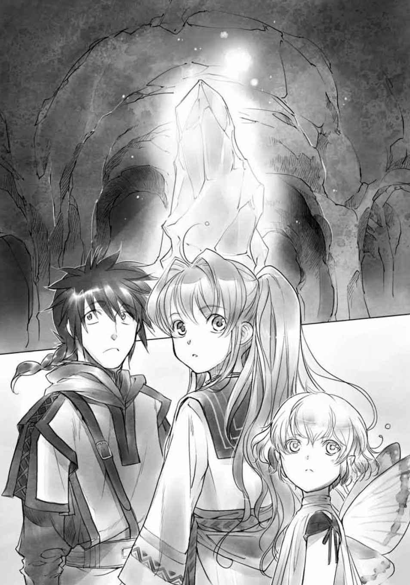
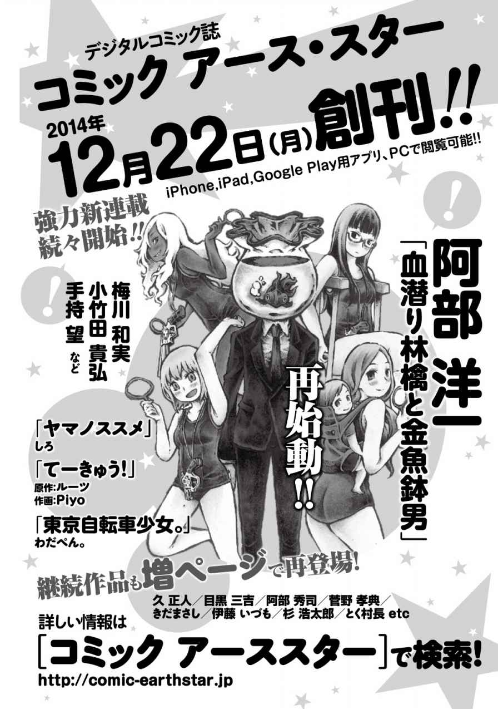

| スライムなダンジョンから天下をとろうと思う。 1 ～スラ子、誕生 (アース・スターノベル) | |
| 再藤 | |
| (2014) | |
プロローグ
......やった。
俺は──、やった。
薄暗い室内。じわりとした湿気に満ちた空気には、換気がされていないせいで薬草の匂いがこもっている。もう鼻が慣れてしまっていて気がつかないけれど、そこにはカビ臭さだって十分以上にまざっていることだろう。
雑多に物が置かれた中央に、うっすらと浮かび上がった五芒星。そのラインに添って注がれた魔力が走査して輝いている。
そこにある物体を見下ろして、身体の奥底から震えが起きるのを止められなかった。
──物体？
なにを言ってるんだ、俺は。これはそんなモノじゃない。
長く濡れた髪。
すらりと伸びた手足。
程よく盛り上がった胸部に、なだらかな曲線を描いて引き締まった腰。
男ならば誰でも目を奪われてしまうくらい肉感的な、けれど十分にスレンダーな体形。
そして──それら全ての、美しい半透明の質感。
淡く輝く魔法陣のうえに横たわるのは、物体などではなく〝生体〟だった。
スライム。
不定性状生命体と呼び慣らわされるそれは、広く一般的な存在だ。
この世界に満ちて在る、魔素 。そこを始源として無数に生まれる生命の一つ、そのもっとも原始的な在 り様 。
暗く、水気のあるところに好んで生息するその魔物には、知性がない。食べる、増えるといった単純な生存本能だけが、彼らの生命活動の全てであるとされてきていた。──今までは。
そう。今まではだ。
「くっくっく、ふは、はっ──げほ、かはっ」
我慢できなくなった笑いの衝動が、喉にからまっておかしな咳になる。
その音で目が覚めてしまったらしい。もぞりと目の前の相手が身体を揺らして、
「ん......」
ほとんどあえぐような声音は、あるいは発声に伴う器官さえスライム質によるものからか。ひどく艶 っぽい呻きに思わずどきりとする。
研究ばかりで部屋にこもっていたんだから仕方がない。男の性 だ。
だいたい、ここ最近は外にさえ出ていなかったから、誰かとの会話だってろくにしちゃいない。この洞窟にいるのは俺以外、使用人代わりの古いスケルトンが一体と、あとは自然に発生するたくさんのスライム達だけだ。
「ます、たぁ──」
横たわったまま、前髪からのぞいた大きな瞳がぼんやりとこちらを捉えて、妖艶に微笑む。
起き抜けでやや呂律 のまわっていない、その艶やかな声を聞いた瞬間。不覚にも俺はうるっときてしまった。
女性体から声をかけられたことに感動したからじゃない。それだってあるが、それだけじゃない。
長年、自分が心血を注ぎこんできた研究。その結実に、万感の思いが湧いた。
......努力なんて代物は、すれば必ず報われるなんて決まっているわけじゃない。自分の中にどんな確信があろうと、それが周囲の理解と協力に繫がるわけでもない。
いや、自分自身にだって、必ず望ましい結果が得られるなんてそんな確信ありはしなかった。だからこそ、俺はこんなところにいる。
「マスター？」
返事がないことを不思議に思ったのか、小首を傾げられた。
「ああ、いや」
あわてて口を開いてから、気づく。
──名前を考えてなかった。
どうする。
〝アカデミー〟を出てこの洞窟に居住し始めてから、実に五年。ただこれだけにひたすら全てをかけて実った研究の成果だ。名前にも、なんというかこう、センスも響きも良い、素晴らしいものをつけてやりたい。
もう十年以上前に飛び出した生まれ故郷の両親にちなんだものにするべきだろうか。それとも、落ちこぼれだった自分に目をかけてくれた恩師に捧げるべきか。それとも、目の前の相手の容姿、その〝元〟になった人物に？
「マスター」
耳にゾクゾク来る魅惑的な声に急かされるように、
「──おはよう、スラ子」
ぱちりと。相手がまばたきした。
「それが、わたしの名前でしょうか。マスター」
「......ああ」
口にした次の瞬間には激しく後悔していたが、今さら取り消すのもなんとなく憚 られてしまい、俺は渋い表情で頷いてみせる。
「いまいちか？」
それでも相手の反応が気になって訊いてしまうのが、我ながら小物だった。
「そんなことないです」
スラ子はにっこりとして、
「いまみっつくらいですね」
「......すみません」
女性体をかたどったスライムは、くすくすと笑った。
「冗談です。マスターからもらった名前ですから。とっても、嬉しいですっ」
なんだろう。
服を着ていないせいか、それとも持って生まれた声質のせいか。一つ一つの発言が艶っぽく聞こえてならない。
スラ子の姿をイメージしたのは自分で、そのイメージの影響があるのかもしれない。それともたまりまくったリビドーの成せる業か。ともあれ、目の前の魔法生体には、なんだか直視に困るような怪しい雰囲気があった。
あるいは、この部屋が暗いのがいけないのかもしれない。
そう思いついて、俺はかかげた手のひらの上に意識を集中させると、体内の魔素 を練り上げてささやいた。
「ライト」
片手に収まるくらいの光源が、言葉を介したイメージに具現化する。
ふわふわと宙に浮かんだ貧弱な灯りはそのまま、頼りなく天井あたりまで昇ってそこから室内を照らしはじめた。昼間のように、とまではいかないが、文字を読むくらいには十分な光度で満たされる。
「お見事です」
「よせよ。ただの灯りだ、初級も初級だぞ」
こんなの、魔道の素養があれば子どもにだって扱える。スラ子の素直な賞賛に俺は肩をすくめかけて、そこで自分の失敗に気づいた。
部屋が明るくなったせいで、それまで魔法陣の仄 かな灯りだけで浮き上がっていたスラ子の外見がより鮮明になってしまっている。
全身が半透明なその煽情的 な体つきに思わず凍りついてしまう俺を見て、スラ子がふと自分の胸元に目を落として。
「なっ......」
それから起こった出来事に俺は驚愕 した。
スラ子の半透明の肢体が、徐々に人の肌色に近づいていく。
擬態？ というよりも、擬装という方が似つかわしいか。
あれよあれよという間に、スラ子の全身はほとんど人間と変わらなくなってしまった。
透明感のある雰囲気と異様な艶っぽさはそのまま、外見は完璧に人間への擬装を終えたスラ子。
いや、ほとんど完璧なスラ子の変貌だったが、唯一〝しきれていない〟部分があった。
長く伸びた髪。スライムの色をそのまま溶かしたように青味がかった毛先に、どこかスライムらしさが残っている。その触感がどうかは実際に触れてみないとわからないが、はっきりとした日の下であれば違和感はさらに強いかもしれない。
「ん。......けっこう、難しいですね」
眉をひそめたスラ子が言う。
俺は呆然と相手を見つめたまま、しばらく言葉もなかった。
惑 うような既視感と、強烈な違和感。
偽装、擬態というのは生物学的に特異な機能ではない。特に、魔素 を扱う魔物達のなかには、様々にユニークな偽り方で生き長らえ、あるいは獲物をとる際の手段にそれを用いる種が存在する。
スラ子の基になっているスライムも、自覚してそういう行いを見せることはないが、より巧みに生きようとするのはどんな生物にも共通する本能だろう。
驚くべきなのは、スラ子が明らかに意識的にそれをやったことだった。
それは本能から一歩進んだ知性活動の証。つまり、知能だ。この一点で、既にスラ子はスライムであってスライムとは明らかに異なる。
そして、なによりもっとも重要なことは──スラ子の見た目が人肌に近づいてしまったことで、より直接的にイヤらしくなってしまっていることだ。
瞬きさえ忘れ、食い入るように見ている自分に気づいて、慌てて目をそらす。近くにあった何かの布を突き出しながら、俺は悲鳴のような声をあげた。
「とりあえず、隠せ！ すぐに服を用意するから、それまでこれでも巻いてろ！」
「了解しました」
にっこり微笑むスラ子に押しつける。
俺の慌てっぷりに、どこか嬉しげなスラ子へ渋面を返していると、かちゃかちゃと遠くから軽い足音が響いてきた。
開きっぱなしの扉から、すっと人間の頭蓋骨が姿を見せる。
暗がりからいきなりそんなものが現れれば、子どもならちょっとしたトラウマくらいにはなるだろうが、俺は驚かず、
「ああ、スケル。悪い、なにか羽織るのを見つけてきてくれ」
現れたのは一体のスケルトンだった。虚空を宿した眼窩 がスラ子を向いて、軽く顎の骨を打ち鳴らして短い了承の意を示してから、また足音と共に去っていく。
「マスター、今の方は？」
「ああ。スケルだ。助手、っていうか、同居人だな。あとでちゃんと紹介するよ」
それより、と俺は咳をついた。
「......スラ子」
「はい、マスター」
うん、何度聞いてもいい響きだ。そして声がエロすぎる。
「スラ子？」
「ふふ。はいっ、マスター」
もっと繰り返したいくらいだが、さすがに呆れられてしまいそうだった。これから何度だって聞けるのだから、と幼稚な欲求を抑えて、
「スラ子。お前がつくられた──生まれた理由は、わかるか？」
「はい、マスター」
スラ子は即答した。
「マスターのご命令に従い、マスターの望みを叶 えるために、わたしの全ては存在します」
背筋がぞくりとした。
それを聞いた俺の胸に湧いた感情は、もしかしたら背徳感に近かったかもしれない。単純な感情で説明できない、その複雑な心境がいったいどこから来るのか自分でもよくわからなかった。
「マスター？」
「ああ、いや、すまん。うん、その通りだ。そして、俺が望むものはもちろん」
息を吸う。そして、
「世界征服だ！」
吠えた。
「おー」
ぱちぱちとスラ子が手を叩く。
「思えば長かった......」
俺の脳裏に、今までの苦労が次々に浮かんでは消えた。
「故郷を飛び出して入ったアカデミーでは、魔物連中からなんの能力もない人間風情と罵 られ、ろくな研究成果もだせず。当然、割のいい赴任先なんて斡旋されるわけもないから、向かわされたのがこんな辺鄙 な場所だ。森に湿地、生活環境最悪。近くの一帯は悪戯 好きの妖精連中の縄張りだし、おまけに山の上には竜まで住み着いてるときてる。近頃は町の連中まで分もわきまえずに進出してきて、生きた心地がしない。冒険者どもに叩き殺されたくなければ、洞窟に籠 もってひたすら息を潜めておくしかなかった......」
「残念な人生だったのですねー」
「包め。オブラートに。──だが、これからは違う！」
ばん、と力任せに手を打ち鳴らす。けっこう痛かった。
「この五年間、洞窟に引き籠もって続けた研究によって、スライムに定まった人の形と共に知性まで与えることに成功した今！ 俺はこれから人生の大攻勢にでる！ 一気呵成に突進猛勢だ！」
「はい、マスター」
まだ演説の途中で、ぴしっとスラ子が右手を挙げる。
「む。なんだい、スラ子君」
「わたし、腕力や魔力は他のスライムとたいして変わりないと思うのですが。実際、わたしだけではどうでしょうか」
「なんだ、そんなことか」
俺ははっはっはっと笑って、スラ子の肩を摑む。ひやりとした、なんともいえない心地良さを手のひらに感じながら、
「問題ない。スラ子、お前はもうスライムであってスライムでない。オンリーでサイコーなスライムだ、スライム・オブ・スライムだ。お前にできないことなんてない」
「そんなものでしょうか」
スラ子はちょっと困惑した顔だった。
「だいたい考えてみろ。腕力があれば最強か？ 魔力があれば無敵か？ そんなわけがない。どんな勇者だって寝首を搔 けば死ぬし、どんな生き物だって呼吸を止めれば細胞は死滅する。俺とお前には飛びぬけた力や、ずば抜けた魔力はないかもしれないが、だったらどうだっていうんだ。そんなものよりよほど大切なものが俺にはある」
「マスター。それは、もしかして──」
なにかに期待するような眼差しに、俺は大きくうなずいて、
「ぼっちパワーだ！」
スラ子の眼差しが一気に冷たくなった。
「アカデミーでもひたすら研究室に籠もっていた、俺の暗黒パワーをなめるなよ？ 魔力？ 腕力？ そんなもん、練りに練った策略でけちょんけちょんにしてやるわ、クケー！」
「奇声になってます、マスター」
「む。すまん、ちょっとテンションあがった」
「いいえ。なんだかマスターがぼっちだった理由がわかった気がします」
「言うな。ストレートに。えー、つまりあれだ。お前なら出来る！」
スラ子の細い肩を叩くと、ぴしゃんと水面を跳ねるような音。
「お前はスライムの女王になるんだ！ スライムの星だ、スライム・ザ・ライジングスターだ！」
綺麗に整った眉を寄せて、困ったように笑ったスラ子がため息をついた。
「......もう。強引ですね、マスター」
そっと肩の俺の手に自分の手を重ねる。冷たくて柔らかい、それでいて温かみのある不思議な感触に、俺はまたどきりとした。
「わかりました。全てマスターのお心のままに。なんなりとお申しつけください」
絶妙の角度で微笑。
魅了の魔法でも使われたかのように、俺は息を止めて。慌てて視線をそらした。それ以上目を合わせていると、魂ごと目の前の相手に吸い込まれてしまいそうだった。
「うん、ええと。まずはあれだ。冒険者だなっ」
「冒険者さんです？」
「ああ」
顎に手をあてるスラ子に、俺は渋面をつくってうなずいて、
「連中、俺がちょっと甘い顔をしておいたらつけあがりやがって、人の家だっていうのにずかずか入り込んできやがる。最近じゃ『初心者向け』なんて触れ込みで、わいわいがやがや、ほとんどピクニック気分だ。クソ、ふざけるな」
「なめられてますねぇ」
「だから包め、オブラートに。......まずはあいつらに、ここが恐ろしい魔物の住処だと教えてやる。いくら探したところでお宝なんてあるわきゃないのに、いつ帰ってくれるかなーとか隠し部屋に潜んでドキドキしてるこっちの身にもなれと、切実に懇々と訴えてやるべきだ」
「マスター」
「言うな」
「まだ言ってません、マスター」
スラ子の視線は冷ややかを通り越して哀れむようだったが、俺は気にしなかった。そんなものには慣れている。
「全てはこれからだ。連中に目にものを見せてやる！」
「わかりました」
「もちろん、お前にも手伝ってもらうぞ、スラ子。お前には考える頭も、なにかを作る手もある」
「お心のままに」
どこまでも従順な返答に、それだけでテンションがひたすら上がる。
「そう、お前ならできる。敵が屈強な冒険者どもだろうが所詮 は人間！ 全てその身にとりこんで、喰らい尽くしてしまえ！」
「屈強な、ですか？」
スラ子が小首を傾げた。
「そうだ。筋骨隆々、たとえ鋼のような剛毛をたくわえた熊男だろうが、お前なら──！」
んー、と顎に手をあてたスラ子が、
「そういうのはあんまり、趣味じゃないですね」
ん？と俺も首を傾げる。
「趣味？」
「そういう男くさい人は、ちょっと......。わたしにも好みがありますし」
スラ子は至極 当然という表情だった。
スライム。食事。好み。ムサい大男は嫌。
なにかが激しく間違っているような気がしてならなかったが、スラ子の表情は大真面目だったから、なんとなくこちらも頷いてしまう。
「......だな。好みは大事だからな」
「そうです、好みは大事ですよ。マスター」
言って、スラ子は妖艶に微笑んだ。
一章 引きこもりの魔法使いと辺鄙な洞窟
▽ １△
「これはひどい」
住まいである洞窟の中を見てまわって開口一番、スラ子は心の底からついたようなため息と共に言った。
竜の住まう山の麓 。鬱蒼 と生い茂った深い森と、湖に面した場所に我が家はある。
天然の洞窟をそのまま利用した内部は決して深くもなければ、広くもない。冒険者連中から『初心者用』などと見下され、ほとんど経験もないような駆け出しに荒らされてしまった洞窟の様子は一言でいって、惨憺 たるものだった。
ご丁寧に、入り口には町の人間が立てた看板が雑に傾いている。
『初心者用ダンジョン。長時間の占有、魔物の狩り過ぎに注意！（イジメよくない）』
なにが注意だ！──思いっきり看板を蹴倒そうとした足の爪先を看板の角にしたたかにぶつけて、俺は声もだせずに悶 えた。目に涙を溜めながらそっと確認すると、スラ子はこちらの醜態 にさりげなく気づかないふりをしてくれている。
外に出るにあたって、とりあえずスラ子には俺のお古を着てもらうことにした。男物ということもあるから、全体的に動きやすそうな見た目で、背中まで伸びたスライムっぽい長髪も邪魔にならないように頭の高い位置で括られている。
尻尾のような青髪を揺らしてこちらを振り返ったスラ子が、
「人間さん達は、どのくらいの頻度でやってくるのですか？」
「冒険者なら、だいたい週に一度くらいだな」
「時間はやっぱり、お昼です？」
「ああ。近くの町からは森を通ってこないといけない。夜にやってきたことはほとんどないな。だから、こっちが用事で外に出る時は、基本、夜にするようにしてる。鉢合わせしたりしたら怖いからな」
「胸を張らないでください」
呆れたように言って、スラ子は洞窟の入り口に立って周辺をぐるりと見渡す。
湖の周囲にできた森の切れ間。湖面がキラキラと輝いて見えるのは降り注ぐ月光と、そこに満ちる魔素 の揺らめきでもあった。
最低限の魔道の素養とは、魔素 の働きを目視できることを言う。
つまり魔法使いとは、わかりやすく言えば世界がちょっと違って見えるだけということでもある。そういう連中が、日中より可視が容易になる夜中を好んで行動するのも理由は同じ。とはいえ、生活習慣が不規則になったり、自分の家に引き籠もったりするのはまた別の話だが。
「妖精の泉、というのはこの湖のことではないですよね？」
「ああ。もっと森の奥にある。そこの連中は、たまにこっちまで遊びに来たりするけどな」
「......遊ばれたのですね」
「なんだその目は。俺は大人だぞ。こっちが遊んでやったに決まってるじゃないか。泣かされてなんかないぞ、ほんとだぞ」
「わかりました。わかりましたから。そして──後ろの山の、ずっと上に、竜の住処」
振り返ったスラ子が、暗闇に包まれた山頂を仰ぎ見る。
「そうだ。偉そうな連中だ。なんとかと馬鹿は高いところが好きって言うからな、お似合いだ」
「竜族といえば、ものすごーくプライドが高い方々ですよね。麓とはいえ、よく住まわせてもらっているなぁと思いますけど、なにか交渉されたのですか？」
「当然だ」
こともなげに言ってみせると、おー、とスラ子が目を輝かせる。
拳を握り込んで期待の表情をむけてくる相手に、俺はにやりと笑ってみせた。
「みかじめ料を払ってるからな」
殴られた。
「......なんで殴る」
「ツッコミです」
「そうか。ツッコミなら仕方ないな......ちょっと待て。捻りをいれながら抉 り込んでくるツッコミなんて聞いたことないぞ」
「そうですか？ わたしの知識は全て、マスターからいただいたものですから......もしかすると、なにかそういった行為を好まれる特殊な嗜好 を心の奥底にお持ちなのかもしれませんね」
「勝手に人の深層心理を決めつけようとするんじゃない。俺のこれからの人生観が変わったりしたらどうしてくれる」
「そうですね。それで、マスター」
普通に受け流された。
「なんだ」
「みかじめ料っておっしゃいましたけど、そもそも、マスターってどうやって収入を得てるんですか？ 洞窟に冒険者さん達が襲ってきても、ずっと奥に閉じこもってたんですよね」
「人を引きこもりみたいに言うな」
「違うんです？」
「違わないです。......薬草とかをな」
「はい」
「洞窟の中とか、あとこのあたりの水辺にもけっこう生えてるから。それを地道に採集して、煎 じてだな」
「ええ」
「こっそり近くの町に売りに行ったりして......」
ものすごく冷たい目線を向けられた。
「誇りはないんですか？」
「埃なら家の中にたくさん落ちてるわい。だって竜のやつ、ひどいんだぞ！ 一回、みかじめ料の払いが遅れかけた時なんか、こっそり居留守決め込んでたら洞窟ごと落盤させようとしやがった！ しかも笑いながらだ！ ずっと部屋に隠れてて、それでも馬鹿でかい声が聞こえてくるんだぞ！ やっと静かになったと思ったら、入り口がでっかい岩で塞がれてたんだ！ 出るのに十日もかかった！」
力説する俺を哀れむように、スラ子は穏やかな表情で見守っている。
「わかりました。わかりましたから、涙を拭いてください。男の子がそんな簡単に泣いたりしちゃダメですよ？」
「０才児が子ども扱いすんな！」
大声でわめくと、ますます生温かい視線を向けられる。心の底から思いやるような眼差しに、逆に俺は傷ついた。
はあ、とスラ子が艶のあるため息。
「しかし、ほんとに立地に問題がありすぎますね。いっそのこと、どこか別の場所に引っ越した方がいいんじゃないでしょうか」
「......それは、イヤだ」
「どうしてです？」
自分が渋面になっているのを自覚しながら、
「この洞窟には、よくスライムが湧くんだ。ちょうどいい具合にマナの吹き溜まりができるし、周りの生態系のバランスとかも。だから、ここからは移りたくない」
スラ子がじっとこちらを覗き込んでくる。
「マスター」
「な、なんだよ」
「マスターは、どうして、そんなにスライムのことがお好きなんですか？」
ひどく真剣な視線に、俺は思わず顔を背けて、
「別に、好きとかそんなんじゃ──」
「おっさんのツンデレは可愛くないからいらないです」
「......なんかお前、どんどんツッコミが厳しくなってないか？」
「そんなことありませんよ」
スラ子はにっこりと微笑む。
非の打ちどころのない笑顔を前に、それ以上言い逃れできそうにもなく、しぶしぶと白状する。
「ぼっちだったからな。昔から、スライムとはよく遊んでたんだ。どこの田舎にだってスライムは湧くし、アカデミーでもスライム専攻だったしな」
スライムはこの世界でもっともありふれている種類の魔物だ。その能力特性は決して低くないが、対処さえ間違えなければそうそう危険な目には遭わないし、積極的な凶暴性もない。
魔素 という不可思議な力が姿をとった、その原始的な生命の形と考えられているスライムは、昔から研究対象にもなっている。いや、なっていた。
今時、スライムのことを専攻している奴なんて滅多にいない。スライムという存在に対する学術的価値は先人達の研究でほとんど定まってしまっていた。
太古の昔、この世界に生命が発生した頃から変わらずに居続けただろうとされるスライムは、魔素 に関わる自然サイクルにおいて基本的位置にある。その性質を利用して土壌改善や環境浄化に使われることもあるが、人間達には不評だった。多くの場合、そこにはスライムという獲物を求めた他の魔物達まで集まってきてしまうからだ。
そんな古臭いスライム研究をどうして俺が専攻していたかというと──ひどく簡単だ。他になんの取り得もなかったからに尽きる。
「なるほど」
「ふん。馬鹿にしたいなら馬鹿にしたらいいだろ」
「馬鹿にしたりなんかしません」
スラ子は嬉しそうに言った。
「わたし達の。わたしの、マスターですから」
その表情は、俺のよく知る人物の笑顔を思い出させるもので、それでそんな台詞を言われるものだから、なんだかやけに気恥ずかしかった。
よーし、とスラ子が拳を握る。
「ここでなんとかやっていきましょう！ とりあえず、明日の昼にでも冒険者さん達がやってくる可能性を考えて、それまでに──罠とか、戦術とか！ わたしがいる以上、もうマスターにひたすら引き籠もらせたりなんかしませんよー！」
おお、なんだかやけに気合が入ってる。
「マスター！ 戦力は！ 侵入者を迎撃できる手駒はどのくらいありますかっ」
熱っぽく言ってくるスラ子の勢いに押されながら、
「戦力か？ 戦力っていうと、スライムとか。あとは、雑用向けにつくった、さっきのスケルトン──スケルくらいか。でも、スケルはもう戦闘には耐えられないだろうなぁ」
もともと戦闘用の強度には怪しい作りだが、それに加えてけっこう稼働年数が経ってるので身体のあちこちにガタが来てしまっている。
「スライムです！ わたし達はスライムでのし上がっていきましょう！」
「スライムなら洞窟の中にいくらでもいるし、研究用にずっと繁殖させてきてるから、そりゃ十や二十はいるが──」
まさか、と俺はそこではたと気づいた。
「おい、スラ子。──お前、スライム達を戦闘に駆り出すつもりかっ？」
スラ子はきょとんとした顔で、
「そのつもりですけど？」
「ダメだ！」
俺は悲鳴を上げた。
「俺の可愛いスライム達を戦闘に使うなんて、そんなこと許せるか！ 俺は断固として反対するぞ！ スライムはそんな野蛮なことしないで、俺の傍でふるふるしてくれていれば、それで──」
台詞の途中で、笑顔のスラ子にきゅっと首を絞められた。
「わ、た、し、も、スライムなんですが」
「で、でふょねー」
苦しい。窒息する。
三度タップすると、ようやく俺の気管は解放された。
「......ふ、普通に力強いじゃないか。お前」
「それでも、大の大人くらいですよね。冒険者さんを相手にするのは厳しいでしょう」
スラ子は思案するように顎に手をあてた。
「いくら初心者向けの場所に来る相手でも、正面からは避けたいですね。運良く無事に倒せたとしても、すぐに次がやってくるでしょうし。となるとやっぱり、罠に、迷路。そのあたりを上手く設置して......」
ぶつぶつと呟いている。
どうでもいいが、まずはゴホゴホと涙目で咳込んでる主人の心配をするべきなんじゃないだろうか。
「マスター、軍資金はどのくらいありますか？」
「なにそれ美味しいの？」
無言で頭を鷲摑みされた。
力が入る、入る。
「頭が割れてしまいます、止めて、止めてください！ ほんと痛いぞ、おい!? 」
「お金は、どのくらい、残ってますか？」
手のひらに遮られた視界からわずかに覗いたスラ子が、優しげな笑みを浮かべたまま言う。
「ない！」
「なんでないんですか。お金がなくて生きていけるわけないじゃないですか。みかじめ料だって払わないといけないんでしょう？」
「だから！ 全部、お前を作るのに使ったから！ 文無し！ 文無し！」
「貯金は？ 老後の積み立ては？ いざという時のへそくりはどこに隠してるんです？」
「んなもんあるか！ 俺は今この一瞬を雲のように自由に生きるんぎゃあああああああああああ!? 」
アイアンクローが外れた後も、頭痛はしばらく引かなかった。
痛すぎてくらくらする頭を押さえながら、俺は涙で滲 みきった視界でスラ子を睨みつける。
「なにしやがる！」
「家計簿、つけましょう」
スラ子が言った。
「......は？」
「ですから、家計簿です。今、洞窟の中にあるものと、収入。支出。次に支払うみかじめ料のこととかも計算して、薬草でもなんでも作って。それで罠を買ったり、迎撃用に武装するお金を貯めましょう。いいですね？」
有無を言わせない迫力。
落ち着いた口調で的確な提案をしてくる相手に、その主人であるところの俺は、それに対して威厳をもってこう答えるしかない。
「わかりました」
「これから家の中を確認して、備品や在庫管理の現状をまとめます。いいですね？」
「わかりました」
......なんだろう。おかしい、いつの間にか主導権が完全に向こうに渡ってやしないか？
「マスターはその間、洞窟の中のお掃除をお願いします。その辺りに散らかったホコリをまとめて全部、拾い集めておいてください。いいですね？」
「埃を拾って誇りを取り戻せってことか。はっはっは、上手いこと言うなあ」
「ちょっとでも床に残ってたりしたら、口から食べさせますよ。いいですか？」
「わかりましたでありますッ！」
「よろしい」
にっこりと微笑んでみせる。
スラ子の表情にはすでにある種の風格さえ備わっているようで、口答えなんか出来やしなかった。
湖からすぐのところにある我が家は、とても湿気が強い。
山の麓にある洞窟の内部は入り口から少しずつ下った斜面が続いて、右に左に、ぐにゃりぐにゃりと中で曲がりくねっている。
中の高低差は大したことはない。
一番奥に深い穴があって、それがどのくらいの深さで続いているかは見当もつかないくらいだったが、それ以外の勾配は基本的に緩やかだ。
枝分かれする通路には行き止まりがそれなりにあるけれど、そこまで入り組んではいないし、はっきりとした道順もわかりやすいから、よほど捻くれた感覚の持ち主でもない限り、迷ったりすることも少ないだろう。
洞窟のあちこちには、スライムなんかの発生源となる魔素 の吹き溜まりがいくつかあって、けれどその規模も濃度も大したことはないから、凶悪な魔物が自然に生まれることはほとんどありえない。だからこそ、『初心者用』というわけだ。
あちこちで山の中を流れる地下水が表出していて、壁一面にはびっしりと苔が生えていたりする。暗くてジメジメした生態環境は、まさにスライムの生息に打ってつけだった。
自然界には食物連鎖というものがある。
そして、それはもちろん魔物にも適用される。
スライムが多く発生する場所には、上手くできたものでその天敵と呼ばれる生物が集まり、今度はその天敵を捕食する生き物が現れて、という風に、魔物の数やバランスは案外一定に保たれているものだ。だが、時にはそうしたバランスをとるために人為的な役割が必要になってくる場合もある。あるいは、自分達にとって好ましいバランスを調整するためということもあるだろう。
俺は魔物アカデミーという、魔物達がつくる相互扶助組織みたいな所から、ここの洞窟に派遣されて来ている。その仕事は、洞窟内部に発生する魔物の管理や、魔物の発生源となる吹き溜まり──魔渦の管理だ。
もっとも、近くに住んでる町の連中から看板まで立てられてしまうようなこんな場所だ。
誰からも注目もされなければ、深部にとんでもない秘密が隠されていたりするわけでもない。アカデミーだって、スライムくらいしか湧かないこの洞窟そのものについて、たいして強い関心があるわけじゃない。
落ちこぼれに与えられた、場末のダンジョン。まさにそれだ。
だからこそ、俺は今日まで生き延びてこられた。
ろくなお宝もなければ、貴重な鉱物類も薬草の自生もない。せいぜいスライム程度の魔物しか湧かないダンジョンには、わざわざ腕のある冒険者なんかはやって来ない。
やって来るのはせいぜい初心者に毛が生えた程度の、駆け出しや不真面目 組くらい。そして、初心者というのが不慣れなのは戦闘だけに限った話ではなく、そうした連中は洞窟の探索そのものがまず甘いことが多い。
隠し通路や、その他の生活痕。
俺だってもう五年近くこの洞窟に住んで来ているのだから、きっと目ざとい相手になら見つけられてしまっていただろう。
そして、あっけなくやられていたに違いない。
自慢じゃないが、俺の戦闘能力はまったく大したことはない。頭脳労働派なのだ、俺は。まあ、その頭脳も本部に残れるほどではなかったわけだが。
......やばい。なんだか涙が出てきた。
とにかく、我が物顔でこの洞窟を探索する冒険者連中に、涙をこらえながらこっそり物陰に隠れて過ごすような屈辱的な真似も今日までだ。
そう、今日から俺は生まれ変わる。
有象無象の連中を薙ぎ倒し、並み居るエリート魔物を出し抜いて、いつかこの俺が全ての魔物の頂点に立つ日が──手に持ったはたきをぐっと突き出して、すぐに下ろした。そうした〝いかにも〟な妄想は、自分で思ってもまるで似合っていなかった。
ぱたぱたと壁をはたきながら、ダンジョンを掃除する意味について考える。
ダンジョンなんて汚れてなんぼじゃないかと思うのだが、それを誰かに言ったらまたにっこりアイアンクローされそうなので怖くて言えない。
そっと様子を窺うと、俺の机に向かったスラ子は黙々と、熱心に目の前の作業に集中していた。
家の中にある物を調べ、見取り図を作って、適当に投げ置いたりしていたものをまとめて数をかぞえ、在庫を整理したそれらを全て記帳してまとめる。
作った本人がびっくりするくらい、スラ子は優秀だった。
とても生まれたばかりとは思えない。製作者としてはそれを素直に喜ぶべきなのかもしれないが、それまで好き勝手にやってきた自分だけの城をあちこち弄 られることになにも思わないでもなかった。加えて、スラ子がどんどん一人で物事をこなしていくのを見ていると、なにもしてないこっちは妙にいたたまれなくなってしまう。
それに、俺はメイドをやって欲しくてスラ子を作ったわけじゃない。俺がスラ子に求めたものはもっと違うもので──正直、心情としては複雑だった。
と、俺がそんなことを考えていると、
「──よし、と」
水気を帯びた声で満足げに呟いたスラ子が顔を上げた。
目が合う。
にっこりと微笑まれた。
「マスター。一応ですが、全て終わりましたっ」
「ああ、うん。お疲れ」
「はい。マスターもお掃除、お疲れ様です。あ、すぐにご飯の支度しますね。向こうで休んでてください」
と言って、スラ子は小走りに台所へと向かう。
その後ろ姿を黙って見送りながら、いやこれはこれで全然ありだなと早くも俺は思い始めていた。
スラ子はすぐに夕飯を用意してくれた。
ただでさえ金欠で、しかも洞窟なんて物資を保管するのに致命的に向かないから、ろくな食料も残っていなかったはずだが、スラ子はそれを見るからに美味しそうな代物に変えてしまった。
スープにサラダ。堅パンというには硬すぎるパンは細かく千切って、スープの中に粥状にしてある。極貧生活を送る俺なんかには十分、豪華な食卓だ。
久しぶりにまともな夕餉 が並んだ食卓を見て俺は感無量だった。
「料理なんて初めてのはずなのに、凄いな」
「なに言ってるんですか。これだって、マスターが下さった知識じゃないですか。マスターにも出来ますよ」
そんなものだろうか、と俺は首を捻る。
今まで曲がりなりにも自炊してきたが、毎日の食事なんてどうしたって雑になってしまうものだった。芋を茹でただけとか、しなびた野菜の丸齧 りで済ませたことだって少なくない。
「それはですね、マスター」
スラ子はどこか誇らしげに、
「マスターのご飯だからです。自分だけの料理を作るのと、誰かのために作るのって、きっと違いますよ」
「......そんなもんか？」
「そんなもんですっ」
嬉しそうにスラ子は断言した。
駄目だ、この笑顔だけで大抵のことに納得してしまいそうになっている。我ながらちょろすぎる。
「えー、あー。とにかく、ありがとう。さっそく食べてもいいか」
「はいっ。あ、スケルさんもどうぞこちらに」
スラ子が声をかけると、部屋の隅に突っ立っていたスケルが目のない窪みを向けて、ゆっくりと左右に首を振った。
言葉を喋れないスケルトンが言いたいことを察して、俺は頭をかいた。
「ああ、そうか。椅子が足りないな」
ここにあるのは小さな食卓と、椅子が二つ。誰か一人が座れなくなってしまう。
「あ、じゃあ、わたしはいいですから、スケルさんが座ってください」
かたかたかた、とスケルが骨を鳴らす。
「なんておっしゃってるんです？」
「多分、自分は食べないからここでいい、とかだと思うが......」
「駄目ですよっ」
スラ子が頰を膨らませた。
「スケルさんの方が昔からいらっしゃるのに、わたしが座ってスケルさんを立たせるなんて。これはスケルさんが使ってください」
スラ子が椅子を押しつけると、スケルもかかっと骨を鳴らしてそれに抵抗する。まるで見かけの違う二人の拮抗した争いに、
「わかった、わかった。隣から持ってくるから、二人ともちょっと待ってろ」
話に決着がつく前にスープが冷めてしまう気がして立ち上がりかけた俺の鼻先に、すっとスケルが骨の手を広げてみせた。威嚇 のように素早く骨が打ち鳴らされる。
俺はため息をついて、
「じゃあ、スケル。持ってきてくれ」
かたたっ、と小気味よく顎の音を鳴らして、古参のスケルトンは頷いた。
すぐにスケルが研究室から椅子を引きずって戻ってくる。
「よし、じゃあ今度こそ飯だ、飯」
「はいっ」
スラ子が微笑んで、スケルもかかっと首肯する。
俺は木の匙 をつかんで、なにげなくスープを一口しかけて──口元に運んで含む直前、不意に息が詰まった。
別にそれはあたたかい湯気にむせかけてしまったとかではなく。
不自然に硬直してしまった俺を、自分も匙を握りながら不安そうにスラ子が見つめてくる。
「なにか苦手なもの、入ってました？」
「......いや、悪い。そうじゃない」
声を振り絞って、口の中に流し込む。味は──美味い。あんな余り物の食材からよくも、と思うくらいに美味しかった。
じわりと視界の端が滲んだ。
「マスター、どうかしましたかっ？」
慌てた口調で声をかけてくるスラ子に首を振って、俺は黙って二口目を流し込んだ。スープが熱いせいにしないと情けなくって仕方がない。
......こんなにちゃんとした食事なんて、何年振りだろう。
魔法生体のスケルは食事をしないから、確かにスラ子が言ったように、いつも自分の分だけしか用意はしなかった。
だけど多分、食事の内容なんてどうでもいいことだった。
誰かと食卓を囲むというのが、ひどく嬉しかった。慣れてない気恥ずかしさや、他人の目が気になるっていうことはあるけれど。
顔を上げる。
心配そうにこちらを見つめるスラ子を見て、それからもう一人の方に顔を向ける。
かかかっ、と骨が鳴った。
俺はそっぽを向く。
人間の頭骨なんていう不気味でしかないはずの表情が、どことなく微笑んでいるように見えたからだった。
夕食を終えて、俺とスラ子はこれからのことについて話をすることにした。ちなみにスケルは皿洗いをやってくれている。
「あちこちに薬草なんかをまとめたら、けっこう使えそうなのもありましたから、まずはそれの処理をやってしまった方がいいかなぁと思います。マスターが研究に使う分だけ残して、あとはお金にしてしまいませんか？」
「それはいいが、そんなに量はできないと思うぞ。薬草とかも、あんまり高くは買い取ってもらえない。町の道具屋、こっちの立場が弱いと思って足下見やがる」
性根の悪さが顔に出ているとしか思えない店の主人の表情を脳裏に浮かべていると、宥めるようにスラ子が言った。
「まあまあ。材料はまた集めることも出来ますし。とりあえず、少しでもお金があった方がなにかあった時のためにいいと思います。来週、支払わなきゃいけない竜さんへのみかじめ料は、人間のお金でいいんでしょうか？」
「ああ。て言うか、あいつらは光ってるモノが好みなんだ。一回、ガラス玉を大量に渡してやったら焼き殺されかけたけど」
「無駄にチャレンジャーですねー」
「ほっとけ。だから、別に人間の金じゃなくてもいいはずだぞ。金塊やなんかがどこかそのあたりに落ちてたらの話だけどな」
「この洞窟に、金の鉱脈とかがあれば良かったんですが......」
「そんなものがあったら周りの人間連中が黙ってないし、竜だって俺なんかを住まわせてくれる理由がないだろう」
「それもそうですね」
「それとも、スラ子。前の身体の時に、なにかそれっぽいのを見つけたとかか？」
ちょっとした期待をふくめて訊ねると、スラ子は首を横に振った。
「すみません。この身体になる前のことは、あんまり記憶がないんです。というより思考が定まらないというか......、自分でもよくわからない感じで。けれど、そういう鉱脈を見かけたことはないと思います」
「まあ、そうだよな。それに、近くに鉱脈があれば金精霊 を見かけたりするはずだ」
そんな都合のいい話があったら苦労はない。
「とりあえず、準備をしましょう。今の状態で冒険者さん達にケンカを売ってしまうと後が怖いです」
「相手を選べばなんとかなるんじゃないか？ たまになら、二人組なんてふざけた連中がやって来ることもある。さすがに、ソロってことはほとんどないけどな」
初心者二人くらいなら、なんとかならない相手じゃない。
俺とスラ子、そしてあんまり気が進まないがスライムの何匹かを使えば、撃退は十分に可能だろう。
しかし、スラ子は難しそうな顔つきで、
「マスター。マスターは、〝人間〟ですよね」
「ああ。魔物ってのは別に種族のカテゴリー分けじゃないからな」
「そのマスターから見て、人間という種族の一番やっかいなところはなんでしょう」
そんなことを言ってきた。
眉をひそめる俺に、
「わたしは、数だと思います。正確には、無秩序な数の団結と、暴力。群体のような行動をとって、なおかつ自儘 に生き、それどころか互いに殺し合ってまでみせる生き物。彼らは自分達の敵を見つけたら、容赦しません。倒しても倒しても湧いてくる。一人を倒せば二人。二人を倒せば三人、四人。そうなってしまったら、もうどうしようもありません」
スラ子は真剣な表情だった。
「一度、〝敵だ〟と認識されたらおしまい、って話か」
「少なくとも、ジリ貧になってしまうことを承知で、それに対する方策をとれる状況になるまでは、正面から彼らに戦いを挑むべきではないと思います。それまでは慎重に、彼らの隙を窺うべきかと──」
黙り込んだこちらを見て、スラ子が顔を俯かせた。
「......すみません、マスター。今まで耐えてきたマスターに、まだ耐えろだなんてそんなこと」
「ああ、違う違う。感心してたんだ」
「感心？」
「ああ。凄いなと思って。作られて初日で、そんなことまで普通に考えてくれてるから。それで驚いただけだ」
「違いますっ」
スラ子はちょっと怒った口調で言った。
「マスター。わたしを創ってくださったのはマスターです。わたしは、マスターなんです。わたしが出来ること、わたしが思いつくことは、全部、マスターなら出来ることなんです」
真摯な眼差し。
どうしてそこまで必死な口調で言われるかわからず、俺は困惑した。
「いや、うん。ありがとな」
スラ子は、もうっ、と小さく息を吐いた。
ふと思い出したように長い睫毛──のような、とにかくそうしたものを瞬かせる。
「そういえば、マスター」
「なんだ？」
「料理を作ってる時に気づいたんですが。わたしの身体って、どのくらい自由に〝変化〟させられるんでしょう」
スラ子の持ち上げた右腕が、ゆらりと形を変える。一本の剣のように、そして鞭 のようにしなって、最後にまた腕に戻った。
生まれて間もないのに、ひどく手慣れて見える形態変化に俺は感心しながら、
「ああ。そのことについて話してなかったな。......理屈で言うなら、多分、いくらでも」
「いくらでも」
「そうだ」
俺は息を吸って、
「スラ子。お前の形は、お前が決めるんだ」
「わたしがです？」
大きな目をぱちくりとさせる相手に頷いて、
「スライムってのは不定形性状だ。つまり、決まった形がない。今のお前は、俺の浮かべたイメージと、注がれた魔力がその基本容姿をつくってる。そして、それを保ってるのは、魔力信号で疑似的に作られたお前自身の意思だ」
疑似的、とは言ってもそれはきっかけになっただけで、今のスラ子の意思は紛れもなく本物のはずだ。
ようするに、俺が洞窟に五年間も引き籠もって心血を注ぎ込んできたことは、魔力を循環させて意識を生じさせる。その最初の刺激という、たったそれだけに尽きるのだから。
「さっき、お前は起きたばかりで人肌になってみせたよな？ それと同じだ。お前がお前自身を認識出来る限り、いくらでも全身を変化させることが出来るはずだ」
続ける前に、ぺろりと唇を舐める。
「──逆に言ってしまえば。お前がお前自身を見失ってしまえば、お前は自分を保てなくなる。お前は、お前が思うことで成り立つ存在なんだ」
この話はとても重要で、よく理解しておいてもらわないと困ってしまう。
スラ子もそれは承知しているらしく、じっと黙って耳を傾けてくれていた。
「だから、慣れるまで変化は一部分に留めておけ。少しずつ身体を馴らしていかないと、お前はついさっき生まれたばっかりなんだから。ああ、それと燃費のこともだな」
「燃費、ですか？」
「お前が姿を変化させるのには、お前の中にある魔力を使うわけだから、その魔力が無くなったら──」
それから先は、わざわざ言うまでもない。
「変化もだが、身体を保ってるだけでもけっこうな魔力が消費されるはずだ。お前は、俺みたいな人間や他の生き物に比べると、マナ寄りだからな」
スラ子は小さく頷いて、
「魔力の補充には、今こんな風にしている食事では、」
俺は腕を組んでみせた。
「ちょっと間に合わないだろうな」
魔力。魔素 とも呼ばれる神秘の力は、この世界に存在する全てに含まれている。
だから、経口摂取というのも決して無意味な行為ではない。ただし、肉や野菜、その他に含まれているものから魔力を抽出するのにはひどく手間がかかる。もっと厳密にいえば、濾過 効率がよろしくない。
一般的なスライムは、例えばこの洞窟でなら岩苔なんかを〝非効率〟に食べて生きているわけだが、ただそこにいるだけの彼らとスラ子ではそもそもの運動量が違いすぎる。スラ子が彼らと同じようなやり方で消費魔力を賄おうとすれば、かなりの量が必要だろう。それはちょっと食費的な面からも厳しい。
「それじゃあ、わたしがあんまり動き回っちゃうとご迷惑をかけてしまいますね」
スラ子が残念そうに言った。
せっかく生まれたというのに、自由に活動させてやれないのは申し訳ない気分で、俺は説明を補足した。
「いや。とりあえず、一日一回、お前の生まれた魔法陣に俺が魔力を注ぐから、寝る時にでもそこにいるようにすれば、随分と効率よく補給できるはずだ。あの魔法陣は、お前の生まれた場所みたいなもんだからな。すんなり馴染 む。もちろん、無茶な変化をしたりしたらそれでも追いつかなくなるかもしれないから注意しろよ」
最後は軽口にして笑いかけたが、スラ子は神妙な顔つきのままだった。
少し脅かしすぎたかもしれない。いくらスラ子の魔力消費が激しいと言っても、一日や二日で魔力が切れることなんてないはずだから、安心させてやろうと口を開きかけて、
「マスター」
「ん？」
スラ子が、じっと見つめてきた。
「その必要分の魔力を、わたしが自分から手に入れることはできますか？ 普通の食事や、マスターが力を込めてくださった魔法陣以外の方法で」
俺は、どう答えようか一瞬迷ってから、正直に答えることにした。スラ子は頭がいい。質問の形式を採ってはいるが、答えにだって薄々気づいているかもしれない。
「食べればいい」
単語の意味を正確に理解したんだろう。スラ子は表情を変えなかった。
食べる。この場合のそれは、普通の意味での食事とは微妙に異なっている。
「さっきの話で言うなら、例えば牛一頭を丸ごと消化すれば、肉質からの非効率的な吸収でもそれなりの魔力は入る。でもそれをもっと効率よく奪うなら、」
「──精気」
正解だ。
俺は肩をすくめて、
「そういうことだ。そっちなら、普通の食事よりよほど効率は良くなるだろうな。だけど、別に無理してそんなことやる必要はないぞ。確かに、毎日一定量の魔力を取られるってのはネックだが、そのうちなにか別の──」
俺は言葉をとめた。
スラ子がこっちを見ているのに気づいた。見ているだけならさっきからそうだが、少し違う。
見知った知人に似た、しかし実物のその相手より遥かに透明感の強いその端整な容姿が、表情を何か一つの感情に定めて微動だにしない。
なんだか、ものすごく、ものすごーく嫌な予感がした。
「......おい、スラ子？」
「マスター」
水に濡れたような妖艶な囁 き。
それを聞いてしまった時点で、全ては手遅れだった。
──動けない。
魅了。金縛り。なんでもいい。
それは全ての男を凍らせて、同時に滾 らせる声で。
「マスター。お願いが......あるんですけれど」
熱に蕩 けたような。
激情に凍えたような。
そんな、ぞっとするような蠱惑 的な声が、
「──練習、してもいいですか？」
待て、と悲鳴を上げることさえ出来なかった。
腕が伸びる。引き込まれる。
柔らかい感触。
甘い香り。
頭の芯まで痺れる、麻薬じみた快感が全身を駆け巡る。あまりの気持ちよさに、指先から脊髄 までが震えた。
そのほとんど反射的な肉体の痙攣を反動にして、俺は無理やりに相手から身体を離した。溺れているように息を喘ぐ。いや、ほとんど気分は溺れかかっていた。
「マスター」
目の前には、いつも以上に瞳を潤 ませたスラ子がしな垂れかかってくる。
その流した眼差しに一瞥されただけで、呼吸が止まる。身体が硬直する。
捕食者があえて手中の獲物をいたぶるように、ゆっくりとスラ子の身体が揺れた。
全身がほのかに染まっている。
それは、スラ子自身の昂 ぶりを示しているようで──
最後の瞬間。
口だけが自由になる。
「すけるたすけてええええええええええええええええ！」
二十を超えた男の情けない絶叫が、場末 のダンジョンに響き渡った。
雨。
こころに雨が降っている。
いつ止 むともしれない音が、じんわりと辺りににじんでる。
雨。
おそらに雨が降っている。
いったいあそこでは、誰が泣いているんだろ。
雨──
「一人でポエミィに浸 ってないでください」
情緒もへったくれもない声に振り返ると、そこにはやけに血色のいい不定形美人。
にこにこと機嫌の良さそうな相手を睨みつけて、俺は心の底から、精一杯の震え声を叩きつけた。
「こ、この......人でなし！」
「スライムです」
「知ってるよ！ ヘンタイ！ 痴女！ はッ──」
喉が引きつる。非道すぎる相手への弾劾は、涙と一緒に零れて落ちた。
「初めてだったのに......！」
こともあろうに主人に襲いかかって容赦なく精気を搾り取りやがった人型のスライムは、湿気た洞窟の中とは思えないくらい晴れやかな表情で微笑んだ。
「だから、ちゃんと優しくしてあげたじゃないですか」
「なにが！ ひ、人をあんな身動きとれない格好で......！」
思い出しただけで赤面してしまう。
「だいたい、なんでお前が、あんな......！ あんなこと、お前に知識として与えたつもりはないぞっ!? 」
スラ子は、うーんと首を捻って、
「それはやはり、マスターの隠された性的嗜好が大いに関係しているのではないかと......」
「やめて！ これ以上、僕の心を汚さないで！」
耳を塞ぐ。
さっき体験した悪夢こそが、自分の中に隠された望みだなんて思いたくなかった。
「俺は、もっと──プラトニックで、センシティブな......！ そんな、そんな初めてを！ 初めてって、そんな風に美しいもののはずだって、ずっと信じてたのに！」
「ピュアですねー」
穏やかなスラ子の声を聞きながら、俺はさめざめと泣き続けた。近くでは、悲鳴を聞きつけてやってきたスケルが背中を撫でてくれている。骨ばった感触がやけに優しかった。
いつまでもそうしていると、スラ子もさすがに悪いことをしたと思ったのか、
「......すみませんでした。マスター」
しゅんとして謝ってきた。
「申し訳ありません。もう二度と、あんなことはしません」
俺は顔を覆った手のひらの隙間から、スラ子の様子を窺う。
スラ子は頭を深く下げたまま動かない。そんな態度をとられると、これ以上ぎゃーぎゃー言っている方が悪いように思えてくる。
半分くらい本気だった噓泣きを止めて、息を吐いた。
「......もうしないな」
「はい」
「約束だぞ。絶対だからな。フリってわけじゃないからな、ほんとだぞ」
「はい。次からは、ちゃんとマスター以外の男の人に協力をお願いしようと思います」
「うん。それならいい──って、一つもいいわけあるかぁ！」
手の甲が、ぺしんとスラ子の肌を叩いた。水面のような波紋がわずかに立つ。
おお、とスラ子が手を合わせて、
「さすがマスター。今のがノリツッコミというやつですねっ」
「うるさい、やらせんな！ そんなことどうでもいいんだよ！ なんだ、次からはって！」
怒鳴り上げると、スラ子は困惑したように眉をひそめてみせた。
「ですから、次回以降の魔力補給に」
「なんで精気吸収一択みたいになってるんだよ！ そんなに誰かを襲いたいのか!? ヘンタイか！ 魔法陣経由で効率よく魔力を渡せるって、さっき説明したろ！」
「もちろん、それはお聞きしました。けれど──」
スラ子は真面目な顔でこちらを見据えて、
「マスターの魔力が常時、一定量失われてしまうというのは、あまり良くないんじゃないかと思うんです。戦闘がいつあるかわかりませんし、研究も滞ってしまいますよね。緊急手段の確立も兼ねて、魔力補充にはそれ以外の方法を模索しておくべきではないかと」
「俺に負担がいかないようにって気遣いでミイラにされたら、一緒じゃないか！」
「はい。ですから、他の誰かに、と」
淡々と告げるスラ子を睨みつけながら、考える。
確かに、スラ子の言っていることは間違っちゃいない。俺自身から魔力補給することも、補給手段が限られていることへのリスクも。
だが。
そういう理屈の部分とはまったく関わりないところで、なにかがどこかに引っかかりまくる話だった。
俺は想像してみる。
スラ子が、別の誰かに──なんかこう、そういうあれをしてたり、されてたり。
さらにイマジン。
ふーん。
ああ、あんなところまで。
ほー。
け、けっこうやるなぁ。
うわぁ。
............。
「ふーざーけーんーなー！」
自分の想像に思いっきり腹が立って、俺は目の前の想像上のテーブルをひっくり返した。
「マスター？」
さすがにびっくりしたらしく、目を見開いているスラ子に吠える。
「そんなのダメに決まってるだろ！ 禁止だ、禁止！ どこの馬の骨ともしれん野郎となんて、ありえん！ 絶対ダメ！」
「でも、それじゃあわたしの魔力補給はどうしましょう」
むうと考え込む。
実際には、俺は考えるふりをしただけだった。なぜなら、答えは出ているようなものだ。
ちらりとスラ子を見ると、上目遣い。
それは、なにかをわかっている目だった。それどころか、そういう風に誘導したとしか思えない表情だ。
背筋に寒いものを覚えた。
なんだこのスライム、めちゃくちゃ怖い。
小悪魔どころじゃない。悪魔だ。
まだほんの生まれたてのくせにこの手管 だなんて本気で末恐ろしすぎる。
目の前の相手に完敗したことを悟って、俺は告げた。
「......たまになら、いいぞ」
「ありがとうございますっ！」
ぱあっと顔を輝かせたスラ子が抱きついてくる。
その柔らかさと温かさと、透明感のある香りがさっきまでの行為を思い出させて、俺は慌てて相手を引き剝がした。
「たまにだからな！ 毎日じゃないからな！」
「......わかりました」
ちょっぴり残念そうに肩を落とすスラ子。
水に濡れたような憂いを帯びた横顔は、どんな冷血漢だろうと思わず同情してしまうに違いなかったが、ここで情に流されたら俺が死ぬ。具体的には干からびて死ぬ。
腹上死こそ男の夢だなんて言うが、さすがにまだこんな若さで死にたくはなかった。俺は老後、縁側で膝の上に猫を抱いて、元気に庭駆け回る孫の顔を見ながら死ぬって予定を決めてあるのだ。
「それから、なにか他の魔力補給の手段が見つかるまでの話だ。いいな」
「わかりました」
さんざん引っ搔き回しておいてくれて、最後はやけに素直だから、なにか企んでるんじゃないかと気になって相手を覗き込むと、スラ子はまるで貞淑 な娼婦 といった表情で微笑して、
「さっきのマスターの表情で、満たされました。それだけで我慢できます。いくらでも」
そんな台詞を言われてしまったら、もうぐうの音も出ない。
まっすぐな相手の眼差しから逃げるようにそっぽを向きながら、ふと思った。
──もしかしたら、俺はスライムに知性を与えることに成功したわけじゃないんじゃないか？
ただ、とんでもない悪魔じみた何かを召喚しただけに過ぎないんじゃないだろうか、なんて。そんな埒 もない疑問が、半ば本気で頭の中に浮かんだ。
▽ ２△
話に一段落ついたところで、夜明けまでまだ少し時間があるし、さっそく材料になる薬草なんかを採りに向かうことになった。
洞窟の中を適当に見てまわるが、数日前に採取したばかりでめぼしいものは見当たらない。俺達は外に出て、月明かりの下、湖の周辺で二人してごそごそと地面を這った。
「マスター、このギザギザの葉っぱ、もしかして」
「げ。マンドラゴラじゃないか。なんでそんなものが生えてんだ。抜くなよ、絶対抜くなよ」
「わかりましたっ」
「って、なんで思いっきり引っ張ろうとしてんだよ。死んじまうだろうが！」
コントじみたやりとりをしながら、目についたものを背中のカゴに放り込んでいく。
「マスター、なんだか草むしりしてる姿が異様に似合いますねっ」
「......そりゃ魔物なんて辞めて畑でも耕せっていう嫌味か？ それともぼっち作業に慣れてることへのナチュラルな哀れみか？」
「どっちもです」
「おい」
声を潜めているので、自然とツッコミも小声になってしまう。
夜というのは魔物の時間だ。
けれどそれは、決して俺達の安全を意味しない。
夜間には大勢の魔物が跋扈 する。
そして、連中は決して穏やかな平和主義なんかではない。
生きるために大量の食糧やその中に含まれる魔素 を必要とする魔物は、それを目的として他の生き物を襲うことが常識だからだ。人間からしたら野蛮だなんて言われるかもしれないが、これもまた数やバランスを整えるために必要なシステムだった。
だから、魔物に襲われたら、自分で身を守るしかない。
襲われるのが嫌なら、相手が躊躇 するくらい強くないといけない。
それが出来ない奴は、逃げて、隠れるだけ。
魔物達の世界は、ひたすらシンプルに弱肉強食なのだ。
今も薬草を採りながら、俺の警戒は最高レベルで全方位に照射されている。森、湖、どちらもふらりと魔物が現れるには格好のシチュエーションだ。
「マスター、マスター、これ見てくださいっ」
だというのに、スラ子はそんな警戒心なんて欠片も見せず、無邪気にその辺から摘んだ花を自分の頭に挿して喜んだりしている。
こいつは、ここでこんなことをしてるだけでも相当に危ない状況だってことがわかってるんだろうか。いや、可愛いけど。
「マスターもいかがですか？」
「いらん。ええい、いらんと言っとろーに」
くすくす笑いながらじゃれついてくる不定形をあしらいながら、思う。
今のスラ子はひどく子どもっぽい。
生まれたばかりということを考えれば、それが普通だ。初めて外に出て興奮気味だっていうのもわかる。
ただ、スラ子は時々やたら大人びていたり、妖しい雰囲気をかもしだしたりすることがある。
もちろん生き物っていうのは、何々だ、だなんて一言で括 れてしまうほど単純じゃない。
二面性、多面性なんてあって然るべきだが、スラ子の場合、そこに生まれたてだからということ以上の理由があるような気がした。
スラ子はスライムだ。
不定形の性質を、スラ子は自分で自分の姿に留めている。
元になった容姿はこちらで用意した、アカデミー時代の知人に借りたものだが、それを受け入れるかどうかはスラ子自身が決めることだ。
──もしかしたら。
さっきの精気吸収の一幕 も含めて、スラ子は不安なのかもしれない。
自分という存在を摑みかねているのかもしれない。
そんなことを、ふと思った。
だとしたら、それを見守ってやるのはスラ子の制作者である俺のやるべきことだろう。
スラ子は、大事な──研究成果なんだから。
............。
濃い緑の匂いに物思いから意識を戻すと、顔や頭に花やら葉っぱやらをひたすら盛られていた。
「スーラー子ー！」
「だってマスター、いくら呼んでも返事してくれないんですもんーっ」
スラ子が楽しげに笑う。
そんな様子を見れば、俺の感じたことなんてただの杞憂 かもしれないと思えたけれど。
とにかく、しばらくは慎重にスラ子の様子を見守ってやろう。
俺がそんな決意を固めていると、スラ子の表情が鋭くなった。
「スラ子？」
俺の呼びかけに応えず、湖の奥を見つめて目を細める。
俺も、スラ子の視線を追ってそちらを窺って。気づいた。
真っ暗く沈んだ森。
鬱蒼 として闇に闇を塗り込んだようなその先に、なにか見える。ひどくか細く、ちらちらと瞬いている微かな光のそれは、
「魔力光......か？」
魔素 という神秘の力が働く時に見せる輝き。残り香のようなわずかな放射を、魔力光という。
激しい物音の類はないから、近くで戦闘かなにかがあるということではないのだろうが、
「人間の、冒険者さんでしょうか」
「どうかな。町の連中が夜に、好きこのんで森に入るとは思わないが。それに、人間は夜目が利かないから、松明か何かでわかるはずだ」
もしもあの魔力光が灯りのそれだとしたら、いかにも弱い。ここからよほど遠いか、それか木々に遮られているからか。
「──ちょっと、わたし見て来ます」
そちらに向かおうとしたスラ子の腕を、俺は慌てて後ろから引き止めた。
「おい、ほっとけ。どうせウィスプかなにかだ。それか、奥から流れてきた妖精かもしれない」
こういう場合、何はともあれ危うきには近寄らず、だ。
下手に顔を突っ込んで危ない目にでもあったら、たまったもんじゃない。ビビリと言われようが、弱者には弱者の生き方ってものがある。
「大丈夫です。物陰からこっそり見て来ますから。マスターは、先にお家に戻っていてください」
スラ子が言った。
......純粋な好奇心か？ それとも、これもスラ子の情緒が不安定な部分だろうか。
ともかく、今の時点で俺にわかっていることは、そんな状態のスラ子を一人で行かせるわけにはいかないということだ。
言うことを聞け、と怒鳴りつけることが最善かどうかもわからない。
だから俺は、思いっきりため息をついて、
「馬鹿。お前を一人になんかさせられるか。......ちょっとでも危ないって思ったら、すぐに戻るからな」
スラ子の手をとって歩き出す。
慌てて俺の横に並んだスラ子が、感極まったように瞳をキラキラさせてこちらを覗き込んできた。
「マスター、格好いいですっ」
「なんかヤバい魔物だったりしたら、ソッコーで逃げるからな。お前は死んでも俺を守れよ。壁になるんだぞ、壁に」
「マスター、格好よかったのは一瞬でした......」
半眼になるスラ子。
失望させてしまって申し訳ないが、今の俺に格好をつけてる余裕なんかありはしない。
びくびくとスラ子の身体に寄り添うようにしながら、夜の森を進んだ。
俺達の見かけた光は、それからしばらくふらふらと森の中を彷徨い続けた。
その後から、音をたてないよう慎重に追いかけながら、もしかすると誘われてるんじゃないか、と嫌な想像をしてしまう。
隣を歩くスラ子も同じことを感じたらしく、艶のある声が囁いた。
「──なんだかワクワクしますねっ」
全然違った。
スラ子にある知性の基になっているのは、俺自身の知識や経験のはずだ。
根本となっているものは同じなのに、なんでこんなに感性が違うのだろうかと本気で不思議だった。
そのうち研究して学会に発表しよう。そんな機会があればだが。
「死に誘う鬼火ってな。そういう子ども向けの話だってあるくらいだ、気をつけろよ」
音や色、匂いで獲物を誘い出して罠にかけるなんて話、大昔からありふれてる。特に、生態に魔素 という要素が大きく関わる魔物にとって、その活用方法は実に多彩だった。
森の中に入ってしまうと、月明かりもほとんど届かない。手元に光量を抑えたライトをつくり、注意深く足元を確かめながら進むうちに、徐々に前をいく光が弱まっていった。
目標を見失いかけて、手元の灯りを消す。
すぐに見つかった光が点滅するように二、三度、瞬いてから──落ちた。
スラ子と目を合わせて、駆け寄る。
長く伸びた森草に埋もれるようにしてそこに倒れていたのは、
「やっぱり妖精か」
そこには小柄な妖精が、二枚の羽をうっすらと輝かせていた。
妖精。多くは森の奥に集団を作って生息するその魔物は、臆病なくせに好奇心旺盛、人懐っこいくせに警戒心が強いという気まぐれな存在だ。
その性格は明るいを通り越して騒がしく、また悪戯好きとしてよく知られているように、悪さをすることも多い。
せいぜい人間の子どもくらいしかない華奢な体格からわかる通り、力は弱いが、存在そのものが精霊に近いからやたら魔力が強い。殺意まで向けられることは滅多にないが、もしも怒らせたりすると恐ろしい、というのが一般的な見解だった。
近くの森の奥に、妖精族の住処があるのは知っていた。
何人かは遊びに──というか、悪戯をしに来たこともある。しかし、その妖精の一人がどうしてこんなところに倒れているのかがわからない。襲撃された時に見た顔でもない。
「怪我は......見た感じ、ないな。行き倒れか？」
身につけたひらひらの衣装にも、とくに破れたりしている様子はない。妖精の様子を確かめながら、俺は妖精の背中の蝶羽に触れないよう気をつけた。
俺達が見かけた光はこの羽だったのだ。大きな羽から零れた鱗粉が、キラキラと虹色に輝いて俺達にそれを見つけさせた。
「ああ。羽がでかいってことは、この妖精、幼生なんだな」
スラ子が首を傾げたので、俺は肩をすくめて、
「妖精ってのは変態するんだ。幼生の頃は無性。それが、ある一定の年齢頃になると性分化して成体になる。──らしい」
「らしいということは、あまりはっきりとは知られていないんですか？」
「人間嫌いのエルフなんかに比べたらよほど友好的とは言っても、気まぐれだからな。生態だって、いまだに知られてないことの方が多いくらいだよ」
とりあえず、目の前のこの妖精は死んではいない。
薄い胸が上下する度に、背中から生えた羽も連動して揺れている。淡い光を伴った鱗粉が宙に舞い、すぐに輝きを失くして消えた。
「......気を失ってるだけ、みたいですね。衰弱という風でもないようですが」
「魔力の流れもおかしくないしな。森の中をひたすら迷って、疲れでもしたのかもな」
森を住処にする妖精が森で迷うだなんて、そんなことあるだろうかと思いはしたが、別にそんな間の抜けた妖精がいたとしたって悪いわけじゃない。
ともあれ、光の正体も無事わかったのだから、これ以上こんなところにいる理由はない。俺はスラ子を促 してその場を去ろうとした。
「よし、帰るぞ」
もうすぐ夜が明ける。
夜明け前の短い一時は、特に魔物の動きが忙 しなくなる時間帯だ。
寝る奴もいれば、帰る奴もいる。それを狙って待ち伏せたり、襲いかかったりする奴も出て来る。
どこかの集落を襲って来たばかりの魔獣の帰り道にばったり遭遇 なんかした日には、ついでとばかりに胃袋に収められてしまっても文句は言えない。
俺の帰宅を急かす声が耳に届いていない様子で、スラ子は倒れた妖精を見つめたまま動こうとしない。
「おい。スラ子」
「はい、マスター。でもこの子が......」
俺は顔をしかめた。
「......もうすぐ朝だ。運が良ければ助かるだろ。もしなにかに襲われることがあっても、そりゃこんなところで倒れてた奴が悪い」
突き放した言い方だが、魔物なら誰だってそう考える。
むしろ魔物の場合、「助けてあげた」なんて見下されることの方がよほど屈辱だと考える方が多数派だ。そんなことが後から知られれば、その一件で決闘沙汰にだってなりかねない。馬鹿らしいが、魔物の世界っていうのはそういうもので、それで血を見るようなことも多いのだ。
だから、もしもスラ子が「助ける」だとか血迷ったことを言いだすなら、俺にはそれを指摘してやらなければいけなかったのだが、スラ子は俺の言葉に首を横に振って、
「そうではないんです。マスター、妖精の鱗粉というのは、貴重な原料になるんですよね」
「ああ。......そうだな。袋でも持ってくりゃ良かったか」
スラ子の意図を理解して、俺も苦々しく頷いた。
妖精の鱗粉。蝶羽から零れてキラキラと光り輝くそれは、確かにスラ子が言ったように高価な薬品や魔法粉の原料になる。
だが、それは容易には手に入らない。
妖精にとって背中の羽はとてもデリケートなものだから、勝手に触れたらものすごく気分を害してしまうのだ。多分、妖精の激怒ランキングがあったなら断トツで一位だろう。
相手が気を失っているうちなら、少しくらい羽についた鱗粉を頂戴してもバレやしなかっただろう。市場的にも価値があるし、高く売れたはずなのに。俺が一か月ひたすら薬草を集めまくって煎じるより、余程いい金額になったはずだ。
実にもったいないことをしてしまった。
痛恨の思いで顔をしかめる俺に、スラ子が再び首を振る。
「そのこともですけれど。──妖精は、魔力が強いんですよね？」
「まあな。どっちかって言うと、精霊に近い生き物だからな」
スラ子の言いたいことがわからない。相手からの説明を待っていると、何か考え込むようにしていた不定形の相手が顔を上げて、
「なんだ？」
「はい。いいことを思いつきましたっ」
「言ってみろ」
「さっきの、マスターの負担を軽くする方法です」
そう言って、スラ子は優しげに微笑んだ。
二章 物静かな妖精と羽の鱗粉
▽ １△
「ひぁ──」
寂れた洞窟にかすれた嬌声が響く。
薄暗い室内には、いつも以上に湿った気配が蠢 いていた。
二人分の吐息。声。それから湿度がないまぜになって、ゆっくりとその場の空気をかき乱している。
「ふふ」
その光景の中心で淫靡 に笑っているのは、スラ子。
洞窟の一室。扉を開けたすぐそこで行われているのは、ある意味ひどく性質 が悪いものかもしれない。
子孫を残すことを目的とした生殖ではなく、それに付随する快楽でもない。
それは搾取だった。
まだ性のない妖精。男でも女でもない存在を後ろから包み込むようにした不定形の生き物が、全身でじっくりと相手を愉しませている。
スラ子は人の形を保ったまま。妖精を取り込むようなその姿は、どこかスライムが獲物を取り込んで捕食する様を連想させた。
いや、スラ子は今まさに〝食事〟をしているのだから、間違ってはいない。
ただそれが俺自身のイメージと乖離 しているから、物凄く戸惑ってしまうというだけで。
ていうか、目に毒すぎるだろう。
飛び込んできた光景から意識を逸らそうと努力する。そうしながら、俺は先程のスラ子の発言を思い出していた。
「──妖精を、飼う？」
一瞬、それが聞き間違いかと思って、俺は訊ね返した。
はい、と真面目な顔で頷くスラ子に、
「猫を飼うみたいに簡単に言うな」
渋面の俺にスラ子が苦笑する。
「猫と違って、餌代は掛かりません」
妖精族は、後ろに生えた羽から大気中の魔素 を呼吸して生きている。在り方が精霊に近いというのは、木の実や蜜を口にすることはあるけれど、生きていく上で必要な栄養がほとんど全て羽呼吸で成り立つと言われているそうした生態があるからだ。
もちろん、猫や餌なんていうのはただの冗談だ。俺は厳しい顔つきをつくって、スラ子に問い質す。
「つまりこの妖精から、魔力をもらおうってことだな」
「はい、そうです」
スラ子はこくりと頷いた。
妖精は高い魔力を内包する。しかも本人達はそれを日々、自然に大気中から取り込んで回復できるのだから、もしもその妖精から協力を得られるというのなら、確かにスラ子が消費する魔力を補充する手段としては適しているかもしれない。
だけど、
「駄目だ。危険すぎる」
俺が反対したのには、もちろん理由がある。
「妖精ってのは同族意識が強い連中だ。仲間が捕まってるなんて知ったら、めちゃくちゃ怒って攻めて来るぞ。あいつらは数も多いし、強い。情けないが、一対一でも俺なんかじゃ敵わない。態勢が整うまでは敵をつくらない、そう言ったのはスラ子、お前だよな。それは人間以外だってそうじゃないのか」
「はい、マスター」
「それに、妖精自体が気まぐれな気分屋だ。もちろん個体差だってあるんだろうが、大人しく協力してくれるわけがないし、黙って捕まっておいてくれるような奴らでもない。寝てるのを連れて帰るのは簡単でも、そのまま留めておくのは無理だ。そういう専門的な仕掛けやら、道具でもあれば話は違うけどな。それで逃げられて、仲間に報告されてみろ」
大げさめに両腕を広げてみせる。
「おしまいだ」
「はい、マスター。その通りだと思います」
スラ子は穏やかに同意した。
平然としているってことは、スラ子にはそうならない考えがあるということだろう。俺は黙って、相手に話を促した。
「マスターのおっしゃるように、近くの森を縄張りにする妖精族と敵対するわけにはいきません。かと言って、自由奔放な妖精さん達が、わたしへの魔力の供給なんてメリットのない話を引き受けてくれるとも思えません。ですから」
「ですから？」
「──説得します」
ため息が出た。
「お前は連中がどういう奴らか知らないからそんなことが言えるんだ。あいつらは子どもだ、ガキだ。ガキってのは怖いぞ、理屈じゃないからな。何が楽しいのか、なんでそんなことをするか理解不能だ。こないだなんて、いきなり大勢でうちの洞窟に押しかけて来やがって、俺の大事なスライム達を目につく端から凍らせていきやがった。スライム達にはなんの罪もないのにだぞ!? 」
同情の眼差しを向けられる。
「マスター、完全にイジメられっ子じゃないですか」
「違う、こっちが遊んでやったんだ！ ......ともかく、説得なんてまともに効く相手じゃない。無駄だ、無駄」
「言葉で通じないなら、身体に教え込んであげましょう」
にっこりと笑みを浮かべたスラ子が、とんでもないことを言いだした。
「スラ子。あのな、お前はちょっと特殊な能力があるくらいで、腕力も魔力も普通にスライム並みなんだぞ」
「はい」
「まともにやって勝てると思うのか？」
絶対に無理だ。
俺の大事なスライム達がそうだったように、一発で凍らされて終わりだ。幼い見かけからは想像できないくらい、妖精の能力は本当に侮れない。
「だからこそ、なんです。マスター」
スラ子が言った。
「普通に対峙すればきっとわたしなんかじゃ敵いません。でも、今なら違います」
足元で気を失っている妖精を示して、
「今なら、簡単に取り込むことが出来ます。周囲からマナを取り込んで源にする羽をわたしの身体で覆ってしまえば、力そのものは非力な妖精です。そこから抜け出すことは出来ないでしょう」
「それでどうする。まさか、ずっとお前の体内に閉じ込めておくわけじゃないだろう」
「それから、なんとか協力してもらえるようにお願いします」
「......身体にか」
「身体に、です」
まだ記憶にも生々しい、ついさっきの出来事を思い出す。スラ子の表情は、欲情に満ちてこちらに襲いかかって来た時とまったく同じだった。
──このスライム、ほんと怖いんだが。誰だよ、作ったのは。
「もちろんリスクはあります。けれど、きっとこんなチャンスはもう無いと思うんです。最終的な判断は、マスターにお任せします」
スラ子の台詞は、責任逃れではない。
俺がイエスと言っても、ノーと言っても、スラ子はその判断に対して異を唱えないだろう。
自分の意見を伝えて、その上でこちらを立ててくれる。
なら俺は、きちんと判断してみせないといけない。
......妖精を手に入れられるというのは、スラ子が言ったように得難い機会ではあった。
スラ子の魔力補給というだけじゃない。妖精の鱗粉は稀少な原材料だし、高く売れる。山頂に住む竜に上納しながら金欠生活を送っている身分としては、何よりありがたい。
だが、それもスラ子の「説得」が上手くいけばの話だ。
生まれた直後のくせに恐ろしい、スラ子の手管 については自分の身体で嫌になるほど味わったばかりだったけれど、それが妖精相手に通じるかなんてわかるわけがない。
駄目だった場合。
捕まえた妖精に逃げ出されたなら、その時点で俺達には身の破滅が待っていることを考えると、あまりにリスクが高すぎる賭けのように思えてしまう。
「もし、お前の説得が通じなかった場合はどうする」
スラ子の返答は簡潔だった。
「そのまま消化してしまいましょう。森の中で妖精がいなくなるなんて、よくあることでしょうから。目撃者も証拠もなければ、こちらに疑いは掛かりません」
その笑顔はそれまでと変わらず、どこまでも優しげで──同時に底知れない気配。
人間とほとんど変わらない容姿のスラ子。その青色の瞳孔に、湖面のように映り込む自分自身を見るようにして、俺は考えた。
「それに、マスター。この子は放っておいたら朝までには死んでしまいます。それはあまりにもったいないと思います」
「......町の人間に見つかっても、無事じゃ済まないだろうな。鱗粉もだが、〝羽〟はそれだけで最高級の魔道具扱いだ」
決して排他的ではない妖精族と、人間やその他の魔物が一定以上の友好関係にない理由がそれだ。
稀少な市場価値をもつ鱗粉を生み出す彼らの〝羽〟は、それ自体が魔力の塊と言ってもいいくらい純度の高い魔素 から出来ていて、それを狙う連中には事欠かない。
そして、妖精は背中の羽を切り取られたら生きてはいけない。
命を救ってやったんだから代わりに協力しろ、だなんていうのはどうかと思うし、そもそもそういう理屈は普通、魔物には通じない。
もったいない、だなんてスラ子のように割り切ることも出来ない。
ただ、そのスラ子の一言は、こちらの内心を推し量ったように俺の判断が一方に傾く要因にはなった。
例えば──危険なところを助けたのだから、謝礼代わりに、しばらくだけでもスラ子への魔力提供を頼むというのはどうだ。
そうして妖精の鱗粉を分けてもらって、換金したそれを元手に別の魔力供給の手段を講じる。それで当面の生活費（と、みかじめ料）を確保できるなら十分だろう。
さっきも言った通り、魔物相手には恩だなんていう概念は通じない。
だから、それを取引という形に持っていけるかどうか。結局は交渉次第ということになる。それも子どもみたいな相手との交渉だ。普通のそれとは違う。そもそも、これまで洞窟に引き籠 もっていた俺にまともな交渉事なんて出来るか？
そこからさらに色々な可能性まで考えてから、俺は判断を伝えた。
──その結果が、目の前で繰り広げられているこの有様だ。
なんと言うか。
なんと言えばいいのか。
ただただ、言葉にならない。
色んな意味で筆舌に尽くし難い、目の前の淫らな光景にどういう反応を示せばいいのか、心の中の誰かに問いかけて。
俺は、そっと目の前の扉を閉めた。
心の扉にも厳重に鍵をかけて、何も見なかったことにしてその場を去る。
ヘタレと言えば言え。
最低と罵 るなら罵るがいい。
そうして俺は、一時の現実逃避に逃げ込む為に、別室にいるスライム達の様子を見に行くことにしたのだった。
目を覚ますと、冷ややかな瞳がこちらを見下ろしていた。
寝ぼけ頭で、誰だこれ、と思って、ああ、昨日連れて帰った妖精かー、と思考が進むのに数秒。
あれ。その妖精が、なんで俺の寝室にいるんだ？から、──ヤバい、と危機感の信号が灯るまでさらに数秒がかかった。
こ、殺される！
慌ててベッドの上に飛びあがり、警戒態勢をとってからその不自然な猶予に気づいた。殺されるんなら、とっくに死んでいたっておかしくない。
俺が一人でテンパっている間、その妖精は身じろぎ一つしないで立ったまま。
改めて、俺は目の前の相手をまじまじと観察した。
薄い色合いの銀髪が耳辺りまで伸びていて、その横からちょっと尖った耳がのぞいている。背中の羽は器用に畳まれていた。
妖精は手に蠟燭 の灯りがついた燭台 を持って、地面に足をつけていた。
黄暖色の灯りに浮かび上がる表情はどこか生気に乏しく、人形じみている。そうした印象は、小柄な身体に見合った幼い顔つきがひどく整っているせいかもしれなかった。
「......お、おはよう？」
恐る恐る声をかけてみるが、反応はない。
ただ感情の見えない静かな目線がこちらを見据えたまま動かない。
なんだ？ 忘我 の魔法でもかかってるのか？
でも、スラ子にそんな魔法は使えないはずだしな......と、思いながら、俺はそれ以上の行動に移れなかった。
俺が動いたら、それに反応して目の前の相手も動き出しそうな気がした。いきなり飛びかかられたりしそうで怖い。
お互いに身動きがないまま、しばらく重苦しい空気が流れていたところに、部屋の扉が開いた。
「おはようございます、マスター」
よく澄んで、それでいて艶のある声。
柔らかな表情を浮かべたスラ子が部屋に入ってきて、にっこりと微笑んだ。
「あ。ああ、おはよう。スラ子」
何か新鮮な感じをおぼえて、少ししてから俺はその違和感の正体に気づいた。
おはようというやりとり。
スラ子と朝の挨拶を交わすのは、今朝が初めてだった。
昨日の夜は色んなことがありすぎた。スラ子が生まれて初めての朝だっていうのに、とてもそうとは思えないくらいに。
「よく眠れました？」
「ん。まあ、普通に。それより、」
会話もそこそこに、スラ子の隣に佇む存在に視線をやると、意図に気づいたスラ子がその妖精に向かって微笑みかけた。
「ご挨拶できた？」
スラ子が訊ねると、妖精はわずかに首を横に振る。それから動かすか動かさないか確認できないくらい、ほんの少し口を開いて、
「......おはようございます」
耳に届いたのは、吹けば消えそうな声だった。
小さい。
身体に見合って、とかの話じゃない。種族的特徴として人間でいう子どもくらいの体格しかない妖精は、その小柄さからは考えられないくらい大きな声で笑うし、騒ぐ。三人も近くにいれば頭が痛くなってくるぐらいだ。
だというのに、目の前にいる妖精はとてもそんな風じゃなかった。
生まれて初めて見るそんな妖精の態度に、自然と目が向かうのはその隣にいる相手となる。いったい何をしたんだ、という視線を俺はスラ子に送った。
スラ子はそんな俺の疑惑の眼差しに気づかないように、
「さ。マスターに自己紹介を」
「......シィ、です」
促されて発せられた挨拶は、一言で途切れてしまう。
明らかに様子が普通じゃない。
暗い妖精なんて、陽気な死神くらいには奇妙な存在だ。俺は得意げなスラ子に来い来いと手招きして、その耳元に囁いた。
「......おい、やりすぎだぞ。いったい何やったんだ、お前」
「何って」
スラ子が目をぱちくりさせる。
「めちゃくちゃ憔悴 しきってるじゃないか。どれだけ酷いことしたんだよ」
「酷いことなんてしてません」
スラ子が口を尖らせた。
「ちょっと魔力をもらいましたけど。ちゃんとその分、可愛がってあげましたし、シィも悦 んでくれてましたっ」
「噓つけ。どう見ても、そんな表情じゃないだろ」
ああいうのは虚ろな表情と言うんだ。
「ホントです！」
頰を膨らませたスラ子が後ろを振り返って、
「シィ。教えたとおりにご挨拶して？」
はい、と囁いた相手が、
「──お手伝い、します。なんでも、言ってください」
俺は思わず耳を疑った。
気まぐれという言葉に羽をつけたら妖精が出来上がる、なんてまで言われる奔放な妖精が、そんな殊勝な台詞を口にするなんて。
いったいスラ子はどんな説得をしたんだ。というか、昨夜、俺がいなくなってから何があった。
知りたい。
けど、恐ろしいからやっぱり知りたくない。
そんな微妙な気分を胸に抱きながら、隣のスラ子を見た。
「本当に、やれたのか」
「はいっ」
スラ子はえへんと胸を張った。
実際に目の前にしても、ちょっと信じられない。
もしかして俺はまだ夢でも見てるんじゃないかと疑いながら、ふと気になって、妖精──シィに改めて声をかけてみる。
「シィ？」
「......はい」
「なんでもって、ええと、俺の言うことをなんでも聞いてくれるってことか？」
「......はい」
小さく頷く相手を見ながら、今まで妖精連中から受けてきた数々の悪戯を思い出す。
散らかされまくった洞窟。
戯 れとばかりに凍らされた多くのスライム達。
その他、語り尽くせないほどの無体 を思い出し、ふつふつと沸き起こるものがあった。
それは義憤。
声もなく涙に伏せった多くのスライム達の仇をとってやろうと、実際にはただの器量のちっちゃな復讐心に突き動かされて、俺は口を開いた。
「じゃあ、──おすわり」
シィはゆっくりとその場に手をついた。
うおー。
「そのままこっちに来い」
黙ったまま、四つん這いでこちらに歩いて来る。
うおー。うおー。
よくわからない感動をしている俺と、ベッドのすぐそこまでやって来たシィの目が合った。
感情のない眼差しに見えるが、その瞳の奥に何かが揺れている。
頰が少し紅潮しているように思えた。
怒っているのか、嫌がっているのか。単に恥ずかしいのかもしれない。
いつも自由に空を飛んでいる妖精は、四つん這いどころか、地面に足をつけて歩くことだって稀 なはずだ。
「よーしよしよし」
ペットにそうするように頭を撫でてやると、人形めいた表情に仄 かに浮かぶ羞恥の色。
その表情は、なんだか凄く──来るものがあった。
もっとその整った表情を崩してみたくなって、さらに命令を続けようとしたところで、はっと我に返る。
視界の隅でスラ子が笑っていた。
にこにこと笑っているけれど、なんか怖い。絶対怖い。気のせいじゃない。
こほん、と息をつく。
「うん。もういいぞ。ええと、よろしくな、シィ」
「......はい」
「シィ、スケルさんのお手伝いをして、朝ご飯の準備をお願いできる？」
「はい」
立ち上がって部屋から出ていく妖精は、やはり背中の羽を使わず歩いていった。
ぱたんと扉が閉まり、スラ子だけが残った。
沈黙。
なんだか異様な迫力を感じるスラ子の方を振り向かない、いや、振り向けないまま、俺は遠い目をつくった。
「なあ、スラ子」
「はい、マスター」
「相手が断れないのをわかった上で、嫌がりそうなことを強制する男ってどうだ」
「下種 ですね」
「的確な品評をありがとう。おかげでアブない世界に足を踏み入れずに済んだ」
スラ子がため息をついた。
「わたしも良かったです。マスターが、ゲスターになってしまったのかと思いました」
「あとちょっとで、アブノーマルに目覚めそうだったけどな......。ところで、一人にさせちゃって大丈夫なのか？」
あの様子なら、すぐに飛んで逃げるようなことにはならなそうだが、もしそうなったらスケルじゃどうにもならないだろう。
訊ねられたスラ子は、眉をひそめると、唇に人差し指を当てて首を傾げた。
「そのことなんですけれど。多分、シィは逃げ出したりはしないんじゃないかなと思います」
「だから、たった一晩で何をどうやったんだよ」
ひどく確信めいた台詞に呆れまじりに言うと、スラ子は首を振る。
「いえ、わたしが何かしたというより......なんだか、帰りたくないみたいな感じだったので」
「帰りたくない？」
「はい」
「......妖精が？ シィがそう言ったのか？」
「あんまり詳しいことは、まだ聞けてはいないんですけれど。暴れたり、嫌がったりもしなかったですし......」
「お前が、そうしたんじゃないのか。こう──エロエロな感じに。タラし込んで。たった一晩で」
「そういうのとも違うと思います。確かに、昨日はとっても、可愛がってあげましたけど」
さらりと言われたが、聞こえなかったことにしておこう。
「妖精が、自分の住処に帰りたくないだって？ 家出の妖精だなんてあるのか？」
妖精は同じ妖精同士で集団生活を営むのが普通で、そこから一人で出ていこうとするなんて聞いたこともない。
もちろん、妖精族の生態には謎の部分も多いから、知られていないだけということはあり得るだろうが、
「じゃあ、あの暗ーい感じも、お前が何かやったせいじゃないのか。ものすごく疲れてるだけとか」
「うーん。やっぱり、おかしいですよね。妖精さんって、もっと元気いっぱいなものだって、マスターから頂いた知識では教えてもらっていたので」
おかしい。おかしすぎる。
妖精にあるまじき暗さの妖精が、仲間達のところから家出。普通に考えたらありえない。
ということは、何かあるってことだ。
訳アリ。
元の住処 に帰りたくない事情があるのか、それともそういう風に見せているだけで逃げる機会を窺っているとかか？ いや、だとしたらさっさと逃げだしてるはずだ。
スラ子の様子を見る限り、逃げるチャンスは今以外にもあったようだった。それで逃げだす素振りがないからスラ子も安心している。そして、同時にそれを不思議がっているのだろう。
「......とにかく、様子を見てみるか。念のため、しばらくはシィとなるべく一緒にいるようにしてくれ。洞窟のこととか、勝手もわからないだろうしな」
「はい、マスター」
頷いて、ふふー、とスラ子は悪戯っぽく笑った。
「でも、大丈夫だと思います」
「何がだ？」
「シィも、とっても気にいってくれたみたいですから」
ナニをだよ、とツッコミを入れたいところだったが、聞くまでもないことだったので俺はやめておいた。朝っぱらから生々しい話を聞かされてもこっちが困る。
「あの子ってすごく可愛い声で鳴いてくれるんですよ。マスター、興味ありませんか？」
「知らんっ。やめろ、人をダークサイドに引き込もうとするな。俺は清く正しい魔物でいたいんだ」
「......マスター」
ふと、スラ子が顔を覗き込んでくる。綺麗なスライム色の瞳がちょっと不安そうにしていた。
「なんだ」
「怒ってはない、ですか？」
怒る？
「どうして俺が怒るんだよ？」
スラ子は不安そうに眉をひそめて、
「だって。マスター、しかめっ面で。それにシィのことも、妖精なら、男の人じゃないから魔力をもらっても大丈夫かなって思ったんですけど......。やっぱり嫌でしたか？」
恐々 とした声で訊ねてきた。
そんなこと気にしてたのか。
自分の顔に触れてみる。そんな変な表情になっていただろうか。そんなつもりはなかったけれど。
まあ、スラ子とシィのああいうところを見るのは、ちょっと複雑ではあった。
別に嫌というわけじゃなくて、刺激が強すぎるというか。やたら背徳的な感じだったし。
「怒ってない」
「......ホントです？」
「ホントだよ。怒ったりなんかするか。だいたい、お前は俺のためにやってくれたんだろ」
俺が魔力供給で枯れないよう、一生懸命にしてくれる相手に怒るなんて、下種より酷いじゃないか。
こちらの噓を見破ろうとするように、スラ子は長い間、じっと俺を見つめ続けてから。ほうっと息を吐いた。
「よかったぁ」
胸を撫で下ろす。
それから、
「じゃあ、ご褒美くださいっ」
「褒美？」
思いっきり嫌な顔になったのが自分でもわかった。
「朝からミイラになるのはさすがに勘弁だ」
「違います！ ──はいっ」
そう言って、スラ子は勢いよく自分の頭を差し出してくる。
「......生まれて二日で、もう枝毛でも出来たか？」
「違いますっ。ご褒美に、撫でてください。さっきのシィみたいに！」
「ああ、そういうことか」
まあ、そのくらいならお安い御用だ。
ふにょんとした感触の頭に手をやって、左右に振る。
薄青い髪の毛をかたどったスラ子の頭部は、触ってみても不思議と違和感はなかった。それどころか、手にはなんともいえない柔らかさがあって、ずっと触っていたくなる。
スラ子とひっついて寝ればさぞ快眠を得られるだろう。
......そのかわり、貞操が危ないかもしれないが。
「ふふー」
俺が撫で続けている間、スラ子は喉をくすぐられた猫みたいな声を漏らした。
ああ、猫はいい。スライムもいいが、猫もすごくいい。
「──このくらいでいいだろ。飯いくか」
「はい、マスター」
ベッドから降りると、横からスラ子が抱きついてくる。
柔らかい。あてられている胸だけじゃなくて全身が柔らかい。どうにも反応に困る感触だった。
「ふふふー。マスター？」
「ん」
「今度、シィと三人で遊びましょうね」
「......そのうち、気が向いたらな」
かろうじて答えると、くすくすとスラ子は可笑しそうに笑う。
なんの穢れも知らないような無垢な笑顔。
それなのに色っぽいというのは反則すぎるだろうと、どこかの誰かに文句をつけたい気分で俺は息を吐いた。
▽ ２△
目の前に恥ずかしそうに広げられた羽には、全体に仄 かな線が浮かび上がっていた。
描かれた幾何学模様。自然が織り成す緻密なデザインは、見る側の感性を超えて思わず息をついてしまうくらいに見事だ。
空気の揺れを敏感に感じた蝶羽が、ぴくりと揺れる。
思わず呼吸を止めて、羽に触れないよう呼気を慎重に横へと流しながら、囁く。
「──いくぞ」
「......はい」
応えた声は、緊張していてわずかに硬い。
そして、その声とおなじくらいにこっちも緊張していた。
俺は手に持ったブラシを、そっと目の前の羽に近づけて──触れる。
「ぁ──」
「っと」
びり、と指先に痛みが走った。
「あ。すみません......」
「痛かったか？」
こちらを振り返ったシィが、ふるふると首を振る。
「少し、びっくりして。......大丈夫です」
「わかった。じゃあ、もう一回。怖かったらこっち見てていいぞ。ちょっとだけ、表面に触れるだけだからな」
「はい......、」
毛先のばらついた、お世辞にも上等とはいえない使い古したブラシの先端を、薄く広がったシィの羽の表面に触れさせて、
「んっ」
「痛てて」
やっぱり、ブラシが触れた瞬間に痛みが走る。
そんなに強烈な刺激ってわけじゃないが、我慢して作業し続けるのはちょっと辛いかもしれない。
「ごめんなさい......」
申し訳なさそうにシィが肩を落とした。
わざとやっている様子じゃなかった。
触れられた瞬間、どうしても身体が反応してしまうらしい。
背中の羽は妖精にとって活力の源だ。それを無意識に護ろうとする、生理的な防衛反応なんだろう。
適当に推測しながら、さてと俺は考える。
──どうやって触ろう？
朝になって、人間達の時間になった。
『初心者用ダンジョン』と揶揄される我が家にも、いつ冒険者の襲撃があるかわからない。
俺達は、大人しく洞窟の隠し通路のそのまた奥、不慣れな探索程度じゃまず見つからない隠し扉の先に引き籠 もることにした。
自分の家なのにコソコソしなきゃいけないのは屈辱だが、もう少しの我慢だと自分を慰める。
それに、正直に言うと、今までずっとそうだったからけっこう慣れっこだったりもした。......手慣れた様子で隠し部屋に引き籠もる準備を整える俺のことを、スラ子がなんだか複雑そうに見てはいたが。
隠し部屋とは言っても、そこには生活空間や研究のためのスペースなんかも含まれているから、決して手狭ではない。
そして、俺達には、日が昇っている間の長い時間にやっておくべきことがあった。
俺はこの洞窟に住むにあたって、月に一回、山の上の竜にみかじめ料を納めている。その今月分がそろそろ、数日後にやってくるのだ。
その竜にみかじめ料を支払うために、金を工面 しなければならない。
昨日の夜、外で薬草類をけっこう採取できたから、それを調合して近くのメジハという町に売りにいけば少しは金になるだろう。
だが、そんなものよりもっと大金になりそうなものがある。
それはシィの背中の蝶羽。そこから得られる鱗粉だ。
稀少な魔道具の材料として知られる〝妖精の鱗粉〟は、市場での価値が非常に高い。
気まぐれな妖精が他人に羽を触らせることは滅多にないから、流通している絶対数が少ないということもあるが、鱗粉そのものが魔素 の結晶といってもいい純度の代物でもあるから、研究や触媒にその他、利用できる用途はかなり幅広かった。
「マスターの研究にも使えますか？」
興味ありそうに訊いてくるスラ子に向かって、俺はふっと笑ってみせた。
「ザ・ビンボーこと俺の家にはろくな設備がないからな。正直、宝の持ち腐れだな！」
堂々と宣言すると、可哀想なものを見る眼差しを向けられる。言っててなんだが、自分でもちょっと悲しかった。
「......まあ、あれだ。加工できたらもっと高値で売れるんだろうが。なにせ妖精の鱗粉だ。無加工の天然モノってだけで、十分にいい値がつくだろ」
むしろ、こんなレアな代物は、本当なら近くの町なんかじゃなくて、もっとちゃんとした所に売りに行きたいくらいだ。
けど、そんな大きな街なんて近くにはないし、そういう所にはそういう所で厄介事だったり危険な出来事があったりもする。
一見さんと真っ当な取引をしてくれるところなんて滅多にないのだ。
俺の所属している魔物アカデミーなら、一応の伝手 があるから、そういう面倒を抜きにして安全な取引ができるだろうが、アカデミーは遠い。もの凄く遠い。
行って戻ってくる日数を計算すれば、次の支払いには到底、間に合わないだろう。
今から遠くの街へ向かったりなんかしたら、そこから帰って来た俺が目撃するのは、圧倒的な暴力の嵐にあって廃墟と化した我が家という羽目になってしまう。
アカデミーの利用は、次回以降に考えておこう。
どうせここにいる限り、みかじめ料は払い続けなければならないのだから。
ともかく。
そんなわけで、赤貧に喘ぐ俺にとって〝妖精の鱗粉〟はまさに降って湧いた幸運だった。
だから、シィの協力が得られるのなら、なんとしてもそれを手に入れる必要があるのだが──
「っ──」
三度目の挑戦。そして失敗。
シィの羽は、いくらそっと触れようとしても、俺が手にしたブラシの毛先を受け入れようとはしなかった。
これは不味い。
妖精の鱗粉が手に入らないとなると、これからの計画が頓挫 してしまう。
「マスター。シィに、ぱたぱたーって羽を振ってもらえばどうですか？」
俺の苦戦を見守っていたスラ子が手を挙げた。
「それじゃ、大半が地面に落ちちまうんだよなあ。とても全部は拾えないし。もったいなくってなー」
なるほど、と感心したようにスラ子が頷く。
「さすが、長年に渡って貧乏してきただけあって考えることがせせこましいですね！」
「そんなに褒めるなよ。......シィの身体をすっぽり覆うくらいの袋か、布でも下に敷いたりとかすればいいんだろうが──」
妖精の鱗粉はとてもきめ細かい。
それを取りこぼさないちゃんとした大きな袋や生地なんて、俺の家にはなかった。
「貧乏だからですねっ」
「そうだ。なんもかんもビンボが悪い」
そういえば、と思い出した。
「スラ子。昨日、お前はシィの羽に触れてたじゃないか。あれ、どうやったんだ？」
触れてたと言うか、後ろから包み込んでいた。
「わたしですか？ 別に、何もしてないと思いますけれど......」
首を傾げたスラ子が、ぽんっと手を打った。
「マスター、準備してください。シィ、口を開けて？」
「はい」
シィが素直に開いた口に、スラ子がそっと人差し指を差し入れた。
「っ......？」
「飴玉だと思って、舐めて？」
優しく、柔らかい声でスラ子が言う。
眉をひそめて、シィはそれでも従順に口をすぼめる。
小さな口の中でスラ子が動く。それに舌を絡めて、シィが鼻にかかった声を漏らす。
どこか艶美な光景に俺が目を奪われていると、こちらに合図を送るスラ子の視線に気づいた。今のうちに、と目で言っている。
慌ててブラシを羽に持っていくと、痛みは──来ない。
口の中を刺激されているシィは、スラ子の愛撫に意識を奪われて羽どころじゃないらしかった。
そうとなれば、さっそく鱗粉を手に入れよう。
シィの綺麗な羽に傷がついたりなんかしないよう、慎重に。俺はブラシを使って、表面の鱗粉をこそぎ落としていく。
「あ......く。んぅ──」
徐々に熱を帯びる喘ぎ声が、こちらの集中力までかき乱してくれる。
俺は何をやってるんだ、とほとんど悟りの境地に挑戦するような気分で、俺は目の前の行為に集中した。
十分な量の採取が終わる頃には、シィは立っていることもできないくらいにぐったりしてしまっていた。
「おい。だから、やりすぎだろ」
非難するように見る。
スラ子も自分でそう思わないではないらしく、力の抜けたシィを抱きかかえるようにして、ごめんね、と頭を撫でながら、
「そんなに激しくしたつもりはないんですが......。特別、感じやすい子なんでしょうか」
「知るか」
たった今まで口の中にあったスラ子の指先が、シィの唾液にまみれて光っている。スラ子はそれを自然と、ぱくり。自分の口に含んだ。エロい。
「とにかく、シィは休ませるぞ」
「はい。わたしが──あ。やっぱり、マスターがベッドまで連れていってもらえますか？」
「わかった」
頷いて、小さな身体を受け取る。
見た目には子どもくらいの背丈しかない小柄な身体は、見た目通りの軽さだった。
この家に余分なベッドなんてない。
とりあえず、俺の部屋のベッドを使うことにして、そこまでの短い距離を歩きながら、ふと気づく。
シィの目尻に透明なものがあった。
涙？
それを見て、ものすごく複雑な気分になった。
行き倒れていたところを拾われて、魔力の補充のために弄ばれて、羽から出る鱗粉まで金儲けに使われる。
それはどう考えたって酷いことで、それをやってるのが俺だ。実際にやってるのはスラ子でも、やらせているのは俺だ。
別にそれについてどうこうってわけじゃない。
可哀想とか、やっていることへの後悔とか、そういうつもりはない。
俺は人間だが、魔物の世界に生きている。
弱肉強食。
弱いものは搾取され、蹂躙されるのがその厳正で絶対のルールだ。
だいたい、それが心に引っ掛かるなら、初めからやらなければいい。やっておいて申し訳なく思う、なんてふざけた話だ。
──ただ、不思議には思った。
どうしてシィはここから逃げ出そうとしないのだろうか、と。シィが起きたら、そのことを訊いてみたかった。
薬草を練ったり、挽いたり、煎じたり。
手に入った貴重な鱗粉を、一粒だって零したりしないように、いくらか小分けにしてそれぞれ乾燥した布に何重にも包んだり。
細々とした作業をしているうちに、時間はすぐに過ぎていった。
洞窟の中だから、外の様子はわからない。アカデミーの卒業記念に贈られた柱時計を見ると、この季節ならそろそろ日が翳 ってきそうな頃合いだった。
「よし」
作業に一息ついたところで、立ち上がる。
出来上がったばかりの小包をまとめていると、シィの様子を心配して看病についていたスラ子がそのシィと一緒に戻って来た。不思議そうに訊ねてくる。
「マスター、どこか行かれるんですか？」
「ああ。町に行ってくる」
「町」
ぱちくり。
ああ、と頷いて、
「いくらか売り物が出来たからな。日も落ちてきそうだし、いい時間帯だ。今から出れば、ちょうど店が閉まる前くらいに着く」
「でも、マスター。まだ薬草とか、あんなに残ってますよ？」
カゴの中にはまだ半分くらい、材料になるものが残っている。
「いきなり全部使わなくたっていいだろう。それに、」
丁寧に包装した妖精の鱗粉の小包に触れて、
「こういうのは鮮度が一番だからな。この家、湿気がひどいから保管場所としては向いてないし、早いうちに換金しとこうと思う」
せっかくシィが我慢して提供してくれたんだ。高く売れそうなんだから、少しでも価値が下がる前に売ってしまうべきだろう。
「なるほどっ」
にっこりと頷いて納得できたことを示して、スラ子はすっくと立ち上がった。それから、なぜか機嫌良さそうに、鼻歌なんかを口ずさみ始める。
「町かあ。どんなところかなぁ」
夢見るような独り言に、嫌な予感がした。
俺は恐る恐る、
「スラ子。お前、まさか一緒に来るつもりか？」
「ダメですか？」
スラ子は逆にびっくりした顔だった。
「いや、ダメって言うか。ダメだろ」
何故なら、スラ子は目立つ。どうしたって目立つ。
一見した姿形こそ完全に人間の、しかもかなりの美人を象 ってはいるが、その頭髪部分は明らかに人間のそれではない。
フードつきの外衣を纏 っても、少し油断したらその奇妙な外見に気づかれてしまいかねなかった。
人間と魔物の関係性は、単純な敵同士というよりはもう少し複雑だが、人間の中には魔物というだけで目の色を変える奴がいることも事実だった。
そして、俺がこれから向かう近くの町、メジハは田舎だけあって住人も閉鎖的だ。
下手な騒動になりそうなことは控えておいた方がいいはずだった。スラ子やシィの安全のためにも、俺自身のためにも。
「えー」
俺からの説明を受けたスラ子が全身で不満を表現してみせる。両腕を振り上げて、たぷん、と身体の表面を波打ってみせるあたり、妙に芸が細かい。
「せっかくマスターとお出かけできると思ったのに。ほら、シィも町、行ってみたいですよね？」
それまで黙ってスラ子の隣に控えていたシィが、ちらりとスラ子を見て、こっちを見て。空気を読んだのだろう、こくりと頷いた。
「シィもこう言ってますっ」
「言ってねえじゃねえか。それに、そういうのは言わせたっていうんだ」
「むう」
スラ子が頰を膨らませる。
「そりゃ、連れていけるなら連れていってやりたいが。お前は目立ちまくるだろうし、シィにだって背中の羽があるからな」
いくら小さく畳んでみせたところで、不自然なのは変わらない。そもそも、シィは起きたばかりで体調が平気なのかどうかもわからない。
さっきのことだって、結構な体力を消耗したはずだった。
俺が訊ねると、シィは恥ずかしそうに頰を染めて、
「......大丈夫、です」
「そうです、大丈夫ですっ。見かけのことなら、フードかなにかを被ります！ いくらここがおんぼろダンジョンだって、大きな布くらいあるはずですっ」
「おんぼろで悪かったな、おい」
こちらの声なんか聞こえてもいない様子でスラ子が部屋を出ていく。変装に使えそうなものを探しに行ったらしかった。
俺は、ぽつんと残された妖精を見て、
「えーと。シィ。外に出るのは、嫌じゃないか？」
訊いてみた。
静かな瞳がこっちを見る。わずかに首が横に揺れた。
「本当に？」
スラ子に合わせてるんじゃないか、と思って質問を重ねると、シィは困惑したように眉を寄せた。ふるふると、さっきより少しだけ強く頭を振る。
「......そか」
仲間のところを飛び出して、シィが森を彷徨っていた理由。それを聞いてみたいと思っていたが、とてもそんなことまで気軽に聞ける雰囲気じゃない。
鱗粉の採集が終わって、ようやく起きてきたシィは、相変わらず物静かなままだった。
会話がない。
空気が重い。
森の奥に住む妖精達は、いつもこっちの都合も考えず、理不尽にやってきては理不尽なことをしでかして帰っていった。
連中の悪戯に泣かされたことは数知れないが、その妖精が近くにいて静かすぎるのもそれはそれで気が落ち着かないものがある。
やっぱり、シィは普通の妖精とはどこか違う。
改めてそのことを感じながら、俺は手持無沙汰にスラ子の戻りを待った。
すぐにスラ子は戻って来た。
「じゃーん！ これならどうですかっ」
気合を入れてフードを被り、念入りにローブを纏ってみせたスラ子が胸を張る。
しかし、その姿は頭髪が見えないよう万全を期すぎていて逆に怪しさが炸裂していて、同じように外衣を羽織らされたシィも、背中の羽がどうしたって荷物を背負ってるか、得物を隠しているようにしか見えなかった。
はっきり言って、どちらとも不審すぎる。
しかも、町には俺も一張羅のローブを羽織って行くつもりだったから、そんな三人が一緒にいれば、それはもはや怪しさが服を着込んで歩いているのと同義といっても過言じゃないだろう。
だが、
「そうですか......」
遠回しにそれを伝えられたスラ子がしょんぼりと肩を落とすのを見て、俺の決意は早くも揺らいだ。
ちらりとシィがこちらを見上げてくる。感情の乏しい眼差しが、なんとなくこっちを激しく非難しているようだった。
「しょうがないですね。それじゃあ、お家でお留守番してます」
にっこりと笑ってみせたスラ子の表情が、少し元気がない。そんな相手を見て、
──確かに、しょうがないかもな。と思った。
スラ子は生まれたばかりだ。
昨日、洞窟の外に出た時にもあれほど喜んだのだから。町にだって、そりゃ行きたくなるのが当たり前だろう。
「わかった。わかったよ！」
お土産待ってますね、といつものように笑みを浮かべて言ってくるスラ子と、じっと無言のままこちらに圧力をかけてくる妖精の連係に、俺は早々に降参した。
「三人で行こう。......その代わり、町の中には入れないぞ。俺が道具屋で換金してくるのを大人しく待っててくれるなら、連れていく。それでもいいか？」
ぱあっと一瞬で表情を輝かせて、スラ子が思いっきり抱きついてきた。
「マスター、ありがとうございますっ」
シィを見ると、どことなく満足そうな表情に見える。
あっさり押し負ける自分のヘタレさ加減を情けなく思いながら、まあいいかと思えてしまう俺だった。
売りに出す品を揃え、怪しすぎる見かけの二人を連れて、すぐに出発する。
隠し扉の先は洞窟に続く。
ダンジョンに冒険者が来ている可能性もあるが、初心者連中なら日が暮れる前には戻ろうとするはずだから、今から鉢合わせする恐れは少ない。
それでも、もちろん万が一ということがないわけじゃないから、松明の灯りが洞窟を照らしたり、仲間同士の声が響いてきたりしないか、慎重に耳を澄ませて警戒しながら、外へ。
湖の上空、森の拓けたあたりにぽっかりと広がる空はまだ青い。
町の道具屋は日が落ちる前には閉まってしまう。出がけにバタバタとあったから、少し時間が押していた。
完全に日が暮れてしまう前に、俺達は急いで町へ向かった。
一言で魔物というが、ではいったい〝魔物〟とはなんなのか。
それは、「人の外にあるもの」だ。
魔物は種族じゃない。悪でもない。
それが魔物かどうかを決めるのは、その生き方に拠る。
たとえば俺は、生まれた種族で言えば人間だ。
先祖にエルフや、それ以外の種族との混血があったなんて話も聞いたことがない。大した魔力も、特殊な能力もない。
だけど俺は人間ではなくて、魔物の世界に生きている。だから俺は人間だが、魔物でもある。
魔物にはたくさんの種族がある。
ゴブリン、オークなんてありふれたものから、エルフにドラゴンなんてものまで。
人間以外の時間を生きて、人間以外の考えを持ち、人間以外の価値観を尊ぶ。
そういう、たくさんの生き方をひっくるめて一まとめにした、あくまで人間本位な呼び方。
人間にとっての〝外〟。アウトロー。
それが魔物だ。
だから、魔物というだけで、その全てが人間と敵対しているわけではない。
賢人族とも呼ばれるエルフのように、人間とある程度の交流を持っている種族もいるし、逆に生まれながらの世界の支配者、竜のようにまったく気にすら留めていないこともある。
主に生存圏の問題から、人間と完全に敵対している連中だって少なくはないが、人間の中から「魔物」になる奴だっている。あくまで魔物とは、人間の意識や良識の外に在る存在のことだからだ。
そういう奴は大体はっちゃけてしまって、同族どころか他の魔物にまで害を成すようになる。そんなはた迷惑な相手を、人間と魔物連中が協力して征伐することだってある。もちろんそれだって、魔物側が人間のためにとやるわけではないが。
それぞれの利害と感情、本能と牽制がドロドロに混ざり合って、混沌としたこの世界は出来ている。
良いも悪いもない。
大事なのは互いの生き方を尊重し、適切な距離を保つこと。それが肝要なのだ。
「つまり俺が何を言いたいかというと相互理解にはまず思いやる心というものが必要でありそれは例えば相手の懐を思いやることでもあってケチくさいこと言ってないでさっさと高値で引き取ってくれればいいんだよほんと今日は久しぶりにお肉が食べたいんです家じゃお腹を空かせて待ってる子達がいるんですお願いします」
「うるさい黙りな」
長々とした台詞を一瞬で喝破され、沈黙する。
町の片隅で道具屋を営む、片眼鏡をかけた目つきの鋭い婆さんは、俺が得意げに広げてみせた〝妖精の鱗粉〟をまじまじと見つめ、鼻を近づけて匂いを嗅ぎ、少し揺らして発光度合を確かめた。
おい、鼻が近えよ。間違って吸い込んだりしてくれるなよ。粒だって高いんだぞ。
「ふん。確かに偽物じゃあないようだね。こんなもの、いったいどうやって手に入れたんだか」
猜疑心を友人にしてこれまでの人生を送ってきた証のように、じろりとした眼差しが俺を見据える。
俺はふっ、と笑ってみせた。
「そりゃ婆さん。仕事上の秘密ってやつだ」
「あんたに仕事なんてあるのかい。いっつもそこらへんの草を売りに来るから、その日暮らしの根なし草とばっかり思ってたんだがね」
こ、この野郎......。
客に向かってなんて言い草だ。しかし、こんなことで怒っていたらこの店では取引にならない。
引きつった笑みで、俺は婆さんの嫌味を聞き流した。
「で、どうなんだよ。引き取ってくれるのか？」
「そうだねえ。ざっとこんなところかね」
ぱちぱちと卓上のそろばんを叩いて、婆さんが提示してみせた金額を見て、俺は顔をしかめた。
この国の金貨で10 枚。
10 枚という金額そのものは、決して少ない値ではない。俺なんかにしてみれば、とんでもない大金と言っていい。
これなら、あこぎな竜に今月分のみかじめ料を払った後も、しばらく生活費には事欠かないだろう。
だが、
「おい、冗談だろ？ 妖精の鱗粉だぞ？ しかも取れたてのが、この量だ。いくらなんでも安すぎる」
俺が考えてた値段の半分にも満たない。多少、俺の願望が予測値を上げていたとしたって、それにしても安い。
「何言ってんだい。適正だよ、うちは爺さんの代からお客の笑顔を第一にやってんだ」
「今、目の前にある渋みに満ちた顔が見えないのか？ 老眼か？ そろそろ引退した方がいいんじゃないか？ それとも、もうすぐなのは人生の引退の方か、おい」
「冴えない男の陰鬱な顔なら目の前にあるけどね。見るだけで不景気になる面だこと」
胡乱げに、ふんと鼻を鳴らす。
「そこらへんにあったような布で適当に包んだだけなんだ、ろくな保管処置もしてないなら、値も下がるさ。ほれ、見てみな。もう光が落ちかけてきてるのもあるじゃないか」
「そりゃあんたがさっき、揺さぶったりしたからじゃねえか！」
「人生の先達に向かってあんたとは何だい。いい年して礼儀もなってないのかい、この根なし草は」
婆さんはぎろりとこちらを睨みつけて、
「妖精の鱗粉なんてこの辺で買い手が出るかどうかも怪しいんだ。そこらへんも含めての査定だよ」
ぐ、と相手の正論に押し黙る。
確かに、どんなに良い物だろうと需要がなければ無価値だ。そして、相手が強気でいるもう一つの理由があることも、俺にはわかっていた。
「で、どうすんだい？ あたしゃ別に無理して引き取らなくたっていいんだよ。もっとも、こんなもの扱ってくれるような店、このあたりじゃまずうちだけだろうけどね」
この婆さんは、他じゃ金にすらならないことをわかった上で、こちらの足元を見てきているのだ。
「ぐ、この......えげつない商売しやがって......！」
憎しみを込めて睨みつけるが、長い時間を生きるうちに愛想と一緒に別の感覚も失くしてしまったらしい道具屋の婆さんは、どこ吹く風とばかりに平然としている。
脳裏に、スラ子とシィ、スケル。そして俺の帰りを待ってくれているたくさんのスライム達のことを思い出す。
いつも岩苔しか食べさせてあげられていない彼ら。
金貨が10 枚あれば、肉が買える。パンも買える。新鮮な野菜やチーズに、搾りたての牛乳だって。スライム達に食事の素晴らしさを教えてやることが出来る。──スラ子ならともかく、普通のスライムに味なんてもんがわかるかという話は置いておくとして。
だが待て。しかし待て。
本当にここで引き下がっていいのか。
取引というのは、駆け引きだ。戦いだ。そして戦いというものは、引き下がってしまえばその時点で相手に屈服してしまうことになる。
こんな理不尽な査定を受け入れてしまえば、相手は俺をちょろい相手だと見るだろう。そして、次回以降も同じように買い叩かれる。
今日だけじゃなく、明日のために。
決して値段のつけられない。一度失くしたら見つからない。そして、失くしてから初めてその黄金より遥かに貴重な価値に気づく誇りのために、俺はここで退いてはいけないんじゃないか──
「どうするんだい、そろそろ店を閉めたいんだけどね」
「あ、10 枚でお願いします」
俺は低頭平身、揉み手をさすって相手の査定を受け入れた。
誇りに翼が生えて俺の身体から羽ばたいていくのがわかったが、構うもんか。
俺には洞窟の連中を養っていく責任があるのだ。塵も食えない誇りなんかいらない。......決して、俺が長らく口にしていない芳醇な味わいや滴る肉汁を思い浮かべてしまったわけではない。
「あれ。ちょっと待ってくれよ。それって、鱗粉の分だよな？ 薬草の金は......」
買取品には、鱗粉と一緒に、昨日採取して煎じた薬草も出してあった。
「何言ってんだい」
婆さんは呆れ顔で、
「込みの値段に決まってるだろう。あんたみたいな顔したのが作った薬草なんざ、飲んだら腹下しちまいそうだしね。引き取ってもらえるだけありがたいと思いな」
「効能に関係あるか、このクソ婆ぁ！」
「きゃんきゃん吠えるんじゃないよ、耳障りだね。ほら、これ持ってとっとと帰りな」
餌を投げつけるように金貨入りの袋を放られる。
俺は思いきり恨みっぽく相手を睨みつけてから、その場で袋を開いて中身を確かめた。帰ってから確認しようものなら、もしそこに石ころが詰められていた時に血を吐いて死んでしまう。
「信用できないってのかい？ やれやれ、浅ましいねえ」
「うるさい、あんたみたいな婆さんをどうやって信用できるんだよ！ 腰痛めてベッドの上で唸れ、寝込め！ でもこの店が無くなったらすごく困るので健康には気を遣ってください！」
金貨は本物だった。
自分でもよくわからない捨て台詞を最後に店主に叩きつけてから、外に出る。
外はすっかり暗くなりかけていた。
店の扉に悪戯書きでもしてやろうかと思ったが、そんな暇はない。早くしないと肉屋その他が閉まってしまうかもしれない。
握りしめた金貨袋の重みに頰を緩ませながら、俺は町中を駆けた。
待ってろみんな、今夜はステーキだ！
無事に仕入れた大量の食材を両手に下げて、町の外へ出る。
人目につかないあたりまで歩いて、目印にしていた岩で立ち止まると、俺は茂みに向かって囁いた。
「スライムの香りは？」
「......ライムの香り」
「よし」
あらかじめ決めておいた合図を交わすと、森からローブを纏 ったスラ子とシィが現れる。
スラ子はすごく微妙そうな表情で、
「マスター。この暗号にはいったいどんな必要性が......？」
「雰囲気だ、雰囲気。食料買ってきたぞ。生地 とかもな」
「お金になりました？」
目深に被ったフードの下から、スラ子がわくわくした声で聞いてきた。
「ん、まあな」
適当に言葉を濁 しながら答える。
食えない婆さんに買い叩かれたことは黙っておこう。主に、大半が飛び去った後にもまだ残る、なけなしの俺の誇りのために。
食料の他にも、二人の衣服や、鱗粉の包装に使えそうな生地 を適当に買いつけている間に、周囲はすっかり暗くなってしまっている。
町の外は深く沈んで、これから朝までは魔物の世界だ。
音はない。風もない。
どこからか、息を潜めた獣がこちらの気配を窺っているような感覚を覚えて、俺は二人を帰路へと急かした。
「さ、帰るぞ。変なのに襲われる前にな」
「はい、マスター」
頷いたスラ子が、ちらりと後ろを振り返る。
フードに隠れた眼差しが、魔物避けの灯りをともし始めた町の姿を映していることに気づいて、声をかけた。
「......もうちょっと、近づいてみるか？」
俺が買い物をしている間、スラ子とシィの二人は約束通り、町の外で待ってくれていた。
わざわざ変装までしてついてきたのだから、町の外観だけでも収めておきたいかもしれない。
「平気です」
少し考えてから、スラ子はゆっくりと首を振った。
「帰って、早くご飯にしてしまいましょう。マスターは今日、ずっとお仕事しててお疲れなんですから」
「そっか」
それがスラ子の本心からの言葉とは思えなかった。
歩き出しながら、隣を歩くスラ子を慰めるつもりで言ってみる。
「今度、格好とかもう少し考えてから。また来よう。怪しいローブ姿で三人集まってたりしなければ、町でだってそうは目立たないだろうし」
「本当ですかっ？」
スラ子は嬉しそうに表情を綻 ばせて、それから自分の髪を摑んで、
「もう少し、わたしが上手に出来ればいいんでしょうけれど」
人間のそれになりきれていない一房。
半透明の質感を湛 えた髪質を見ながら、俺は腕を組んだ。
「そうだな。魔法で誤魔化すって手もあるだろうけどな」
「わたしにも、魔法って使えるんでしょうか」
「使えるんじゃないか？」
あっさり答えてから、補足する。
「魔法ってのはつまり、魔力を扱う技法のことだからな。マナに拠る運動と現象。お前には魔力があるし、思考する知性もある。普通に考えたら魔法だって使えるはずだ。そもそも、」
「そもそも？」
俺は肩をすくめた。
「お前が自分の身体を変化させるのだって、立派な魔法の一種だろう。意識するかしないかってだけで」
相手の魔力を吸収するのだってそうだ。
魔素 によって生きる生き物は、生態としてそれを扱う術を心得ているものなのだ。
「なるほど」
「魔法のことならシィに習ってみればどうだ？ なんと言っても、妖精族といえば魔法の専門家 だからな」
急に話を向けられたシィは、俺とスラ子を順番に見上げてきてから、こくり。
「わかりました。シィ、今度、お願いしてもいい？」
スラ子への返事にまたこくり。
どこまでも物静かな、変わった妖精だった。
「でも、マスターの専門も魔法......ですよね？」
微妙に気遣いを感じさせる口調でスラ子が訊いた。
俺は胸を張って、
「ああ。アカデミーをなんとか卒業できたくらいの落ちこぼれ だ」
「俺に聞け、と言われないところでなんとなく察しはできてました」
ふと。
静かに俺とスラ子のやりとりを聞いていたシィが足を止めた。
「シィ？」
遅れて、俺とスラ子も気づく。
森の中を歩く俺達の後ろから、何か他の気配がついてきていた。
獣。それとも魔物か──という焦りは、すぐに安堵に変わる。
「こんな夜更けに森に入っていこうだなんて、物騒だねえ」
暗闇から声をかけてきたのは人間だった。
手元のランタンの灯りに、二人の男が浮かび上がる。
こんな時間、森で活動しようとする人間なんて限られている。冒険者か、それとも。
「おい、見てたぜ。若いの。町で随分と豪勢に買い物してたみてえじゃねえか。日も暮れようってのに、どこに向かおうってえのかは知らねえが、ちょっと俺らにも恵んでくれねえかい」
二人組は野盗だった。
町の外や街道で人を襲い、金品を奪って逃走する。
法に従わない外れ者。そういう意味では、こいつらも「魔物」と言えるだろう。人間社会のアウトローだ。
俺はほっとしていた。
言葉が通じない相手ならともかく、話ができるならどうにだってなる。
というか、逃げるか？
いや、重い荷物を担いで、無事に逃げ切れるかどうかはわからない。
思考を巡らせながら、俺の頭の中には戦うなんていう選択肢はなかった。痛いのは嫌だし、俺じゃこいつらに勝てるかどうかも怪しい。
だが、事態は思わぬ方向にいともあっさりと解決した。
手に刃物を握って、こちらに近寄ってきた二人組が、急に足元をふらつかせたかと思うと、ばたんばたんと倒れる。
なにがあった、と考えてから思い至り、俺は小柄な同行者に視線を向けた。
「シィ、お前か？」
「......はい」
シィが囁くように答えた。
妖精の魔法。眠り か何かだろう。
重なるようにして倒れ込んだ二人に近づくと、品の無いいびきが聞こえた。やはり眠っている。
妖精族は魔法に長けている。
相手が熟練の冒険者ならともかく、野盗程度なら一発だろう。
それにしても、と俺は改めてシィの、というか妖精族の魔法の達者さに感心した。一応、魔法使いなはずの俺だが、シィがいつ魔法を使ったのかまるでわからなかった。
「魔法って便利ですねー。シィ、偉い偉いっ」
スラ子がよしよしと頭を撫でるのを、シィはされるがままになっている。嫌そうな気配でもなかったので、フードの奥の表情がどんな顔になっているのかちょっと見てみたい気がした。
シィをかいぐりしながら、スラ子がこちらに目線を向けてくる。
「マスター。この人達、どうしますか？」
「どうってもなあ。野盗ってことはギルドに冒険者の登録なんざしてもないだろうし」
魔物が「人間から見て外側に在るモノ」なら、冒険者は人間と魔物の中間に位置するような連中のことを指す。
人間と異なる様々な種族がいる世界では、日々、色んなことが起きる。
揉め事、厄介事。人間の法に縛られない「魔物」が起こす様々なトラブルを解決するために生まれたのが、「冒険者」だ。
連中は時に魔物と戦い、時に交渉する。
そういう意味では、冒険者というのは人間と魔物の橋渡し的な存在でもある。
法を守るアウトロー。
矛盾した言葉になるが、ニュアンスとしては大体そんな感じだ。
その冒険者達は、大抵、それぞれの町や街にあるギルドに登録している。特にこの国ではギルドという在り方が国から認められていて、それが問題にもなっていた。
まあ、冒険者という存在が引き起こす社会的問題が云々っていう話は、あんまり俺には関係ない。というか、関係したくない。
ただし、俺も魔物として洞窟に居を構えているわけで、どうしたって連中と無関係というわけにはいかなかった。
もしも、この二人組が冒険者登録をしているなら、あんまり関わり合いになりたくはない。所属員がどこかで消息を絶った場合、ギルドがその調査に乗り出すことだってあるからだ。
二人組の荷物を探ると、ギルドに所属している証拠は見つからなかった。ということは、少なくともまともな冒険者ではない。
それなら、あまり気にしなくてもいいだろう。
「スラ子。ちなみにこの二人、お前の判定は？」
俺はスラ子に訊ねた。
「んー。あんまり、趣味じゃありません」
「そか」
スラ子の食指も動かないというなら仕方ない。
「身包み剝いで放置だな。服とかも売り払えば少しは金になる。こいつらだって、運が良ければ生き残るだろうさ」
まあ、こんな時間から森に倒れていて明日の太陽を拝めるなんて奇跡でも起きなきゃ無理だろうが、さすがにそれ以上情けをかける気にもなれない。シィの存在に気づかず、襲った自分達の不幸を呪ってくれ。
「了解です」
スラ子と一緒になって男達を剝 いていく。最大限の温情で、下着にだけは手をつけないことにして、
「お、なんだこいつら。昨日までの俺より金持ってやがるぞ」
「悲しいこと言わないでください」
半裸になった男達は捨て置いていく。あとは野となれ山となれ。二人の野盗よ、幸運を祈る。
思わぬ収穫品を手に帰宅の道を歩きながら、スラ子が言った。
「そう言えば、マスターはどうして、冒険者にはなろうとしなかったんですか？」
俺は答えた。
「金がなかったんだよ。やってく腕もなかったんだ。言わせんな、悲しくなるだろうが」
「ほんとに悲しすぎます、マスター......」
その日の夕食は、何年ぶりだろうってくらいに豪勢なものになった。
分厚くカットされた牛肉を香ばしく焼き上げ、瑞々しい野菜を豪快に使い、その日に焼いたばかりのパンを塔のように重ねる。さらには奮発して買った葡萄酒までつけちゃったりして、それまでひたすら貧相な食生活しかしてこなかった俺は、その食卓から立ち昇る匂いだけを嗅いで一日を過ごしたいくらいだった。
「全くもう、マスターはっ」
だと言うのに、それらを調理したスラ子はさっきからご立腹の様子で、
「お金が入ったからって、すぐこんなに贅沢して。ご自分の置かれた状況がわかってるんですか」
どうやら、シィの鱗粉で得た稼ぎをすぐさま散財してきたことに怒っているらしい。
「いや、そりゃわかってるんだけどな。......ちょっとくらい、いいだろ」
「ちょっとじゃありませんっ」
ぺちん、とスラ子の手がテーブルを打った。スライムだからか、音に迫力がない。
「竜さんに支払うお金を用意して、罠とか、戦力も用意しないといけないんですよっ。無駄遣いしてる余裕なんかありません」
ぺちん、ぺちん。
テーブルを叩くスラ子の手を、無言のシィが視線だけ動かして追っている。
「そんなことだからお金が無くなったりするんです。余裕がある時にこそ貯蓄しておかないと、いざという時に大変なことになっちゃいますよ？」
説教を受けながら、俺は複雑だった。
スラ子の容姿は俺がイメージしたものだ。それには俺の昔の知人の姿を参考にしている。
だから当然、スラ子はその人物にかなり似ることになるわけだが......その相手が、こんなまともな台詞を吐く人物じゃなかったからこそ、むず痒い。
嫌ってわけじゃない。そのイメージの元になった相手は、アカデミー時代の俺のほとんど唯一の友人で、その相手のことを俺は憎からず思っていたからだ。
「......わかった。すまん、これから気をつける」
とにかくスラ子の意見は正論だったから、口答えはできない。俺は素直に謝った。
それを聞くと、スラ子はにっこりと微笑んで、
「はい、わかってもらえたらいいです。いっぱい作りましたから、たっくさん食べちゃってください。シィと、マスターが頑張ったお金なんですから。今日はお疲れ様でしたっ」
本当にずるい。
ちょっと口うるさいことを言われても、この笑顔一発で帳消しどころかそれ以上の破壊力がある。
「よし。じゃあ飯にしよう」
スラ子とシィ、そしてスケルの四人で食卓を囲む。シィには、俺達が町に出ている間にスケルが大工作業をして作ってくれた高めの椅子が用意されていた。
もちろん、別室のスライム達にも豪勢な食事が振る舞われているところだ。いつも岩苔が主食のスライム達も喜んでくれているだろう。
誰かと一緒にとる食事というのは、やっぱり奇妙な感慨があった。
このダンジョンに来てからずっと一人だった。一緒にいたのはスライム達と、雑用係につくったスケルトンのスケルだけ。もちろん、そのどちらとも会話は出来ない。
昨日まで洞窟の中で一人だったっていうのに、こんな風に誰かと顔を合わせて過ごすのは、懐かしかったり、戸惑ったり、照れくさかったり。
自分でも自分の感情がよくわからず、もてあましたそれらと混ぜこぜにするように、俺は目の前の夕餉 を堪能した。
......少なくとも、悪い気分じゃないことだけは確かだった。
賑やかな食事が終わろうとした頃、
「それで、今日のお金ですけれど、どういう風に使いましょうか」
生命維持に必要なのは魔力の供与なので、ほとんど付き合いで食卓についてくれていたスラ子が言った。ついでに言えば、妖精であるシィも野菜スティックしか口にはしていない。
「冒険者さん達に荒らされている洞窟をどうするか。まずはそこから考えないとですよね」
「どうするか、なあ」
ランタンの吊るされた天井を見上げながら考える。
俺は一応、このダンジョンに赴任している身分だ。
俺を派遣しているのは、無法者、というより唯我独尊の集まりである魔物達にあって、恐らくはこの世界で唯一の意思共同体で、その団体が運営する魔物アカデミーになる。
人間っていうのは貪欲な生き物で、この世界の全てを支配しないと気が済まないから、未開の地を切り拓き、そこを自分達の生きやすいように作り変えていく。
別にそれについてどうこうじゃない。だが、その場所には元々、そこを縄張りとしている生物がいて、種族がいる。ひとまとめに魔物と呼ばれるのがそれだ。
アカデミーという集団組織が、本来であれば個人主義の塊である魔物達のあいだで設立されたのは、そうした人間に対抗するためだ。対人間を標榜しながら、俺みたいな人間の存在を組織内に抱えている理由も似たような理由に因る。
もっとも、魔物には自分勝手な性格の奴が多いから、共同体といってもその規模は決して大きくない。
むしろ、自分に自信がある種族や個体になるほど、個人でなんでもやろうとする。わかりやすい例が、この山の上空をお気楽に飛び回る、竜という種族連中だ。
だが、そういう特別な一部を除いて、全体で見れば魔物という存在は人間に対して劣勢だ。個としてはむしろ貧弱な人間は、その社会性と凶暴性でこの大陸でもっとも繁栄している種族だった。
もちろん、それは魔物が一方的に虐げられているというわけではない。
今なお、人間達にとって魔物という存在は一番の脅威であり、その魔物の発生に関わっているとされているのが、魔素 の吹き溜まりである魔渦だと考えられている。
だから、人間はそんな厄介なものはできれば失くしたいと思っていて、一方の魔物は、そんな真似をされると迷惑で仕方がないと思っている。
これが、人間と魔物の間に起こる、もっともポピュラーな争いの要因だ。そしてそれは、人間対アカデミーという構図にもそのまま当てはまる。
「でも、それなら人間さん達は、どうしてここの洞窟をそのままにしてるんでしょう？」
スラ子の質問に、俺は肩をすくめる。
「洞窟前にあった看板、見ただろ」
「はい」
「初心者用。そういうことだ」
小首を傾げたスラ子が、
「練習場所、ですね」
俺は、ああ、と頷いて、
「ここは吹き溜まりが濃くないからな。湧く魔物の種類も限られるし、対処だって難しくない。冒険者になったばかりの初心者連中に、戦闘のいろはを教えるには格好の場所ってわけだ。連中、自分達でここを管理してるつもりなんだよ」
「なるほどー。あれ、でも」
スラ子がさっきと逆側に首を傾げた。
「それって、大丈夫なんですか？ マスターは、所属してるアカデミーから、ここを管理するように言われてるんじゃ......」
「俺がアカデミーからまともな査定評価を貰えてたら、こんなに貧乏してると思うか？」
「なるほど」
スラ子が苦笑と共に納得した。
人間から好き勝手にされて、洞窟に湧く魔物達が殺され続けるために生かされているような現状が評価なんてされるわけがない。
そんな駄目な管理者の俺がクビにもならないのは、つまりは魔物側から見てもこんな程度のダンジョン、取るに足らないからというだけに過ぎない。
人間側の打算と、魔物側の無関心。それ以外の思惑によって俺は生かされている。
情けない話だ。
それもこれも、俺が弱っちいのがいけない。
「ということは、もしもわたし達がここのダンジョンを強化したりすると、人間さん達は──」
表情を真剣なものに改めたスラ子に、俺も頷きを返す。
「管理してるつもりになってる場所で問題が起きれば、当然、本腰を入れるだろうな。洞窟そのものを潰しに来る可能性だってある」
「やっぱり、慎重に行動しないといけませんね」
スラ子の言うとおりだ。
まったくの雑魚だからこそ、お目こぼしを受けているのが現状なら、下手なことをすれば状況が悪化するだけかもしれない。
だが、それならどうする？
このまま、コソコソと隠れて一生を過ごすのか？
冒険者連中から隠れて、竜にせびられ、妖精達にからかわれながら？
ふと思いついて、俺は会話にじっと聞き入っているシィへ顔を向けた。
「シィ、お前から森の妖精族に話をつけてもらうのは無理か？ 協力なんざ、早々してくれるような連中じゃないことはわかってるが」
寡黙なはぐれ妖精は大人しい視線でこちらを見て、そっと睫毛を伏せた。
「......ごめんなさい」
やっぱり、駄目か。
何か仲間達の下を離れた理由があるらしいから、そんなことできるはずがない。
「マスター。マスターから頂いた知識の中に、お金を払って魔物を雇えるというのがあったと思うんですけれど。それってどういうものなんでしょうか？」
「傭兵のことか？ アカデミーが最近始めてる事業だな。どこも組織運営には苦労してるらしい」
好き勝手ばっかりやってる魔物達の世界で、なんとか集団性を維持しようと努力しているアカデミーが手掛けるいくつかの事業の一つ。
やってることは、人間の傭兵や冒険者ギルドと大して変わらない。
戦力を必要とする魔物に、アカデミーから派遣する。派遣する魔物は種族や能力によって値が違い、契約にある期間、傭兵として契約先で戦ったり、雑用をこなす。
「それでこちらの戦力を増強するのは、アリでしょうか？」
「アリかナシで言うなら、全然アリだ。だが問題もあるぞ」
「どういう問題でしょう」
「魔物は所詮、魔物だ。傭兵に忠誠なんざ求める方が間違ってる」
「言うことを聞いてくれないということですか？」
「それくらいならまだいいが、中には雇い主を殺すとかな」
うわあ、とスラ子が眉をひそめた。
もちろん、そんなことをしたらアカデミーからペナルティはある。
アカデミーにもメンツというものがあるので、場合によっては討伐隊を出したりもするだろうが、自分が殺された後にそんなことをしてもらったって意味がない。
そもそも、アカデミーは人間的な社会性を模倣しようとして作られたのが発端だ。そして、その人間より我儘で、まとまりがないのが魔物連中なのだ。問題なんてそれ以外にも頻発している。
「雇うなら、自分の手に負える──弱い相手にしておいた方がいいな。そして、そうなると違う問題も出て来るわけだ。自分より弱い魔物を、わざわざ大金を払って雇う価値があるか。まあ、数の暴力ってのもあるけどな。そうなると、今度は維持費がキツい」
「ままなりませんねえ」
しみじみと、スラ子が腕を組んだ。
「人生なんてそんなもんだ」
今までの自分の半生を振り返りつつ、俺は言った。
「あ、そうだ。マスターの研究で、わたしのようなスライムをたくさん作るというのはどうでしょうっ」
「ああ。まあ、時間と材料さえあれば出来るだろうが......」
長年をかけてきた研究過程と考察については、当然まとめてある。再現性そのものは、ある程度は確立できていると思うが、俺は及び腰だった。
もちろん理由はある。
俺の研究で、一人目として生まれたスラ子は、まず成功と言っていい。成功どころか、大成功だろう。あくまで今のところではあるが、スラ子には完全な知性と、そして自立性がある。
そのスラ子の提案で、シィという得難い協力者を得ることもできた。もっとも、シィの一件はかなり偶然の要素が強くはあったけれど。
ともかく、スラ子の優秀性については疑いようがない。
だが、だからこそという不安も残った。
仮にスラ子に続く、二人目、三人目と成功して、もしそこで何らかの問題があった場合。果たして俺の手に負えるのか、ということだ。
魔物だなんていうアウトローをやっていても、節度はある。何より、まず自分自身の安全のためにも、研究の拡大には慎重な姿勢が必要なはずだった。
......ぶっちゃけると、スラ子一人の時点で既に手のひらの上で転がされている感が拭えないので、第二、第三のスラ子を作りだすことに不安を覚えているだけだったりもする。
「わたしのような存在をつくるのが難しいなら、その他にも。マスターの研究を生かすことって出来ると思うんです」
「そうだなあ。確かに色々やってきてるから、スライムの性質変容なんかはけっこう出来たりはするが。布系だけを溶かしたりとかな」
くだらない例として挙げたつもりだったのだが、スラ子は案外真面目な表情で頷いて、
「武器や防具を溶かせる、ってことですね。相手が死なないってことは、やり様によっては使えますね。上手く誘導と、そのあとの処置を考えられれば......」
ふむふむと何やら思索している様子。
冗談のつもりなんだけどな、と言いかけたその時だった。
俺の脳裏に天啓がひらめいた。
スライム──衣服だけ──つまり、裸。
「それだ！」
俺は拳を握り込んだ。
「やってきた冒険者どもを罠にはめて、スライム部屋に誘導する！ そこにいるのは相手の衣服だけを溶かしてしまうというエロスライムの集団だ！ 男の裸なんざ激しくどうでもいいが、罠にはめられた女冒険者達は阿鼻叫喚！ そしてそれを別室の観賞部屋から見守るスケベ野郎ども！ もちろんそいつらからは入場料をいただく！ 人間なんざ真面目なこと言っても根はスケベなんだから、これならきっと暗黙の了解みたいになって手出しして来ないはずだ、いざとなったら賄賂でもなんでも送ってやれ！ そして事業拡大、店舗拡大！ 世界はエロで回ってる！」
息を吸って、
「風俗王に、俺はなる！」
「あれ。そういう方向性になっちゃいます？」
高らかに宣言する俺を見上げたスラ子が、困ったように呟いた。
自室に戻った俺の下にスラ子がやって来たのは、話し合いの続きは明日に、と食卓で解散してしばらくしてからだった。
洞窟の隠し扉の先にある、生活空間の一室。
そこがひとまずスラ子とシィの部屋ということになっている。元々は俺が研究用に使っていた部屋で、ろくな家具も置いてやれない甲斐性のなさだが、そのあたりは今後の努力案件ということにしておきたい。
恐らく今日の分の「食事」を終えてきたのだろう。スラ子は、どことなく血色の良いように思える肌つやで、
「マスター。ご報告というか、ご相談というか......もしかしたら、という話なんですが」
深刻そうな口調に、俺は眉をひそめた。
「どうした。まさかシィに何かあったのか？」
シィの存在はスラ子の維持だけではなく、貴重な収入源でもある。陽気な妖精族らしくない表情を思い出しながら訊ねると、
「ええとですね。今、シィからもらってきた所なんですけれど。やっぱりあの子、とても感じてしまうみたいで」
「......そりゃ、なんつうか。よかったな」
そうとしか答えようがない。
はい、と微妙な感じに頷いたスラ子が、
「お昼のこと、覚えてますか？ 鱗粉を採取した時です」
「鱗粉？」
「はい。わたしが気を引いて、その間にマスターがブラシを使ったあの時も、シィはとても敏感でした」
ああ、と思い出す。
確かに採取が終わった後、シィはほとんど気を失ってしまうくらいに消耗していた。
それがどうかしたのか、というこちらの視線に、
「マスターは、わたしの身体はわたしの意思で変化すると仰いましたよね。それも一種の魔法だって。それで思ったんです。シィの体調変化の原因は、シィじゃなくてわたしの方にあるんじゃないかって」
「お前の方の原因？」
「もしかしたら、わたしから分泌されるものに、なにかそういう効用があるのかもしれません」
分泌。効用。
ようやく俺にも、スラ子の伝えたいことが理解できた。
「──ようするに、一種の媚薬みたいなもんか」
「はい」
スラ子はこくりと頷く。
「自分でそう意識しているつもりはないんです。けれど、相手からマナを吸収しやすいように、無意識に。そういう風になっちゃってるのかもなあって」
なんてこった。
スラ子の考察を聞きながら、俺は愕然としていた。
シィの様子を考えれば、確かにその可能性はある。
身体機能を維持することを目的として、相手をその気にさせる。スラ子のような生態の生き物からすれば、備わっていても妥当な機能かもしれない。
実際、自然界にもそういう類の魔物は存在する。魔物に限らず獣でも、もっと小さな昆虫でもそういう生態の話は聞いたことがある。
それにしたって──俺は、目の前の人型スライムを恐々と見つめた。
そんな能力まで発揮するなんて。それじゃあ、ほとんど淫魔だ。確かに、吸精能力というのは決してマイナーなものではないが。
自分の意思、あるいは無意識のうちに自分自身を変化させる。
昨日、俺はさらりとスラ子の特性を口にしたが、それは俺が想像するよりも遥かにとんでもないことなのかもしれない。
改めて、底が知れない相手を見ながら思う。
やっぱり、研究は新しいことに取り組むのではなく、スラ子の経過を注視することに専念した方がよさそうだ。
今、こうして目の前にする限りではスラ子は安定しているように見えるが、気になることがないわけじゃない。それは根拠の薄い、勘みたいなものだったが。
「と言っても、シィの様子を見ていて、もしかしたらと思っただけなんですけれど」
スラ子は自信なさそうに肩をすぼめた。
「そうだな。そうじゃない可能性だってあるか。ちゃんと、確かめてみた方がいいな」
「ええ、それで──」
スラ子の瞳がすっと細まった。
不吉なものを感じて、思わず俺は後ずさる。
「......どうして逃げるんですか？」
「......どうしてにじり寄るんだ？」
ふふー、とスラ子は邪 な笑みを浮かべた。
「マスター。確かめるって仰ったじゃないですか」
「俺を。実験体にしろなんて一言も言ってないぞ」
俺が右に動くと、スラ子は左に動く。
「これも研究のためなんですよ、マスター」
「噓つけ、面白そうっていうだけだろうが」
俺が左に揺れると、スラ子もそれに合わせて揺れた。
緊迫した空気。
媚薬を盛られるなんて冗談じゃない。
昼間のシィの、あの有様を目の前にしていれば、俺は男として断固、この不定形生体の魔の手から逃れなければならない。
昨日の悪夢のような出来事が脳裏に蘇った。
ああ、と苦く思う。考えてみれば、あの時からそうだったのかもしれない。昨日は気が動転していて、とても考察するどころじゃなかった。
「わたしはただ、またマスターの可愛い顔を見てみたいなって。それだけなんです」
「それだけって、お前はそんなくらいのことで他人のトラウマを再現するつもりか」
「そんなんじゃ駄目ですよ、マスター。風俗王になるんでしょう？」
「やめろ、言うな。ちょっとテンションが上がって口走っただけだ」
言葉の応酬を経て、じっと無言で睨み合う。
ふ、とスラ子が何かに気づいたように目線を動かした。
「あっ。マスター、あんなところに新種のスライムが！」
策と呼ぶにはあまりに浅はかな芝居を俺はせせら笑って、
「馬鹿、そんな幼稚な陽動に引っ掛かる奴が──」
得意げに台詞を言い終える前に、スラ子が強引に迫って来た。陽動、関係ねえ。
唇が押しつけられる。
避ける暇もなく触れる。
突き放す間もなく、何かが口の中に流し込まれるのがわかった。
一瞬で真っ白になりかける意識を必死に戻し、俺はスラ子を無理やり引き剝がして、
「うっ......」
くらり、と視界が揺れた。
ぞっとする。
噓だろ。即効性にしたって効きが早すぎる。
スラ子から与えられたそれは、ほとんど呪いじみた効果を即座に及ぼしていた。
心臓がバクバク言っている。頰が熱い。
発生した熱量が、そのまま全身に伝播してさらに際限なく高まっていく。火の精霊が宿ったように、今にも発火してしまいそうだった。
「マスター、どうですか？」
爛々と目を輝かせて訊いてくるスラ子が、やけに艶 めかしく見えた。
いつも自然な色気を帯びているような相手だが、今はそれが尋常じゃない。
「ムラムラしてしまいます？」
声が遠い。そのくせ耳元で囁かれるような相反した感覚。
スラ子の表情がやけにくっきりと映る。だと言うのに、その表情は惑うように揺れていて、スラ子以外への視界は極端に狭い。
やばい。これは、やばい。
「スラ子、お前──」
「大丈夫です、マスター」
スラ子は悪魔が見せる慈しみじみた表情で、
「さっき、シィからもらったばかりですから。魔力を頂く必要はありません。普通に、可愛がって欲しいんです。マスターに」
完璧な角度で小首を傾げてみせた。
「──可愛がってくれませんか？」
その媚びるような声。眼差し。
だから、そういうのは、ずるいだろうが──
思考に靄 がかかる。
ふらふらと意思に関わりなく足が動き出す。そのまま、誘われるようにスラ子へと近づいて、
「......ぼ、」
「ぼ？」
スラ子が聞き返す。その綺麗な瞳を覗き込むように、
「ぼっちなめんなあああああああ！」
叫んだ。
「きゃっ」
身をすくめるスラ子を睨みつける。
「暗黒のアカデミー時代を送るうちに、鍛えに鍛え抜かれた俺のぼっち力をなめんな！ こんな程度のリビドー、気合でねじ伏せてやる！」
細い肩を摑んで回れ右させて、背中を押してそのまま部屋の外まで送り出す。
「帰れ！ 寝ろ！ おやすみ！」
「あ、マスターっ。待ってくださいっ」
抗議の声を無視して、俺は扉を閉めた。
「勝手に入ってきたら本気で怒るからな！ 歯磨けよ！ いい夢見ろよ！」
スラ子はまだ扉の向こうで何か言っていたが、俺は耳を塞いでベッドに潜り込んだ。頭から布団を被って、ひたすら眠れ眠れと脳に命令を送る。
身体の方では、俺はやるぜやるぜといきり立ち、二つの食い違った神経伝達に意識が悲鳴を上げる。
ごろごろと部屋中を転がり回りたい衝動に襲われて、実際にベッドの上でのたうち回りながら、俺はひたすらに発作が収まるのを待った。
何百匹とスライムを数えてもまるで眠れず、ようやく動悸と発汗が落ち着いてきたのは、もう夜明けも近いだろう朝方のことだった。
「......おはよう、ございます」
控えめなノックに続いて、大人しい妖精が顔を覗かせる。
ベッドの上からそちらに視線を送った俺は、にこりと枯れきった笑みを向けた。
「......ああ、シィ。おはよう。......いい所に来てくれた。今、最後の使徒に選ばれた勇者スライムこと大スラ吉37 世が、幾多の艱難辛苦を乗り越えて、ついに魔王城まで辿りついたところなんだ。なんの才能もなかった一匹のスライムが、導きの手によってついに最強の魔王と相対する。彼の冒険の結末を、俺と一緒に見届けてやってくれるか......」
眠れない夜に自我の細糸を保つため、脳内で創作していた物語の一端を披露する。
いきなり意味不明な妄想話を聞かされたシィが、眉をひそめてこちらにやってくる。おずおずと伸ばした手が、額に触れた。......熱がないか心配してくれているらしい。
スラ子の不思議な感触とはまた異なる、柔らかくてやや温度の高い感触。
細い腕の向こうに、シィの人形めいた心配顔が見えた。
それにお礼を言おうと口を開きかけ、俺はふと思って、かすかに鱗粉の発光を零すシィの大きな蝶羽に手を伸ばした。
「ひゃぅ」
可愛い悲鳴。同時に、指先にびりっとした痛みが流れる。
「動くな」
痛みを堪えて告げると、シィは懸命に堪える表情で頷いた。
羽からの刺激は続き、それを我慢しているうちに、徐々に収まっていった。
シィが慣れてきたところで、少しだけ指先を滑らせる。
「っ」
きつく結ばれたシィの口から息が漏れる。
とても繊細な妖精の羽を、しばらくの間、くすぐるようにしてから手を離すと、シィが物問いたげな視線でこちらを見上げてきた。
かすかに非難するような眼差しに、火照った様子は見えない。
......やっぱり、スラ子の言った通りか。
シィをとても敏感にしてしまうのに、スラ子の分泌する何かが関わっていることは間違いなさそうだ。
吸精行為をする魔物が、それに対する抵抗感を失わせるために快楽を与える。そういう話はよくある。
魔素 に関わらない話でも、たとえば蚊なんていうのは、吸血するときに対象へ麻酔作用のある唾液を分泌したりするらしいが、スラ子のそれもそういったものに近いのかもしれない。
「悪い。シィ、体調はどうだ？」
涙を溜めた小柄な妖精が、不思議そうに首を傾げた。
「......体調、ですか？」
「ああ。ほら、昨日もスラ子にされただろう。大丈夫か？」
間接的な表現の意味に気づいたシィが、頰を赤く染めて。
顔を俯かせて、無言で頷く。
「終わった後、なんかおかしなことにはならないか？ 気分とか、体調とか。魔力を吸われてる影響ってのは、当然あるだろうけど」
「凄く──疲れます。けど。少し休めば、大丈夫です。魔力も」
「そうか」
催淫作用以外に、何か悪影響が残っていたなら問題だが、シィの返答ではそうした恐れは少なそうだ。
いや、結論を出すのにはまだ早い。これからも様子を見てみないとわからないだろう。
「なら、いいんだ。何かあったらすぐに言ってくれ」
不思議そうに目をまばたかせて、シィはこくりと頷いた。
一緒に部屋を出る時、俺は訊ねてみた。
「シィ。スラ子とのあれは、嫌じゃないか」
言ってから激しく後悔した。
それでシィが嫌だと言ったところで、じゃあ止めようとなるわけでもないのだから、その質問にはまるで意味がなかった。シィのことを思えば、聞くこと自体にデリカシーがない。
失言に気づいて、でも今さら取り消すこともできずに自分に悪態をついていると、
「......大丈夫です」
恥ずかしさに首まで赤くなりながら、訥々 と。シィは答えた。
「嫌じゃない、です。一日に、一回、くらいなら」
本音を取り繕っている態度には見えなかった。スラ子の手管やら分泌しているらしい何かやらを素直に凄いなと感心しながら、隣を歩く横顔を観察する。
羞恥心に染まった繊細な表情。シィの横顔は庇護欲を搔き立てられると共に、まったく別の衝動も同時に沸き起こさせるようで、ひどく魅力的だった。
視線に気づいたシィがこちらを見た。視線をそらす。
「ああ、それならいいんだ。なるべく早く、他の手段も探そうと思うから、それまで我慢してくれると助かる」
ふとシィが立ち止まった。
俺も足を止める。
「どうした？」
「......私、出て行かないと。ダメですか......？」
こっちを見上げた大人しい妖精は、ひどく悲しそうな表情だった。
「え、いや」
俺は慌てて、
「そういうことじゃなくて。こっちがお願いしてるわけだから」
そこで、自分の弁明がおかしな具合になってることに気づいて、顔をしかめた。
シィから魔力をもらっているのは、こっちが無理やりやっていることのはずなのに、これじゃあまるでシィの方から止めてほしくないみたいだ。
シィがそんなことを思う理由はなにかを考えて、俺は相手の表情に注意しながら訊ねた。
「......シィ。お前、そんなに元の場所に帰りたくないのか？」
スラ子が昨日、言っていたように。
人間のように家族という小集団が集まり社会を形成するのではなく、全体で大きな一つの巣をつくって社会集団を形成する妖精族にとって、それはなにより異常なことのはずだ。
シィは下を向いて、黙ってしまう。
答えない。
あるいは、答えられないのか。
無言の、けれど明確な意思を受けて、俺はそっと息を吐いた。
「いや、言いたくないなら別にいいんだ。ええと、あのな。シィがいてくれると、こっちは凄く助かる。だから、出て行かれないほうが助かる」
それを聞いて、シィは安堵したようにこちらを見上げて。
少し寂しそうに微笑んだ。
「おはようございます、マスター」
食卓に朝食の準備を整えてくれていたスラ子の挨拶は、いつもよりつっけんどんだった。表情には普段の笑顔がない。
「おはよう。なんでお前が怒ってんだ」
昨夜の一件は忘れちゃいない。
怒っていいのはむしろこちらのはずだ。軽く睨むようにして俺が言うと、
「マスターがイケズだからです」
「なんだそりゃ」
ぺちん、とスラ子がテーブルに両手をついた。
「据え膳を食べないのは男の恥だと思いますっ」
「その膳に堂々と毒を盛っといて言うことか？」
「毒なんかじゃありませんっ。マスターに、もっと気持ちよくなって欲しいっていう......わたしなりの誠意です！」
「そんな傍迷惑な誠意があってたまるかあああああ！」
朝っぱらから、思わず俺は叫んでいた。
む、と一旦引いたスラ子が、それでもまだ不服らしく口を尖らせて、
「だいたいマスターはおかしいです。男のくせに野獣度が足りません。もっと自分の劣情に正直になってもいいと思います」
「そんな初めて聞くような度数で勝手に評価されても知るかっ」
「催淫作用のことだって。普通、そういうのがわたしに出来るってわかったら、うおー、これを使って世界中の女を虜にしてやるぜーとか、そういう風に欲望の炎を燃やすのが男の人の器量だと思いますっ。マスターがどうしてそうなのか、ゼンゼンわかりません！」
「俺は、俺の知識をベースにしてるはずのお前から、どうしてそんな発想が生まれてくるのかが心の底から不思議だよ」
ほとんど恐れにも近い気分で呻いた。
「だいたいな、スラ子。薬品とか、そういうのは怖いんだぞ」
身体に影響が出るということは、それだけ身体に不自然な刺激を与えるということだ。
それは良い意味だけとは限らない。
副作用、有害作用。そうした危険性は、必ずある。
「それは。そうですが......」
スラ子が言葉の勢いを弱める。
俺とスラ子を不安げに見るシィに気づいて、俺はため息をついた。
「もう止めるぞ。せっかく用意してくれた飯が不味くなる」
「......わかりました」
納得していない様子で、スラ子もそれ以上なにか言おうとはせず。
朝食は、黙々と静かなまま進んだ。
元から無口なシィはともかく、スラ子がだまっているだけで非常に空気が重い。胃が痛くなりそうだ。
俺は仕方なく、
「スラ子」
「はい」
「俺は、普通のがいい。だから、今度はもっと普通に来てくれ」
「......普通にしたら、可愛がってくれますか？」
期待の眼差し。
どうして朝からこんなやりとりをしてるんだろうと思いながら、俺は渋面で頷いた。
「普通ならな」
「わかりましたっ。今夜は普通に、マスターの寝込みに迫ってみたいと思います」
「だからそれを止めろ。わざわざ夜這いを宣言する奴がいるか」
場の空気がいつものそれに近づいたのがわかったので、俺は内心でほっとした。
「それとだ。さっきちょっと言ったことだけどな」
「良くない作用、ですね」
スラ子が言った。
「ああ。さっきシィにも確認したが、聞いた限りじゃそういうのはなさそうだった。けど、まだわからない。もしそれにひどい中毒性があったりしたら。俺は、そういうのはあんまり好きじゃない」
はっきりと告げる。わずかに唇を嚙んで、スラ子は頷いた。
「......はい」
「勘違いするなよ。責めてるわけじゃないんだ。害があるかなんてまだわかってないしな。ただ、気をつけておいて欲しい。お前の意識と、無意識について」
「無意識、ですか？」
ああ、と俺は頷いて、
「お前の意思、願いに沿って自分を変質させる。どうやら、それがお前の特性だ。だったら、お前はそれをしっかり制御できるようにならないといけない。能力に振り回されたりしないようにな。今度の件は、そのいい練習になると思う」
「無意識に負けるな、ということですね」
「まあ、意識と無意識なんて、勝った負けたなんて話じゃないだろうけどな」
魔法生体の意識論については専門ではないから、俺もはっきりとしたことが言えるわけではないが、
「無意識ってのは、誰にだってあるものだ。はっきりした定義だって曖昧だろうが、それは普通、即反応を起こしたりはしない。そういうのは普通、曖昧なモンなんだよ。だけど、お前の場合はそれがダイレクトに反応するから──」
その直接性が、なにか良くない結果に結びつく可能性はある。
「わかりました」
こちらの危惧 を理解してくれたらしく、スラ子は真剣な表情で頷いた。
「ちゃんと、自分の意思で分泌できるようになります。もちろん、無害な形で」
......ちょっとズレてるような気がするが、まあいいか。
催淫能力そのものは決して悪ではない。獣でも、魔物でも、それに似た生理反応ってのはある。ただ、それに付随して、それもスラ子の意図しない形で、スラ子の特異な能力が負の結果を生むことが俺は不安だった。
小心者が、悪い方に、悪い方にと考えすぎているだけかもしれない。
けれど、スラ子の特性には現状、幅がありすぎて、作った俺ですら困惑するところがあった。
幅がある──それは、安定していない、ということにも繫がる。
自分でも何か思う所があるのか、考え込むように沈黙するスラ子と、さっきからのやりとりをじっと静かに聞いているシィ。
なんとなく重くなってしまった雰囲気をどうにかしようと口を開きかけて、
「──────── ッ！」
天を衝き、山中を震わせる咆哮が鳴り響いたのは、その瞬間だった。
俺は呆然と、
「噓だろ、おい......予定にはまだ二日は早いじゃないかっ」
頭を抱える。
突然の大音声に驚いたスラ子とシィが、困惑した表情で俺を見た。
二人には、俺の顔色が死人のように青くなっているのがわかるはずだ。
決して近くないはずなのに、鼓膜どころか心胆すら震わせる雄叫び。
そのもたらす意味は一つしかない。
それは、生まれながらの支配者であり、絶大な魔力の塊。
天衣無縫にして傍若無頼。
世界が自分を中心に回っているどころか、世界を回してやっているのは自分だとまで驕って憚 らない。
そして、その増長が単なる勘違いでさえなく、堂々と宣って許される程の力を持った、絶対的な上級種。
畏怖と敬愛を以て語られるその伝説の生き物は、しかし決して御伽話の中だけの幻などではなかった。
ヤクザが、来る......！
三章 黄金竜と湖の精霊
▽ １△
「あーるまーげど────── ん！」
分厚い地層と岩盤の壁を物ともせず、洞窟の奥まで響き渡る声量。
攻撃でもなんでもない、ただの一声が膨大な魔力を伴って能天気に轟き、全員の鼓膜を打ち砕いた。
「こ、この声は──？」
耳を塞いだスラ子が顔をしかめる。音波にあてられたその全身が細かく波打っていた。スラ子の隣にいるシィは黙ったまま、眉間に皺を寄せて不安そうにしている。
俺以外でもう一人、激しい反応を見せたのがスケルだった。
人骨を接いだ魔法生体は、ガタガタガタと激しく全身を打ち鳴らして震えている。あまりの激しさに今にも壊れてしまいそうな、その気持ちが痛いほどにわかるから、俺もそれに負けない勢いで震えながら、
「りゅうこわい、りゅうこわいりゅうこわいりゅうこわい」
「マスター、どうしてそんな隅っこで震えてるんです!? りゅう？ 竜さんが来たんですねっ」
近くの壁に一体化しようとしていたところを、スラ子に肩を揺さぶられる。俺は虚ろな眼差しでスラ子を見て、
「もう駄目だ。おしまいだぁ......」
「なんで道端で魔王に遭遇したみたいな顔になってるんですか、しっかり！ しっかりしてくださいっ」
がくがくと視界が揺さぶられる。
攪拌される意識にトドメを刺すように、大声が続く。
「マギちゃん、元気かー！ 遊びに来てあげたぞー！」
「いやあああああああ、来ないでええええええええ！」
「マスター、マスターっ！」
崩れる砂山のように一気に精神崩壊を起こしかけている俺の正気を引き留めようと、スラ子が必死に呼びかけてくる。隣では、スケルがただの骸 の振りをしようとしていた。
「スラ子、俺は駄目なんだ。連中に会う時は、三日前から覚悟を決めて、予想できるパターンを考えに考え尽くして、ギリギリまで自分を追い込まないと。アカデミーの席替えの日みたいに、怖くて怖くて仕方ないんだ......ぼっちは怖い。ぼっちは嫌だぁ」
「なんの話ですかっ。どれだけアカデミー時代に嫌な思い出を持ってるんです！ 大丈夫、ここにはマスターを苛める人なんていません、わたし達がついてますっ」
スラ子の健気な言葉が沁みる。
でも......駄目だ。
奴がいる。
あの天然の暴虐竜が、すぐそこまでやってきている──
「あれ、いないかー。今度こそ引っ越ししちゃったー？」
はっと俺は思い出した。
以前、みかじめ料として支払う金子がなくて、こんな風に洞窟の奥で居留守を決め込んでみたら、同じような台詞の後に大岩で入り口を塞がれていたことを。
いくら押してもびくともしない岩の前で、絶望にくれたあの恐怖ったらない。
結局はスライム達と岩苔を食べながら、手持ちでスコップ代わりになる道具を握り込んで岩を削り続けた。
ひたすらに岩肌をこそぎ落とし続けて、幾日。
ついに視界に一筋の光が射した時のあの感動。
その一点を広げるようにして、ようやく人一人が通れるくらいの穴が開通した時に頰へと流れた、あの熱い涙。
外に出ると、ちょうど空高く太陽が昇っていて、それを見上げながら俺は誓った。
──竜相手に居留守を使うのは、二度とやめよう。
俺はその十日余りで体重が激減し、一緒に脱出作業を手伝ってくれたスケルは、その時の重労働が響いてすっかりリタイア寸前になってしまった。
このままじゃ、俺やスケルの心身双方に深刻なダメージを残してくれたあの悲劇が再現されてしまう。
「そ、それだけは......！」
俺は慌てて部屋を飛び出そうとして、
「なんだー。いるんじゃない」
扉を開いた先に、にこにこと微笑む女の子が立っていた。
息を吞む。
金髪に白い肌。スラ子より少し低いくらいの背丈の容姿は、まだその相手が種族の中では若い年齢であることを示している。
竜の寿命はゆうに千年を超える〝らしい〟と言われている。
表現が不確かになっているのは、それを実際に確かめられるような他者が存在しないからだ。
人間の寿命はだいたい五、六十年だ。最年長記録でならもう少し上までいくだろうし、賢人族と呼ばれるエルフなら二百年近くも生きるという。
魔物には、それよりもっと長命な生き物もいるし、生まれついての寿命だけなら竜族のそれに近い存在だっているかもしれない。
だが、寿命はあくまで寿命だ。
何事もなく寿命を全うすることができる生物なんているわけがない。事故や病気、冒険者や魔物同士の争いだってある。
だが、竜にはそれさえ無縁だ。
この世界に数ある生態系の頂点。
天敵不在の超越種。
竜の寿命を短くする要因なんて、この世界にはまず存在しない。
「返事がないから心配したよ、マギちゃんー」
そう。
目の前で人懐っこく笑う相手こそが、俺が住む洞窟のある山、その頂きに居を構える黄金竜。その名も、ストロフライ・ヴァージニア・ウィルダーテステだった。舌を嚙みそうな名前である。
竜の姿のままでは洞窟に入れないから、人に近い姿をとっているのだろう。この相手がそんな配慮をしてくれたことを奇跡に思いながら、俺は直立不動で応えた。
「お、おはよーございますっ。ストロフライ、サン......！」
「うん、おはよー。マギちゃん、元気だった？」
「え。ええ。なんとか、おかげさまでもちまシテ」
「ほんとにー？ なんかやけに顔色が悪くない？ って、いつもっかー」
からからと笑う。
無邪気な笑顔は、その可愛らしい容姿と相まってとても魅力的だが、俺はこの相手が笑ったまま目の前の相手を八つ裂きに出来ることを知っている。
だいたい、俺の住むこの山にだって、元々いたのは彼女ではなかった。
そこには長い間、それなりに力があって、それなりにアカデミーにも協力的な魔物が縄張りを張っていたのだ。
俺とそいつは決して仲良くはなかったが、それでも互いに大人の付き合いというやつを尊重して、不干渉の関係を続けていた。
そんなある日、まったく唐突にそれは現れた。
金色の鱗に覆われた巨大な竜。
大空から不意に降下してきたその黄金竜は、この辺りの景観が気にいったから今日からここに住むと宣言して、一方的な通告に困惑する山の主になんだかお前の顔が気に入らないからここから出て行けと言い放ち。
そのあんまりな言い草に、縄張りにしていた某魔物が口答えしようとした次の瞬間。
でこぴん一発。
ぴん、と指先で弾かれただけで、そいつは命ごと消し飛ばされた。
勝負でもなんでもない。
虐殺だとか、そういうレベルですらない。
服についた埃を払い落とすかのような、淡々とした行為だった。笑顔のままの。
そうして、その若い竜はこの山頂に君臨した。
一瞬で終わった侵略行為を対岸の火事として楽しめるわけもなく、俺は死を覚悟した。
竜なんて存在は災害と同じだ。
なんで、とか、どうして、なんて考えたところで何の意味もない。
先の短い人生を儚み、これまでの孤独な人生を省みながら、ガクガクと震える俺の前に現れた新しい山の支配者は、俺を一目見るなり、
「不幸そうな顔ー」
そして続けた。
「とっても不幸そうだから、家来にしてあげよう！」
──竜の舎弟が誕生した。
それから俺は、たまに洞窟に現れる竜の気ままな振る舞いに振り回されてきている。さっきの大岩の一件もだが、他にもいくらでも。
あまりに強すぎるせいでその行動を掣肘 できる相手がいないその竜は、性格に加えてまだ若いこともあって、言動が妖精達とよく似ていた。
ただし、妖精と竜じゃやることの規模が比較にならない。迷惑の桁が違う。
その気になれば、山の一つや二つ、簡単に吹き飛ばせるような連中だ。そんな連中を災害と呼ばずして、何と呼ぼう。
「あれ。なんだか知らない顔だ」
俺の背後に目をやって、その竜がぱちくりと瞬きした。
「あれ、だーれ？ マギちゃん」
ヤバい、と俺は焦る。
基本的に、竜は下々のことに関心をもたない。
だからこそ、その竜が興味を持った時、その結果は二つに一つだ。殺すか、生かすか。
前者は即、殺戮。
そして後者だった場合には、それはほとんど全て「奪う」に直結する。
それが誰のものかなんて関係ない。本人の意思も関係ない。世界のものは竜のもの。
下手なことを言えば、スラ子やシィの身が危ない。
最適な答え方に迷う俺の背後から、
「──あの。はじめまして。わたし、スラ子と言います。マスターのお手伝いをしています」
「......シィ、です」
さすがにどちらも緊張を隠せない様子で、二人が挨拶をした。
「ふーん」
すっと獲物を見定めるような竜の眼差しがスラ子とシィを見据えて。
にっかりと笑った。
「マギちゃん、やったじゃーん！」
ばしんっと背中が叩かれる。
叩かれて、その時点で世界の果てまで消し飛ばない時点で加減はしてくれているのだろうが、息が詰まるほど痛い。
「ついにぼっちじゃなくなったかー！ しかも一人は妖精、こんなちっさい子！ 犯罪だーっ」
ばしん、ばしん。
痛い。死ぬほど痛い。
「もう一人は、スライム？ へえ、人型の」
ヤバい。
ちらりと、凶悪な爬虫類じみた瞳孔が俺を捉えた。
「マギちゃんが作ったの？」
「そ、そう。デス」
「へええええええええええ」
じろじろとスラ子の身体を舐めまわすようにしてから、竜の少女は呆れたように言った。
「また、手間暇かけて変なことやったもんねー。まあ、マギちゃんらしいけど」
当然のような一言に戦慄する。
この竜は、たったそれだけでもうスラ子がどういう存在かその全てを把握したらしい。
「ちょっと感心するよー。こんだけ緻密に編み込むのは、ちょっと普通じゃないんじゃないかなー。才能、と言うよりはぼっちの執念って奴？ そんなに話し相手が欲しかったのかー」
「はっはっは。いやいや......」
けっこう図星だったりしたので、笑うしかない。
「ま、二人ともマギちゃんの身内ってことだよね。ってことは、あたしの手下ってことでもあるわけだから。よろしくね！」
あっさりと言ってのける相手に、俺は内心で相手の興味がスラ子から逸れたことに安堵した。
「スラ子ちゃんと、シィちゃんだっけ？ つけた名前がまたマギちゃんっぽいなあ。スラ子ちゃん、あたしがもっといい名前つけたげよっか？」
急に話を振られたスラ子は、戸惑うようにしてから、にっこり笑って首を横に振った。
「マスターから頂いた、大事な名前ですから」
おい。スラ子。お前、そんな竜に逆らうようなこと言ったら──俺は戦々恐々としたが、意外なことにそれを言われた相手はむしろ機嫌よく笑って、
「そっか。そうだよねー。うんうん、マギちゃん、いい子作ったじゃない！」
思いきり背中を叩かれた。
そろそろ背骨が折れそうだと思った。
「はは、いえいえ。あ、そうだ。いつもの奴を──」
理由をつけて竜の近くから逃げ出して、俺は金貨の入った袋を持ってくる。
「あ。ありがとー。助かるよー。なんか、こういうのって自分で用意しようとすると面倒なんだよねー。こないだ北の国で人間の街襲ったんだけど、加減が難しくて全部溶けちゃってさー」
とりあえず、次に来るまでに財宝たんと用意しとけって言っといたけどねー。朗らかな口調で恐ろしいことを言う相手にひきつった愛想笑いを返しながら、袋を渡す。
いつも渡す分よりも重いはずだったが、竜にとっては些細な違いでしかないのだろう。特になんの感想も抱かなかったらしい相手は、
「たまにはさ、お金じゃなくてもいいんだからねー。マギちゃんの気持ちが嬉しいってだけなんだからー」
「そ、そうですか。じゃあ、今度......」
「前みたいに、ガラス玉とかつまんない冗談だったら焼き殺すけどねー」
「デスヨネー」
「それで、最近どう？ 誰かに苛められたりしてない？」
「いえ、大丈夫デス。お陰様で平和に生きていけてマス」
「そっかー。誰かマギちゃんを苛める奴がいたら、言いなよー？ あたしがとっちめてあげるから！」
あはは、と爽やかに笑う相手に、こちらも乾いた笑みを返す。
竜は世界最強の種族だ。その彼女に頼めば、確かにどんな相手だってとっちめてくれるだろう。
竜には誰も逆らえない。
それは魔物達の中で唯一、組織的な団体であるアカデミーにしたところでだ。
この山、そしてその麓のダンジョンがろくな管理もされないまま放って置かれている理由の一つにも、この竜少女の存在がある。
誰だって竜を相手取って、下手なちょっかいをかけたりなんかしたくないに決まってる。
それから他愛もないことをいくらか話してから、ふと思い出したように竜の少女は顔を上げた。
「ん。じゃ、あたしはそろそろ帰るねー。ちょっと用事があってさ、ついでに顔を見に来ただけなんだよ」
「そうですカー。それはそれは」
「元気そうで良かった！ また近いうちに遊びに来るねっ」
「そ、そうですカー。楽しみに、お待ちして、マス......」
なんとか返事を捻り出しながら、相手を洞窟の外まで見送りに出る。
外は昼。人間の活動時間だったが、どれだけ命知らずな冒険者だって近くで竜の雄叫びが聞こえて顔を見せるような間抜けはいない。
竜は人間を敵視していないが、それは友好的という意味ではなく、単に気にも留めていないだけだ。足元にいれば平然と踏み潰して、きっと気づきもしないだろう。
「それじゃ！ スラ子ちゃん、シィちゃんも、まったねー」
こちらを振り返った竜少女が、ひらひらと緩い感じに手を振って、
「あーぽかーりぷーす！」
大声と共に、破壊的な風圧が周囲を薙ぎ倒す。
一瞬で巨大な黄金竜の姿をとったそれが、翼を打って大空へと舞い上がる。
圧倒的な暴風に吹き飛ばされないよう伏せながら見上げる視界で、一気に竜が姿を小さくしていき。くるりと、一度こちらに合図するように円を描いてから、飛び去った。
シィを庇い、俺に抱きつくようにして耐えていたスラ子が、ぽつりと呟く。
「マスター、あの掛け声はいったい......？ 魔法とかではないですよね？」
「知らん。竜の間で流行ってるんじゃないか。何が面白いのか全然理解できんが」
竜を理解するのに考えては駄目だ。感じとってもいけない。
ただひたすら、在るがままを受け入れるしかない。
「なんというか──凄かったですね。悪い方では、なかったですけれど」
「そうだな」
俺は頷いた。
確かに悪い相手ではない。むしろ、ありがたいことに（気まぐれな）善意を持ってくれていると思う。
だが、世の中というものは悪気がなければいいというわけでも、善意だから迷惑ではないというわけでもない。
彼女という存在。
まさしく天然ヤクザであるところの竜という生き物は、つまり俺にとってありがたくも迷惑な、そして何より恐ろしいものなのだった。
厄介な訪問客が去り、洞窟の周辺には静けさが戻った。
辺り一帯の生き物全てが巣穴に身を潜めたように、静寂が場を支配している。森も、そこに住む無数の生き物達も、嵐が遠くへ行ったことにほっと息をついた気配だった。
なにはともあれ、無事に帰ってもらえて本当に何よりだった。
不意打ちのせいで、些 か取り乱しはしたが......結果的には、二日後にやってくることが、今日のうちに終わらせられたのだから。何事もポジティブに行こう。
みかじめ料も払えたことだし──胸を撫で下ろしていると、隣のスラ子が思案顔になっているのに気づいた。
「どうした？」
「いえ。やっぱり、竜って凄いなあと。あの方にお願いして、ダンジョンのことをなんとか出来たりしないものでしょうか？」
どうしてそうしないんだ、と言いたげな眼差しが俺を見た。
まあ、初めて竜の無茶苦茶さを目の当たりにすれば、誰だってそう考えるか。
俺は少し台詞を考えてから、
「スラ子。俺って運動が苦手なんだよな。なんかこう、先天的にそういう才能が欠けてるらしい」
「まさにインドア派って感じ、します」
「アカデミーで体育会とかがあったら、前の日にてるてる坊主を作ったりしてな」
「可愛らしいですね」
「ああ。雨が降ってくれるように、逆さまに吊るしまくったりしたもんだ」
「............」
可哀想なものを見る視線。
「そんなことしても、大抵は当日に雨が降ったりはしないよな」
「まあ、そうですね」
天候を変えるような大魔法、アカデミーの落ちこぼれに出来るわけがない。
俺は頷いて、
「それでだ。一方には、翼を振るだけで嵐を呼ぶような連中もいるわけだ。吠えれば火山が噴いて、飛べば空が割れる。そういう連中は、もう自然そのものだ。それをなんとかしようなんて思うのは、俺がてるてる坊主を吊るすのと同じことじゃないか？」
我ながら婉曲な喩 え話に、でも、と控えめにスラ子が口を開いた。
「ストロフライさんは、マスターのことをお気に入りの様子でしたし......」
俺は肩をすくめて、
「ああいうのをこっちの尺度で測っても虚しいぞ。噓か誠か、一千年も生きるっていう連中だ。俺達と同じ感覚なんざあるわけない。今日いくら機嫌が良くったって、明日には笑って俺を踏み潰すさ。竜ってのはそういう連中だ。間違っても何かを期待するようなことを考えるな。待ってるのは破滅だけだ」
俺の台詞をよく嚙んで含むように時間をかけてから、スラ子は神妙な顔つきで頷いた。
「すみません、マスター。よくわかりました」
「いや、気持ちはわかるんだ。けどやっぱり、危うきには近寄らずだと思うぞ。俺がビビリなだけかもしれないけどな」
言いながら、とりあえず洞窟へ帰るよう歩き出して、
「相変わらず、分だけは弁 えている」
響いた声には、感情の凍えるような冷ややかさがあった。
顔をしかめて振り返る。
そこにいたのは、どこかスラ子と似た雰囲気のある相手だった。
洞窟前の小さな湖、水上に立つその透き通るような透明感が、相手の素性そのものを示している。
水の精霊。
それは、洞窟近くの湖を領域とするウンディーネだった。
竜が魔素 という力の権化であるなら、精霊は魔素 という質の象徴だ。妖精やエルフよりもさらに純粋な存在。この世界に溢れる神秘の体現者。
人間的な価値観で捉えた「魔物」の括りとしては当然、最上位に位置する。それどころか、この世界は精霊達によって創られたとされているから、別格と言ってよかった。
いったい何なんだ、今日は。竜の次は精霊か。厄日か。
「何か用か」
「騒々しい竜がこの辺りを搔き回してくれていったからな、落ち着かせに来た」
精霊は、火や水というそれぞれの属性を象徴する場所に存在する。そうした場所の魔素 の在り方を管理する役割を受け持つ、いわば自然の管理者だ。
「そうか。ご苦労様」
「お前の為にやっているわけではない」
水精霊が言った。
この精霊が俺をどう思っているか一発でわかる言い方だった。
精霊のほとんどは人間なんかに関心を持たないが、中には積極的に嫌っている者もいた。精霊達がいくら無関心でいようとしても、人間は自然を切り拓いて彼女達の領域にまで進出してくるからだ。
精霊が人間を毛嫌いするのはわかるし、俺だって種族的には人間だ。好かれている理由がないことはわかっていたから、
「そうか。大変だな。それじゃ邪魔にならないよう失礼するよ」
「待て」
これ以上お互いに嫌な気分にならないよう、二人を連れてさっさと洞窟に引き上げようとした後ろから声がかかる。
振り返ると、鋭い眼差しがひたりとこちらを見据えていた。
「一昨日の夜、この辺りを出歩いたか？」
確かに一昨日は、俺とスラ子で周辺の薬草を採取してまわった。シィの羽の光を見つけて、拾ったのがその後だ。
「......それがどうかしたのか？ なんか不味いものでも採っちゃってたか？」
「いいや。お前が採り尽くすような愚か者ではないことは知っている」
ただし、と精霊は俺の隣に視線を移した。
「そこにいるモノ。それは湖に近づけるな」
ウンディーネに視線を向けられたのは、スラ子。
眉をひそめるスラ子を見てから、俺は水精霊へと視線を戻して、
「スラ子を？ どうして」
「場が乱れる」
簡潔だが不足した説明に、俺とスラ子は顔を見合わせる。
場？ 周辺の魔素 のことだろうか。スラ子がいるとそのバランスが乱れるって？
「悪い。もう少し、詳しく教えてくれないか」
「必要ない。近づけるなと言っている」
そこで初めて、俺は精霊の眼差しに浮かんでいる感情に気づいた。
「それが聞けないなら。その時は、私がそれを滅ぼす」
絶句する。
決して攻撃的な性格ではないはずの水精霊が、スラ子に向けているものは、間違いなく敵意だった。しかも、強い敵意だ。
「あの、わたしが何か一昨日、失礼なことをしてしまったんでしょうか」
どうしていきなりそんなことを言われるのか、困惑するスラ子に、精霊は露骨に蔑む表情で、
「お前のようなモノはいるだけで迷惑だ」
突き放すように言った。
「......気にするな。行くぞ」
声を失うスラ子の肩を抱くようにして、俺は洞窟に促した。
相手の言っていることはまるで理解できない。
ただし、スラ子のことを疎ましく──ほとんど憎んでいるような感情を持っているのは、はっきりしていた。
精霊が理由もなく何かを嫌うとは思えない。何か、彼らが忌避するものがスラ子にはあるということかもしれない。
それが何なのかは見当もつかないが、考えてみる必要はある。スラ子には、俺自身もまだ把握できない部分があるということは、自分でも思っていたからだ。
初対面の相手から、そこまで激しい敵意を向けられるとは思っていなかったのだろう。ショックを受けた様子のスラ子を連れて、洞窟の入り口に差し掛かったところで、
「──〝紛い物〟」
届いたのは、どうあっても侮蔑の意図を隠せない声。
スラ子の足が止まった。
いつもは柔らかな表情が強張り、細い眉がきゅっと吊り上がる。
「許せない......」
初めて聞く怒りのこもった呟きに、俺が反応するよりも早くスラ子は動いていた。
後ろを振り返り、そのまま一気に駆け出す。
その先には、冷ややかに湖上に浮かぶ水精霊の視線が待ち構えている。
「止 めろ！」
悲鳴のような声で俺は言った。やめろ、ではなく。
一瞬だけ視界を掠めたスラ子の横顔を見れば、制止したところで聞くはずも無いとわかっていた。
それくらい、スラ子は怒っていた。ものすごく。
──無茶だ。
スラ子の敵う相手じゃない。
精霊というのは、妖精と比べても比較にならないほど強い魔力を持っている種族だ。なにせこの世界を創造した連中だ。弱いはずがない。
そして、スライムという生命は総じて物理的な打撃には強いが、魔法攻撃の類にはめっぽう弱い。
いくらか特殊な性質を持っているとはいえ、スラ子の身体を構成しているものは他のスライム達と変わらない。
スラ子が向かおうとしているのは、まさにその天敵といってよい相手なのだから、勝敗なんて火を見るより明らかだ。
「......っ」
俺の悲鳴を聞いたシィが動く。
同時に俺も駆け出していた。
スラ子に抱きついてでも止めたかったが、初動に遅れた上に元々の身体能力でも負けているので、とても追いつけない。体重の軽いシィにだって無理だろう。
「言ったぞ。近づくな、と」
水精霊の表情はあくまで冷ややかなまま、その全身に薄青い魔力の輝きが増す。
スラ子はそれに答えず、真っ直ぐに相手へ向かって。
伸ばしても間に合わない距離の相手へ、それでも腕を伸ばしながら、絶望的な気分で俺は叫んだ。
「待て、スラ子......！」
辺り一帯に力の気配が膨れ上がる。
光が生まれ、次いで飛沫と轟音に包まれた。
熱魔法でも使われたのか、それとも目眩ましか。一気に発生した濃い霧が視界を白濁させる。
むっとする密度の大気が押し寄せて、瞬く間に全身が包まれた。息が詰まる。
「スラ子！ ......スラ子っ！」
白く閉ざされた視界で、姿の見えない相手に向かって、俺は大声で呼びかけた。
一度、魔法が発動したらしい光と音の後、大きな物音がない。
まさか──と青ざめながら、とにかく前方の湖に向かって歩を進めていると、やがてゆっくりと辺りの濁った大気が流れ始めた。
「──ありがとう。シィ」
視界の晴れた水面に、穏やかな笑みを浮かべたスラ子が姿を現す。
半透明の生体が、同じく透き通った生命体に摑みかかっている。
表面をおおっていた偽装がほとんど剝 がれてしまっているスラ子が、伸ばした右腕で相手の両手首を捻り上げ、左手で相手の喉首を締め上げていた。ぎりぎりと、遠くからでもわかるくらいの力が入っている。
「き、さま......ッ」
「残念でしたね。わたし一人なら、最初の一撃で全身が吹き飛んでいたんでしょうけれど。シィがいてくれたおかげで助かりました」
髪留めが飛ばされでもしたのか、ばさりと長髪を下ろしたスラ子の腹部に、ぽっかりと大きな穴が開いていた。
いや、穴というより、ほとんど上半身と下半身が千切れかけている。何か強力な攻撃を喰らって、普通なら致命傷どころじゃないその穴が、ゆっくりと周囲の体細胞が引きあって塞がれていく。
「やっぱりわたし、魔法に弱いんですね。シィのアシストをもらってこれだなんて。......ほんと、運が良かったです」
俺は隣を見た。
緊張した表情で、二人に向かって両手をかざしている小柄な妖精。その手のひらと、背中の蝶羽がキラキラと強く輝いている。
「妖精......が、──こんな、真似をッ」
自分に近しい存在であるはずの相手の思わぬ造反に、水精霊が怒りに顔を歪める。
暗い表情でシィは答えない。その頰を、汗が伝って落ちた。
「誰にだって事情があるんです。そんなことより、自分の心配をした方がいいんじゃないですか？」
どこか楽しげな声でスラ子が言う。
「ふざけるな、貴様などに、私が──」
精霊がスラ子を睨みつける。
両手を封じられても、それで魔法という手段そのものが封じられるわけではない。
半透明のスラ子の表面、精霊に触れた両手を基点に霜が降りた。白く濁り、ぴしぴしと甲高いひび割れの音がここまで届く。凍り始めていた。
「っ......！」
シィが唇を嚙みしめる。
アンチマジック。対象の耐魔法力を上昇させる魔法の上から、それを物ともせずに水精霊の魔力がスラ子の身体を破壊していく。
シィの加護のおかげでさすがに進行速度は鈍いようだが、いずれ全身までそれが至れば、一体の氷漬けの彫像が出来上がることになる。
「スラ子！ もういい、止めろ！ ウンディーネ、すまなかった！ 頼む、お願いだからそいつを許してやってくれ！」
スラ子がじわじわと死んでいくところなんか見たくない。
大声を上げる俺をちらりと振り返ったスラ子が微笑んだ。既に左半分が凍結し始めている顔で、むしろ穏やかに、
「マスター、安心してください。わたしは平気です」
徐々に身体を氷に侵食されながら、スラ子は悠然としていた。
俺には、スラ子の根拠のない自信の理由がわからなかった。そんなことをしているうちにも、少しずつ死が近づいているというのに──
「貴女とわたしって、似ていますよね」
憎悪を孕 んだ眼差しを向ける相手を覗き込んで、スラ子が言う。
「貴女は水の精霊。わたしは、形を持ったただのスライム。もちろん、魔力から存在の仕方まで、何もかも違いますけど。だから、貴女がわたしをどんな風に思ってくれても構いません」
でも、と低い声で続ける。
「──マスターを馬鹿にすることだけは、許しません」
嘲るように精霊が笑った。
「許さなかったら......どうする。──この、紛い物が」
冷ややかな挑発の台詞に応えるようにスラ子も冷たく微笑んで、
「こうします」
その言葉をきっかけに何が起きたのか、すぐには理解できなかった。
いつの間にか、白い霧がスラ子だけではなくて、精霊の身体にも浮かび始めている。
魔法が逆流している？
いや、違う。
これは──
「貴様......、身体を──私と」
水精霊が驚きの声を上げた。
「貴女とわたしは似ている。だから、とってもわかりやすい 。イメージだってしやすいです。......ほら、どうしたんですか？ 自分の顔まで凍ってきちゃってますよ？」
スラ子の右手と左手。それぞれ相手を摑んだその箇所が、今では相手に埋もれてしまって同化していた。そこを起点として、それまでスラ子にだけ向けられていた水精霊の魔力が、繫がった本人にまで影響を及ぼし始めている。
「本当は、躾けてあげるのもいいかなと思ったんです。二度と、マスターに失礼な口がきけないように。でも、今のわたしじゃ、そこまでは余裕がないみたいですね」
「ふざ、けるなッ」
「ふざけてなんかいません。わたし、怒ってるんですよ？」
スラ子は笑顔のままだった。
「知ったことか......！」
吐き捨てた水精霊がさらに魔力を強める。
相手に向けた魔力が自分にまで影響を与えようが気にも留めず、そのまま攻撃を続ける。
元々が、精霊とスライムでは魔法への耐性力がまるで違う。多少のダメージを受けるのは承知の上で、先にスラ子を完全に凍らせてしまおうというつもりらしかった。
スラ子の危険な状況は、依然として変わらない。
だというのに。
どこまでも落ち着いた態度のまま、スラ子はいっそ優しげに微笑んだ。
「貴女 とわたしは、似ていますから。──だったら、わたしが、貴女 になってもいいですよね」
そして。
不定形の生体が、溶けた。
白く凍りついた箇所はそのまま、残った全身がどろりとした半液状に変化して、精霊の身体を伝い、這い上っていく。
「なっ......」
思わず声を上げる精霊の口元に液状のそれが襲いかかって、塞ぐ。手も足も、全身を余すことなく拘束して絡めとる。
「ひ──」
全身を覆う異物に、初めて精霊がか弱い悲鳴を上げかけた。
中のものを吐きだして、一瞬だけ自由になりかけたその口を再度、スラ子だったものが覆って包み込んでいく。
「や、め......っ」
水を司る精霊が、溺れている。
そんなありえない光景を目の前に、俺は言葉がなかった。
「──シィ。あと少しだけ、お願い。すぐに済ませるから」
もはや人型の名残など欠片も残っていないスラ子が、どこからか発しているかもわからない声で囁く。
顔を青ざめさせたシィが、辛うじて頷いた。伸ばした両手が震えている。
「っ......、っ！」
水精霊はもう声さえ上げられない。
全身を包まれて、至る所から侵食されている。
──精霊はスラ子に喰われていた。
空気を求めて喘ぐように、半透明な身体が身悶えた。地面に倒れ込み、誰かに助けを求めて腕を伸ばす。
二つの存在が絡み合った姿は、もう、どこまでが水の精霊で、どこからが水の精霊ではないものなのか、まったく見分けがつかない程になっていた。
少しずつ、水精霊の抵抗が弱まっていく。
全身が弛緩するようにだらりと伸びて、消化され尽くすように全体の輪郭があいまいになり。
やがて、一個の球状の物体だけがその場に残った。
俺はそちらに一歩近づこうとして──ふらりと、視界のシィが揺れた。
「シィ？ 大丈夫かっ」
あわてて駆け寄って覗き込むと、シィは疲れきった表情で目を閉じている。
よほど全開で魔力を使ったらしい。
今にも倒れそうな妖精を抱くようにして、俺は再びスラ子へと注目する。
まるで何かの大きな卵のような、その表面がふるりと揺れた。
ゆっくりと。
不定形が徐々に形を成していく。
「──ふう」
元の姿を取り戻したその相手は、大きな仕事をやり終えた達成感らしきものを顔に浮かべていた。
そして、
「マスター、お待たせしましたっ。ありがとう、シィ。さすがにちょっと、時間がかかっちゃいました」
湖の精霊を身体のなかに取り込んだスラ子が、無垢な表情でそう微笑んだ。
▽ ２△
「かかっちゃいました、じゃないだろ！ この馬鹿っ」
得意げなスラ子に向かって、俺は思いっきり怒鳴りつけた。
「精霊相手に喧嘩売るなんて、いったい何考えてんだっ。命がいくつあっても足りないだろうが！」
怒声を浴びせられたスラ子が、こちらの剣幕に身を竦める。
「だって。マスターが作ってくださったわたしのこと、紛い物だなんて──」
「だからっていきなり特攻する奴があるか！ シィがいなかったら、どうなってた！」
シィの補助魔法が間に合っていなければ、間違いなく勝負はその時点で付いていたはずだった。
スラ子の行動は、いくら激情に我を失ったからと言っても、あまりに考えがなさすぎる。
「......すみません」
しょんぼりと肩を落とすスラ子。
横から服を引っ張られた。目を開けたシィの静かな眼差しが、わずかな非難の意思をこちらに向けてきている。俺が悪いのか、おい。
俺は息を吐いて、
「もういい。身体は。おかしな感じはしないのか。気分はどうだ。精霊なんて食べて、どうにかならないわけがないんだ」
精霊は魔素 の体現者だ。
そんなものを自分の中に取り込んだら、腹を下すどころじゃない。猛毒だっておかしくない。
「別に、なんともありません」
唇を尖らせて、ちょっと拗ねたようにスラ子が答える。
俺はもう一回、ため息をついて、スラ子の細い肩を抱いた。透き通った青い瞳を見つめながら、
「スラ子。頼むから、真面目に答えてくれ。お前が言ってくれないと、これからどうすればいいか考えることも出来ない。お前が心配なんだ」
「ですから。本当に、なんともないんです」
俺を真っ直ぐに見つめるスラ子の表情には、噓はなかった。
「......本当に、なんともないのか？」
「はい。お腹は、いっぱいになっちゃいましたけど。しばらくはシィにもお願いしなくても大丈夫そうです」
そりゃ、なんといっても相手が精霊だ。妖精から手に入る量と比べても魔力の桁が違うのだろうが。
俺はシィを見た。
理由はない。
あえて言うながら、シィなら俺の不安に同調してくれると思ったからだ。
無言の問いかけを受けて、物静かな妖精はじっとこちらを見上げてから、小さく首を横に振った。否定、あるいはわからないと言うように。
──お腹がいっぱいだって？
そんな程度の話なのか、これは？
「......とにかく。中に戻るぞ。スラ子、お前はしばらく安静にしてろ」
「わかりました。......あの、マスター」
「なんだ」
じろりと見やる。
「......すみません。ご心配かけて」
ぺこりと頭を下げるスラ子を見て、もうため息さえ出なかった。勝手なことばかりするのに、こんな風に素直だから怒るにも怒れない。
俺は目の前にある頭にぽん、と手を置いて、
「もういい。怒鳴って悪かったよ。俺のために怒ってくれるのは嬉しいから、お願いだから無茶なことはしないでくれ。誰かにけなされることなんかより、俺はお前にいなくなられる方が嫌だ。......俺を一人になんかするなよ」
ぐりぐりと乱暴に撫でまわすと、えへへ、と嬉しそうにスラ子が笑った。
「とにかく。お前はしばらく絶対安静だ。魔法陣の上で寝てろ。今日は飯も作らなくていい。ただひたすら寝てろ。わかったな」
「はいっ。あ、でも、夕ご飯はどうするんですか？」
「俺のぼっち歴がどれだけだと思ってる。飯くらい自分で作れる、いいから今日はもう何もするな」
「わかりました。──あっ」
納得しかけたスラ子が声を上げる。
何か身体に違和感でもあったのかと、俺は眉をひそめた。
「どうした」
スラ子が上目遣いでこちらを見上げてくる。恐る恐る、といった感じに、
「あのぅ、マスター。今夜は......」
「今夜？」
「はい。今朝、可愛がっていただけると......」
ぷつん、と頭の血管が切れる音が聞こえたような気がした。
「アホかあああああ！ そんなことやってる場合か、もういいからさっさと中に戻って寝ろ！ 腐るほどに寝ろ！」
「すいませんーっ」
スラ子を洞窟の中に追い払って、その背中を見送りながらやれやれと頭を振る。
......スラ子の様子は確かにいつも通りだ。
精霊を取り込むなんてとんでもないことをしでかしておいて、まるで平然としている。
考えすぎならいい。
だが、どうしたって俺の中からは漠然とした不安が無くならなかった。
精霊という、魔素 の塊みたいな存在を丸ごと取り込んでおいて、何も変調がない。
そんなこと、本当にありえるのか......？
──ありえるのかも知れん。
あの出来事から数日が経った。
その間、俺の思考はそんな結論へと傾きつつある。
仮にもアカデミーに所属する、魔道研究者の端くれとして適当すぎる態度だと自分でも思うが、その半ば匙を投げ捨てたような感想こそが、この数日、スラ子を強制的に安静状態にさせて経過を観察した結果だった。
スラ子に異常は見られなかった。
異常といっても、それはネガティブな、という意味だ。変化そのものならあった。
まず、スラ子が魔法を覚えた。
水氷系統の魔法なら一通り。攻撃魔法や回復魔法、補助魔法まで。
魔法を覚えるっていうのは、そんなに簡単なことじゃない。
まず魔道の素養がなければ話にならないし、その才能があっても、新しい魔法を覚えるためには、普通の魔法使いなら徹夜で魔道書とにらめっこして儀式やら契約やら、果てには三日三晩ひたすら踊り狂うような狂気じみた真似まで、途方もない努力をしないといけないのに、スラ子はたった一日でそこらの魔法使いよりたくさんの魔法を使えるようになってしまった。
限りある才能を絞り尽くし、日々、努力と研鑽を積んで上を目指す。
全ての魔道の途にある者達の思いを代表して、俺は血涙を流しながらあえて言おう。チートであると。
今のスラ子は、ほとんど一角の魔法使いと言っていいレベルにある。
研究畑でそっちの才能が絶望的な俺なんか、もちろん一瞬で抜き去られることになった。
魔法の行使には当然、魔力を必要とする。
スライムであるスラ子にある魔力は多くない。加えて、スラ子はその大半を自分の身体を維持することに消費してしまう。
だからこそ、常に消費する魔力の補給というものが重要だったのだが、それにも変化があった。
スラ子はこの数日、魔力の供給を受けていない。
あの水精霊の捕食後、スラ子の身体に何が起こったかわからないという俺の判断で、シィからの魔力吸収をさせていなかった。
元々、激しい運動や変化をしなければ、スラ子の魔力消費は数日程度では致命的なことにはならないと俺は考えていた。
だが、それでもまったく消費がないわけではないし、スラ子の様子を見ながらいくつか魔法を使わせたりもしたので、スラ子はそれなりに魔力を消費している状態のはずだった。
しかし、スラ子の体内にある残存魔力は、本人曰く、今日の段階で「ちょっとお腹は空いていますけれど、我慢できない程ではありません」という状況だった。
スラ子は明らかに、魔力の総量が増加している。
あるいは、自然と魔力が回復しているという可能性も。
その二つの大きな変化をもたらしたものが何かははっきりしていた。
数日前の〝食事〟。
湖にいた水精霊を取り込んだことで、スラ子に変化が生じた。
水属性の魔法を扱えるようになったのは、どう考えたって水の精霊ウンディーネの力を取り込んだからだ。となれば、魔力の総量が増えた──少なくとも、見かけとしてそう見えるのも、それとは無関係ではないだろう。
つまり。
スラ子は、ウンディーネを捕食して、その魔力だけでなく、能力や経験まで取り込んだ可能性がある。
そんな馬鹿な、と笑ってしまうような話だった。
そして、笑えなかった。
魔素 。生命。あるいは魂や、存在。
それらの確たる定義については、今も研究者達の間でも議論の残るところだ。
はっきりと万人に供された答えはない。
一応の定説はあっても、個人の価値観や信仰などによってそれらは様々に解釈され、受け取られている。
俺には、スラ子の身に起こった変化が、その哲学じみた問題にまで深く関わっているような気がしてならなかった。
スラ子とウンディーネは、どちらも魔素 を基にしている生き物だ。
この世界には魔素 がありふれている。
世界中に満ちる魔力は存在となり、生命となる。
両者共に知性を持ち、自己を持っている存在だ。
スラ子はその精霊を食べた。それはいい。いかに相手が上級種であろうと、下のものが上のものを凌駕するという事態はある。
戦闘なんてものは、事前にされた準備と置かれた状況、さらには時の運だなんてものにまで左右される危うい代物だ。ごく一部の、馬鹿馬鹿しいくらい圧倒的な、例えばあの天駆 けるヤクザを相手にするような絶望的な場合ならともかく。
そのスラ子が精霊を捕食できたのも、両者の存在系統が似通っていたということと、何よりシィの存在が大きい。
魔法にめっきり弱いスライムであるスラ子が、相手を食べきるまで耐えられたのは、妖精族のシィが後方から懸命に支援してくれていたからだ。
色んな事情や条件が重なった幸運の結果、スラ子がウンディーネに勝った。それもいい。
だが、その存在を取り込んでしまうというのはどういう理屈だ。
魔力を吸収するというのならわかる。
しかし、それで相手の能力や魔法まで使えるようになるというのは、一般的な意味での吸精という範囲を超えている。
そんなことが、ただのスライムに出来るようなことなのだろうか。
答えは、わからない。
山頂を駆けるふざけた生き物を見上げれば実感できるように、この世界には人智を超えた物事などいくらでもある。
──スラ子は俺が作り出したスライムだ。人の形をして、知性を持った。
〝それだけ〟のはずだ。
だが、吸精能力や催淫能力。果てには相手の能力を自分のものにしてしまうなんていう現状は、俺が想定していたスペックとはまったく違ってきている。
今の俺には、スラ子という生き物の底が見えない。
底がない。果てがない。
それはまるで、スライムという不定形の生体がどこまでも際限なく自己を増殖していくような有様、そんな恐ろしい錯覚を覚えさせた。
唯一の救いが、スラ子の様子がまったく普通であることだった。
自分がとんでもないことをしたという自覚もないのか、相変わらずスラ子は無邪気に、無垢に、それでいて妖艶に微笑んでいる。
だからこそ、──ありえるのかも。なんていう中途半端であいまいな考えに俺は至りかけていた。
もちろん、気は抜けない。
スラ子の身に何が起こったのか、これから何が起ころうとしているのか。それは今後も慎重に見定めていく必要がある。
俺にはスラ子を作りだした責任があった。
ただ、ふと思う。
もしも、これから先もスラ子が他者を吸収し、自分の中に取り込み続けていくようなことがあった場合。
それはもう、スラ子といえるモノなのだろうか。
「──つまり、あれですね」
それからさらに数日が経ち、ひとまずの強制安静解除を申し付けられたスラ子は、それまでの俺の考察や抱えている懸念を伝えられ、行動に注意するよう言われて。
真面目な顔でしばらく考え込むようにした後、大きく頷いてみせた。
「マスターの愛を受け、強敵との死闘を制したわたしは、覚醒してニュースラ子になったと。そういうわけですねっ」
「ひどいネーミングセンスだな」
「その台詞をマスターから言われるとは......。じゃあ、マスターなら、なんてつけてくれますか？」
俺はちょっと考えて、
「──スラ子・スラッシュ！ いい響きだろ」
「なんというか、ただただ微妙です。マスター」
顔をしかめさせて首を捻ったスラ子だが、ようやく行動の自由を認められたからか、すぐに機嫌が良さそうな表情に戻って、
「マスター。今日は、......運動。しても大丈夫でしょうか？」
運動。
「まあ、数日経ってるしな。そろそろ補給しておかないとか。......シィ、あとで相手してやってくれるか」
黙って控える妖精に確認すると、シィは頰を染めて、こくり。小さく頷いた。
「じゃあ、いいぞ。ただし、くれぐれも無茶はしてくれるなよ。お前も、シィにもだ。セーブするのを心がけろ。俺が様子を見てるから、ちょっとでもおかしな気配になったらすぐ中断させるからな」
「マスターのえっちぃ」
「アホか」
「ふふー。冗談です。わかりました、気をつけます。......あの、それで、その後なんですけれど」
その濡れた眼差しだけで、相手が何を言いたいのかわかってしまう。
俺は恐れおののくように大仰な眼差しをつくって、
「......二人もミイラにしなきゃ治まらないってのか？」
「違います！」
憤慨するスラ子をはいはいと宥めながら、
「わかった、わかったよ。......言っとくが、普通に、だからな」
「もちろんですっ」
「こないだみたいな倒錯的なのはまっぴらだぞ。俺はまだ暗黒面に堕ちたくない」
「わかってます。ちゃんと、普通にマスターに可愛がってもらえたら、それだけで満足ですっ」
嬉しそうに頰を緩めて、スラ子がシィを手招きする。
「シィ、いらっしゃい。一緒にマスターに見てもらいましょう？」
恥ずかしそうにシィが顔を伏せる。それから、ふらふらと光に誘われる蝶のように、スラ子の下へと寄っていった。
スラ子が笑っている。
その定まらない性状を表すように、ゆらゆらと揺れながら微笑んでいる。
子どもみたいに。
娼婦 のように。
幅のない、漠然とした輪郭の印象を揺らす相手に、ふとした不安を覚えて手を伸ばす。
頰に触れると、確かな感触。
決して幻ではなく目の前に存在する相手の実感に、それでもなぜか俺の不安はなくならず、
「──怖くないか」
訊いた。
それを聞いたスラ子がまた笑って、
「......マスターは、わたしのこと。怖いですか？」
俺は、答えなかった。
答えられなかった。
「大丈夫です」
スラ子が近づく。口を塞がれた。
流し込まれた唾液に催淫作用の類が含まれていないことに気づいて、視線で問いかけると、
「ふふー。練習しましたっ」
得意そうにスラ子は言った。
「マスターが言うことなら、なんでもします。どんなことだって」
男の征服欲をこれ以上なく刺激してくる艶めかしい声を聞きながら、その台詞に内包される意味について考える。
それはただ自分の創造主に対する忠誠なのか？
それとも、もっと別の──
「わたしはあなたです。マスター」
スラ子が囁く。
「あなたが、わたしなんです。だから、なんでもします。何にでもなります」
ですから、と。
憂うように媚びた瞳で、その不定形の生き物は希 った。
「──もっと、もっと可愛がってください」
まだ意識が芽生える以前に経験したような懐かしい、心地よく包み込まれる感覚に落ちていきながら、夢うつつに考える。
いったい、スライムとはなんだ。
......スラ子とは、なんなんだ。
四章 スライムなダンジョンと不定形の未来
▽ １△
「はーいてーんしょーん！」
声。
衝撃。
もがく。
息、できず。
死ぬ、死ぬ......。
「──殺す気かああああああああああああああっ」
早朝、ベッドにダイブして人の身体を押しつぶしてきた柔らかい感触を無理やりに引き剝がして、俺は真っ赤になりながら怒鳴った。
酸欠寸前のところに大声を出したりしたもんだから、くらりと意識が途切れかける。
ふらついた頭が、ぽよん、と抱き留められた。
「おはようございます、マスター」
たわわな胸元から見上げる顔は満面の笑みで、声には日向で甘えるような響きがある。
「......おはよう」
埋もれた殺人的な弾力から顔を離し、にこにこと微笑んでいるスラ子を見た。
──最近、スラ子の機嫌が良い。
相手をしたことがそれほど嬉しかったのか、あの日からずっとだ。
部屋の入り口を見ると、扉の傍 に佇んだシィが、いつものように感情の見えにくい眼差しをこちらに向けてきている。
「シィ、おはよう」
「......おはよう、ございます」
スラ子のテンションが高い分、シィの返事はさらにそれとの落差を感じさせてくれる。
「ところで、さっきの叫び声はなんだったんだ？ 部屋に入って来た時、」
「はい。ストロフライさんの掛け声をちょっと真似してみましたっ」
「するな、そんなもん」
夢の中にまであれに乗り込んで来られたらどうしてくれる。
「ふふー。その時はわたしが助けにいきますっ。朝ごはんの準備、してきますねっ」
「ああ、顔を洗ってから行くよ。ありがとう」
はーい、とスラ子がシィに抱きついて、そのまま二人して部屋から出ていくのを見送ってから、息を吐く。
炊事、洗濯、掃除。きびきびと家事全般をこなしながら、最近のスラ子は一日中あんな調子だった。
「とっても調子がいいんです！」
とは、スラ子の言。
精霊を取り込んだことが、よほど具合が良かったということだろうか。まあ、それなら良かったんだろうが。
起き上がって、伸びを打つ。
誰かの声に起こしてもらって朝を迎える。
少し前の頃にはありえなかった、そんなことを少しだけ当たり前のように感じられるようになった。
そんな、いつものように湿気の多い洞窟の朝だった。
「ダンジョンですよ！」
と、スラ子が言った。
勢いよくその場に立ち上がり、食卓についてパンをかじる俺と、野菜スティックの端っこを小さくかじるシィを交互に見下ろして、
「朝ごはんなんて食べてる場合ですかっ」
「いや、お前が用意してくれたんだろう」
「まあそうですけど」
そこで自分と周囲のテンションの違いに気づいたのか、少し恥ずかしそうにテーブルについて、こほんと咳をつく。
「ストロフライさんにみかじめ料もお支払いできたわけですし、そろそろわたし達も本格的に動いていくべきだと思いますっ」
シィの羽から採取した鱗粉を売り、当面の生活費を手に入れた。山頂の天然傍迷惑ヤクザ竜がやって来ることもしばらくはないはずだ。
現状、町の人間達に好き放題されているこの洞窟について、確かにそろそろ何かしらの行動を起こしていきたい所ではあった。
だが、肝心の、何をどうするかについてはまだ検討段階にすら入っていない。
「もう少し、金を貯めてからじゃ駄目か？ シィに協力してもらえば、安定した収入になるんだから」
「なにも、お金を稼ぐことだけで時間を過ごさなくてもいいと思います。それと並行して動けるなら、動いておくべきかと」
「そりゃそうだが。......まあ、妖精の鱗粉だってずっと安定してってわけにはいかないしな。それで、何か考えがあるのか？ 前に言ってた傭兵か」
「アカデミーのカタログは、ちょっと見てみました。色々と試算してみたんですが、維持費を考えると、やっぱりどうしてももう少しお金が貯まってからじゃないと厳しいかなあって感じです」
我が家の家計は既にスラ子に握られているが、どうやら帳簿を踏まえてチェック済みらしい。安静にするよう言われていた間、よほど暇だったようだ。
「なので、まずはお金がかからない所から。具体的には、人間さん達の印象部分を変えていきたいと思います」
「印象ね」
腕を組んで考える。
今、この洞窟が外の連中からどんな風に思われているかと言えば、入り口にある立て看板が全てを表している。『初心者用ダンジョン』。はっきり言って、舐められている。
まあ、ろくに管理も出来ずにひたすら引き籠もってた俺が悪いんだが、
「それは、町の人間相手に喧嘩を売るってことにはならないのか？」
態勢が整わないうちに正面から人間と事を起こすべきではない。それは、以前にスラ子が言ったことだ。
「あんまり急な動きになってしまうと、人間さん達からの反発も大きいと思います。なので、基本はこっそりと、あくまで穏便 に進めていきたいと思います」
「目立たず、表立った形じゃなくってことか」
「はい。ビビリでヘタレなマスターにはぴったりの作戦だと思います！」
......まあ、否定はできないわけだが。
「問題は、冒険者さん達があまりにも気軽にダンジョンに来れてしまっているところなので。まずは、少しでも彼らのダンジョンに対する意識を変えさせて、徐々に主導権を我々のものにしたいなと。一番いいのは、一切の戦闘無しで、噂などを広めて冒険者さんの足がここに向かなくなることだと思いますが......」
「そりゃまた、随分と虫のいい話じゃないか？」
疑問を呈すると、スラ子はあっさりと頷いた。
「はい、さすがにそこまでは。何かしら、噂の元となる出来事が必要だと思いますし、そのためには戦闘行為というものも可能性に入れておくべきだと思います」
「だが、戦力って言ったって、俺とお前とシィくらいで、あとはスライム達だけだぞ。スケルは、もう骨がボロボロで戦闘は無理だ。走ることもできないくらいなんだから労わってやってくれ」
それ以外には、洞窟に自然発生する魔物達くらいしかいない。
スライムという範疇を明らかに超えているスラ子はもちろん、魔法に長けた妖精族のシィは戦力として決して小さくはない。
しかし、スラ子が圧倒的に上位の存在であるはずの水精霊を捕食出来てしまったように、戦闘というのは何が起こるかわからない。個人性能の上下だけでは結果は測れなかった。
何より問題なのは、戦力として計算できるのがスラ子とシィの二人しかいないということだ。
この洞窟によく湧く魔物といえば言うまでもなくスライムだが、そのスライムは一般的に低級な魔物だと認知されている。
低級、上級というのは、人間が勝手に魔物と括って呼ぶ多くの種族について、これまた人間主観で勝手に割り振ったものだ。
そうした順位づけの中でぶっちぎりの最上位に君臨するのが、精霊と竜。
この世界を創ったとされる精霊と、この世界で最強という竜。
この両者は正直、他とは比較にならないというか、欄外と言っていいくらいの存在だが、それはともかくそれ以降の順位で重要になって来るのは、単純な力の強さや、あるいは魔法力の高さだけではない。
そうした場合、まず初めに分けられるものは、知性の有無だ。
理由はまあわかりやすい。いくら強力な特殊能力を持っていようが、それを応用する知性がなければ対処は可能だからだ。
不定形性状という特性を持つスライムは、物理攻撃に強い。
それは一個の特殊能力としてはかなり有用だが、しかし一般的なスライムは単純な生存本能しか持ち合わせていない。少なくとも、そういう風に思われている。
獲物に近づき、包み、消化する。
一旦、体内に捕らわれてしまえば厄介だが、隠れるような知能も相手を罠にかけるような狡猾さもないから、対応自体は容易だ。地を這う速度もはやくはないから、袋小路でもない限り、不意に出会っても逃げ出すのは難しくない。
以上の理由から、スライムはカテゴリーとしては下級の方に属している。
もちろんそれはあくまで一面的な物の見方でしかない。
スライムをこよなく愛する俺からしたら、スライムが下級になんか来るわけないし、スライム達に応用力が欠けているというなら、周りがそれをサポートしてやればいい。
問題はそこだ。
応用性という意味で、この世界でもっとも突出した種族。
間違いなく人間はその一つだ。
生まれつきの力が強いわけでも、魔力が強いわけでもない。
だからこそ人間種族が手に入れた、その凶暴なまでの集団攻撃性と応用性。
冒険者という人種が、嵩 にかかってこの洞窟にやって来た場合のことを考えれば、いくらスラ子やシィが個の戦力として優位だとしても不安はある。四方八方を囲まれて、そこから全員を打ち倒すような絶対性はありえないだろう。
「下手に藪を突くことになったら怖いな」
あくまで慎重な、別の言い方をすればヘタレた意見に、スラ子は頷いて、
「はい。そこは十分に気をつけないといけません。ただし、慎重に準備をして、相手を選べば、相手を驚かせて撤退させることくらいは可能だと思います」
それに、と続ける。
「相手を殺すか自分が死ぬか、なんて戦いを仕掛けるつもりはありません。あくまで、人間さん達の間にこの洞窟に対する用心を生ませることが出来たら成功だと考えています」
「冒険者を倒すことが目的じゃないってことだな」
「はい。そこまでしてしまうと、相手のリアクションも大きくなってしまいます。逆に言えば、その線引きさえしっかりと出来ていれば、人間さん達からの反応もそれなりに慎重なものに留まるのではないでしょうか」
「どうしてだ？」
言ってから、自分で気づいた。
「ああ。ストロフライがいるもんな」
はい、とスラ子は頷く。
「竜を怒らせるような真似は、彼らだってしたくないはずです。これはわたしが考える、とっても都合のいいシナリオですが、洞窟で起こった変化の要因を、山頂の竜と絡めて彼らが考えてくれるのが一番だと思います」
あの無邪気に凶暴な黄金竜ストロフライは、こんなちっぽけな洞窟の主導権争いなんかには興味を持たないだろう。
こちらとしても、あの竜に助力を求める気はない。
ストロフライは、竜ならではの気まぐれさで俺のことを気にかけてくれてはいるが、それで俺が自分の役割も果たせず泣きつくような真似をすれば、いずれ俺の身には破滅しか待っていないだろう。
だが、こちらが竜の威を借りるのでもなく、外の人間が勝手にその可能性まで含めて勘違いする分には、気難しい竜の逆鱗に触れることもないはずだった。
「それだといいな。まあ、そんなに都合良くはいかないかもしれないが」
「はい。状況は様々に想定できます。それらの対処を考えて、策を練って。実際に行動に移すのはそれから。まずは計画を立てることから始めたいと思うのですが、いかがでしょうか」
もちろん、俺にそれを否定する意見はなかった。
「わかりました」
俺の了承を聞いて重々しく頷いたスラ子が、すっくと立ち上がる。
「それでは本日より、洞窟奪還作戦。その記念すべき第一手をここに起草します。作戦名は、──『ドキッ。もしかしてヤバい？ あの洞窟』作戦と呼称します！」
誰に似たのか、まったくひどい命名の宣言を聞きながら、俺とシィはぱちぱちといまいち熱心さの欠ける拍手をして。
まあ、セコかったり地味だったりするのは俺らしいな、と、そんなことを考えていた。
ダンジョンというものは、多くの場合、それ一つで完結している「系」であることが多い。
ケモノ、バケモノ。
それらをひっくるめて魔物と呼ばれる生き物が住み着き、その中で互いに食い合い、殺し合って数を減らしながら独自の生態環境を創りだしていく。
人間は言う。
ダンジョンなんてものがあると危ないから、なんとかしないといけない。
自分達が手を出すことで必ず良い影響があると思いこむ、その無自覚に独善的な思考がそこにはある。
もちろんそれは人間という立場の外にある俺からこその意見で、一般的な人間からは、こちらのほうがよほど偏執的で意味不明な立場に見えるだろう。
だが、人間がダンジョンにちょっかいをかけることで、それまで保ってきたバランスが崩れてしまうケースは多々ある。
例えば、人間がある魔物を狩ってしまうことで、その魔物を天敵としていた他の魔物が数を増やし、かえって大きな害が出てしまうとか。その結果、ダンジョンの中だけではなくその周辺まで危なくなり、それをどうにかするためにさらなる戦力をそこに送り込む。
自然なんてものは、それが調和がとれているにせよ、とれていないにせよ、放っておけば大体はどうにかなるものなのだ。
だが、人間はそうしない。出来ない。
だから、行動を起こしてしまう。それが悪意だけならまだわかりやすいが、時々それは純粋な善意だったりするから性質が悪い。
しかし、その人間だって自然の一部には違いない。
つまり、人間という厄介な引っ搔き回し屋も、そうした役割を自然から与えられた大きなシステムの一部分なのかもしれないわけだ。
周囲からの刺激は変化を促す。変化は進化に繫がる。
変化することと、停滞すること。
そのどちらが良しかという話は、善悪の二元論で語れるものじゃない。
きっと世界は混沌としてこれからも変化し、どこかでは停滞し、それを何かが搔き雑ぜ、ぐちゃぐちゃになりながら進んでいく。
世界なんて馬鹿でかい規模のシステムが、果たして調和がとれているのか、それともいつかどこかの終わりに向かって突き進んでいるのか。
そんなのわかるわけがない。
だが、世界もまた一つの生き物だとするなら、いつかは死ぬ。それが当たり前だ。
そして、それすら許せないというのが、きっと人間という生き物の強さなのだろう。
漠然とした論から、思考が飛ぶ。
──もしも。
仮に、〝世界〟という存在が一個の生き物として存在するとしたら、その意思はどのような形で現れるだろうか。
魔素 という神秘の力に満ちたこの世界は、その魔素 を振るった精霊達により創造されたとされている。
なら、世界の意思とはそのまま精霊を意味するのだろうか？
だが、精霊は属性という、魔素 の一面性をそれぞれ体現するのであって、そのものではない。
じゃあ、なんだ。
どういう存在なら、〝そう〟だと言える──？
ただの仮定の話だというのに、いつの間にか、まるでそれが実在するかのように思考を進めてしまっている。
そんな自分自身に気づいて、ぞわりと肌が粟立った。
「マスター？」
物思いを中断して、俺ははっと我に返った。
顔を向けると、きょとんとしたスラ子がこちらを見つめている。
「マスター、どうかしました？」
「ああ、......いや、なんでもない。どうかしたか？」
スラ子は不思議そうに首をかしげて、
「いえ、ここにも精霊さんっているんでしょうか」
言いながら視線を流した先は、洞窟の一角。
夜になり、俺達は冒険者連中がやって来ない隙を狙って、洞窟の下見に出ているところだった。
今日の昼間は、冒険者の侵入がなかったらしく、洞窟内には松明 を灯した形跡などは残っていなかった。明かりの魔法を灯すシィを先頭にして歩きながら、
「それなら、わたしは出歩かないでいたほうがいいのかなって思ってしまって」
湖の精霊の件があるから、どうしたってその手の話には敏感になってしまうのだろう。
俺は肩をすくめて、
「そりゃいるさ。だが、ここにいるのは湖にいた相手とは少し毛色が違うからな」
「毛色、ですか？」
「ああ。ここには土精霊がいるんだけどな。管理はほとんど放置だ。ていうか、寝てる。だいたい寝てる」
この洞窟に住む自然管理者、土の精霊ノーミデスは洞窟の状態をあるがままに任せて、姿を見せることも滅多にない。
場の調和に異常なくらい気を遣うタイプだったウンディーネとは正反対と言える。まあ、湖と洞窟では求められるものが違うし、それ以上に性格の差なんだろうが。
スラ子が困惑するように、
「......精霊さんって、そういうので良いんでしょうか」
「そういうもんだ。そんな場所だから、人間だってちょっかいをだす。俺みたいなのも派遣される」
神経質な精霊が管理者なら、自分の領域の中にそもそも異物を入れようとすらしないだろう。俺みたいなのが住み着けるはずもない。
「なるほど」
「不安か？」
訊ねると、スラ子は苦笑して頷いた。
「やっぱり、ここにいるだけで何かおかしな影響を与えてしまうなら、迷惑だったりするかなあと」
ウンディーネが残した言葉の意味は、いまだによくわかっていない。
スラ子が湖に近づくのを嫌がったのは、両者が似たような存在だったからか？ 同族嫌悪？ あるいは、スラ子の危険性に気づいていた？
その答えを知る相手は、もうスラ子の中に取り込まれてしまった。多分、聞いたところで答えてくれることはなかっただろうが。
妖精のシィなら、ウンディーネが言わんとしていたことがわかるかもしれない。
だが、シィはあの日について何も語ろうとしなかった。聞いても、黙って首を振るばかりだ。
そういう態度はシィのいつもどおりのものだから、それが何かを隠そうとしているのか、それとも本当に何もわからないのかさえ、俺には判断がつかない。
「......まあ、大丈夫だろう。一応、俺も気をつけておく」
水精霊が残した言葉で、一番ヒントになりそうなものが、「場が乱れる」というものだった。
それは恐らく、周辺の魔素 のバランスのことだろう。
もしかしたら、それはスラ子の吸精能力のことかもしれない。けれど、今のところ、周囲の環境に対してスラ子がそんな能力を発揮している様子はない。
結局、この問題については今のところ、保留にしておくしかないだろう。
もちろん、気にはなっている。
だからこそ、俺もついさっきみたいに埒 もないことを考えてしまうのかもしれなかった。
「はい、マスター」
つられて深刻な表情になりかけたこちらを心配させないようにと思ってのことか、スラ子は俺に向かってにっこりと微笑んでみせた。
静まり返った洞窟内をしばらく歩く。
「──やっぱり、仕掛けるとしたらここでしょうか」
色々と歩き回って、最終的にそう結論を出した場所は、洞窟の奥。ここを訪れる初心者 達が目標にする空間が、暗闇に広がっている。
それなりの大きさを持つ空間は、行き止まりにはなっていない。
入り口から続く道の他に、先のない道が幾つかあって、その一つが俺達の生活しているスペースに続く隠し扉へと繫がっている。
中央には、人間が置いた大きな白石鉱 の結晶がある。
かすかな退魔作用を持つ石。その石を小さく削り取って来ることが、このダンジョンに来る初心者冒険者に課せられるクエストになっているのだ。
なんでそんなクエストがあるかというと、ギルドへ登録するための、まあ入会試験のようなものだろう。田舎のギルドでも──いや、田舎だからこそ、ごろつき連中の実態を把握するための手段は必要というわけだ。
スラ子が作戦の決行場所にここを選んだのには、俺も賛成だった。
辺りに魔素 の吹き溜まりがあって魔物が湧きやすいというのもあるが、何より自分達が逃げやすいし、相手も逃がしやすいというのが一番いい。
「広いしな。代わりに、大勢に来られるとキツそうだ」
「それだけは、本当に注意しないといけませんね。冒険者さん達は、だいたいどういうパーティ構成でやって来るのが一般的なんでしょう？」
「普通の冒険者なら、三、四名ってのが多いな。人が多いと、その分、集団としての統制がとりづらい。逆に言えば、二十人やら百人やらで問題なく意思統一が出来てるってことは、それだけ細かい訓練が行き届いてるってことだ」
「そんな人達が来てしまうと、アウト。ですね」
まあ、そんなのはどこかの騎士団や、お抱えの傭兵団クラスにならないとまずない話だ。
「複数の冒険者さん達が、一緒になって来ることはありましたか？ 四名構成のパーティが三組同時にとか、そういう感じに」
「たまにぞろぞろとやって来てることはあるみたいだが、滅多にないな。何のためにそんなことをしてるのかは、わからん。引率がいたみたいだから、訓練の一環か何かだろうな」
連中の行動を正確につかめていないのは、もちろん、俺がいつも隠し扉の奥に引き籠もって隠れていたからである。

「この辺じゃ、冒険者なんてのもそう流行っちゃいない。田舎の冒険者なんて、結局はゴロツキみたいなもんだからな。もっとしっかり『上』を目指す奴なら、街か都市のギルドで登録も活動もこなすだろう。とにかく、複数パーティが被るなんて偶然は少ないはずだ。もちろん、最悪の場合は考えておくべきだけどな」
「やっぱり、まず洞窟への侵入者の数や、練度。どのくらい手強そうかを知ることが第一ですね。それによって作戦を仕掛けるか、次の相手を待つか......」
侵入者が洞窟にやって来たかどうかというだけなら、俺がこの洞窟に来ることになった時、なけなしの金をはたいて買った反応石という魔道具の一種を入り口の地面に埋め込んであるから、一応は察知できる。それが生き死にに直結するだろうと、自分なりに考えた用意だった。
だが、その数や強さまではさすがにわからない。
「遠見の魔法がかかった魔道具なんざ、高くて手が出ないからなあ」
「シィ、あなたの魔法で出来る？」
シィは少し考えてから、ふるふると頭を横に振った。
「......練習、します」
申し訳なさそうにうつむくシィの頭をスラ子が優しく撫でて、
「わたしも、シィと一緒に魔法のこと、もっと勉強します。ただ、今回はさすがに間に合わないとして。わたし達がどこに待機しておくか、どうやり過ごすかも重要ですね。相手をすぐに視認できないといけませんし」
ここの洞窟の構造自体はけっこう単純だ。途中に隠れるというのも簡単にはいかなかった。
「隠し扉もなあ。あれも高いんだよなぁ」
さっきから金のことしか言ってないが、金があれば大抵のことはなんとかなるのも真理だった。
それか、竜にでも生まれればいい。それだけでなんとでもなる。
「今あるお金を使って何を用意するか、悩みますね。大掛かりな仕掛けなんて無理ですし、高価な道具 だって買えませんし」
そもそも、そんな貴重な道具類は近くの町になんか置いてないだろう。
町外れで婆さんがやってる道具屋、怪しげな代物が積みあがったあそこなら逸品が埋もれていてもおかしくないが、あっても目玉が飛び出るくらいの高値を吹っ掛けられるに決まってる。
「焦らないで、じっくり考えればいいさ。しつこいようだが、あくまで慎重にな。俺は小心なんだ。叩いた石橋だって渡らないくらいの男だと思っておけよ」
「最終的には渡ってもらわないと困ります、マスター」
そうして、俺達は少しずつ作戦の詳細について詰めていった。
結局、計画を固めるのに一週間を要した。
不慣れなルーキー達を狙って、ちょっと驚かせて怖い目に遭わせてやろう。たったそれだけの作戦に何をやってるんだという意見もあるが、それでも俺にはまだ不安があった。
研究畑出身の人間としては、理論と実際には多くの齟齬 が出ることは何度も経験して来ている。
所詮、研究なんてのはトライ＆エラーの繰り返しだ。いくら試行錯誤を繰り返しても、完璧なんてものからは程遠い。
だからこそ、考えられる不確定な要素は全部潰しておくに限る。
そこで俺は洞窟にやって来るルーキー達の数や強さ、装備やパーティ構成までパターンを綿密に調査するため、一か月の観察期間を設けることを提案してみたのだが、
「長すぎます」
スラ子に笑顔で却下された。
「ある程度、装備や構成について調べてみることは必要だと思いますが、冒険者さん達がどういう風に洞窟にやってくるかまできっちりパターン化しようとするなら、一月程度ではとてもサンプル数が足りないのではないでしょうか。通年、せめて一季くらいの時間をとって、初めてある程度の傾向が分析できるのでは？」
「む」
「結局、有意差が得られないのに時間をかけるというのでは、ただの自己満足になっちゃいません？」
「むむ」
「あるいは、マスターがこの洞窟にいらっしゃってから今日までのデータ等が残っていれば、判断を補強する有力な材料にはなると思いますが。いかがですか？」
「むむむむむ」
もちろん、これまでひたすらに洞窟に引き籠もって難を逃れてきた俺に、そんなデータを残しておくような余裕や機転があったはずがない。
スラ子の口調は決して感情的に押しつけてくるものではなかったから、「自己満足で悪いか！」なんてわめき散らすことさえ出来ない。
おのれスラ子。
随分と的確に、こっちの逃げ道を塞いでくれるじゃないか。
それでもしつこく食い下がった結果、それならということで十日間の調査期間を設けるという話に落ち着いたのだった。
もう一つ、計画を長期的な観点からも早めなければならなくなった理由がある。
現状、俺達のほとんど唯一と言っていい貴重な収入源である「妖精の鱗粉」。
シィの背中の羽からとれるそれを先日、もう一度町へ売りに行ったところ、前以上に安く買い叩かれてしまった。
それは前回、俺が弱気で受けてしまったのも理由の一つではあるだろうが、道具屋の婆さん曰く「前の分も売れてないのに、そうそう在庫だけ増やしていられるかい」とのこと。
まあ婆さんの言い分も間違っちゃない。というか正論すぎる。
妖精の鱗粉が貴重であることは間違いないが、それを買ってくれる相手がいなければ、どれだけ高価な商品だって価値は下がってしまう。
このままじゃ、遠くないうちに近くの町では「妖精の鱗粉」を買い取ってさえくれなくなるだろう。そうなれば、また元の極貧生活に逆戻りだ。
鱗粉の需要を求めて遠くの大きな街に売りに行く手もあるが、そのためにはしばらく洞窟を留守にすることになる。出来れば、洞窟事情が落ち着いてからにしたかった。
そんなこんなの理由もあって、俺達には時間的な余裕が決してあるわけではないのだった。
当日の計画内容はこうだ。
まず監視と偵察。これはシィの役割になる。
近くの湖を管理していた水精霊がいなくなり、管理者のいないそこは現状、誰の手にもないフリーになっている。ウンディーネには悪いが、せっかくなのでシィの待機場所に利用させてもらおう。
そう言えば、と思い出したのが湖の魔力バランスのことだ。
気を遣っていたウンディーネがいなくなったのだから、徐々に環境に変化が表れて来るかもしれない。厄介なことになったりしないよう、後々考えるべきだろう。
まあ、それは後のことだ。今は洞窟と、そこにやって来る冒険者連中に注力する。
湖付近に待機したシィが、冒険者がやって来るのを察知すると、連中が洞窟に入った時点でこちらに合図を送る。
その合図の内容で、入り口に埋めた反応石を通じて、冒険者の数や装備を伝えてもらう──合図には、前もって信号パターンを決めておけばいい。
その後、シィは洞窟周辺に幻惑の魔法をかける。これは念のため、後続がやって来ることがないようにだ。
後方の安全を確保して、シィはそのまま内部に侵入した冒険者達の追跡に入る。
洞窟の内部構造は単純だ。
冒険者達も、もう先達が何度も来ている所だから、前もって地図のようなものが準備されているかもしれない。いずれにせよ、連中はそう苦労することなく奥まで進んで来るだろう。
そして、連中がクエスト目的にやって来る奥の広間で待ち受けているのが、大勢のスライム達だ。
ダンジョン内の吹き溜まりからの自然発生では考えられないほどの数のスライム。
それが密集して、冒険者達の前に現れる。
スライムという魔物は、まともに戦うことだけを前提とすればかなり厄介な存在だ。武器による攻撃が通じにくいことは、特に魔法力の未熟なルーキー達にとっては大いに脅威となる。
それが異常な量で繁殖していれば、それだけでかなりの恐怖だろう。
普通のスライムには知性がないから、集団で戦うとか、相手を罠にかけるとかいった応用性はない。
だったら、それをこちらで用意してやればいい。
そして、スライムの誘導をするくらい、生態や習性について長くスライムを研究してきた俺には容易なことだった。
子飼いのスライム達以外にも、洞窟に発生したスライム達を利用して、半包囲戦の状況を作り上げる。
洞窟の中で遭遇するスライムへの対処なら、ルーキー達も前もって教わってはいるだろう。だが、〝誰かに率いられた〟スライムなら、話は違う。
まるでらしくないスライム達の動きに激しく動揺するだろう連中へ、さらにスラ子とシィが魔法で追い打ちをかけて、混乱を加速させる。
連中が事前に対応してきているのは、スライムやコウモリといった、洞窟で今まで遭遇情報のある魔物だけのはず。
そこにいきなり魔法なんて使われたら、どうなるか。
間違いなくパニックになるはずだ。
そして、逃げる。
俺なら逃げる。俺じゃなくたって逃げる。
危険を察知したら即撤退。蛮勇なんて馬鹿のやること。それが、ルーキー達が冒険者になって、まず初めに口を酸っぱくして教わることでもあるはずだ。
スラ子とシィは、いい感じに翻弄しながら、そのルーキー達を逃げ道まで誘導する。
命からがら洞窟の外に逃げ出したルーキー達は、町のギルドに異常を報告。
後日、彼らのクエスト失敗を受けて洞窟には調査が入るだろう。
しかし、念入りに装備を整えた連中が洞窟で見るものは、それまでとまったく変わらない、いつも通りの平和な『初心者用ダンジョン』そのものの洞窟の姿で。
首を捻りながら、調査にやってきた冒険者達からは、ギルドに異常は見られなかったという報告が為される。
結局、先日の一件がなんだったのか。
不安と緊張で、ルーキー達が見間違いをしたんだろう、というような見解に落ち着きつつ、町の連中には「あのダンジョンでおかしなことが起きた」という記憶が残る──
ここまでで、スラ子立案の『ドキッ。もしかしてヤバい？ あの洞窟』作戦の第一段階が完了となる。
言うまでもなく、これは戦闘を主体とした作戦ではない。
全ての目的は、町の人間達が抱く「このダンジョンは安全だ」という緩みまくった認識に一抹の影を落とすこと。それも、なるべく穏便にだ。
──うん。悪くないんじゃないか。
作戦そのものも決して複雑な工程じゃないし、だからこそ成功の見込みも高そうだ。
そうなると、俄然ワクワク度が増してきて、
「スラ子、俺は？ 俺はどこで待機してればいいっ？」
勢い込んで訊ねると、スラ子はにっこりと俺に微笑みかけて、
「周辺のスライム誘導を終えたら、奥でこっそり隠れててください」
「............」
まあ、あれだ。
連中に姿を見られるわけにはいかないしな。
弱っちい癖にしゃしゃり出ても迷惑なだけだし、そういう理屈はわかるんだが、なんかこう。言い方ってもんはないか？
とはいえ、町の人間に姿を見られるわけにはいかないのは、スラ子やシィも同じだ。
今回、あくまで町側に与える影響は「不確かな、直接的に危害を加えるまでにはいかない異常」の範囲に抑えておくべきだった。
この洞窟でスライムやコウモリ以外に、脅威度の高い魔物の存在がはっきり町の人間達に知られるというのは現状、あまり旨くない。
そのためには、ルーキー達に向けられる魔法もあくまで補助的な、はっきりとしない形で使わるべきだった。
この計画でもっとも重要な役どころは、シィだ。
やってくる冒険者の発見、パーティ構成の報告から実際の戦闘では連中を逃げ道へ誘導することまで。
さらに、何か不測の事態が起きた場合にも、シィには広間から続く道の一つ、洞窟の最奥にある深い縦穴に俺達が逃げ込むという、非常時の脱出を助ける役割もある。底も見えない場所へと逃げ込むために、それを助ける浮遊の魔法を使えるのはシィだけだ。
まともな戦力がスラ子とシィしかいないのだから仕方ないことではあるが、シィの重要度がとてつもなく大きい。
そして、そのことが俺のわずかな不安の種でもあった。
スラ子の忠誠心は疑いようがない。
そもそも、魔道によって作り上げられる人工生体の主従関係はほとんど絶対的なものだが、スラ子の場合は特にそれが顕著だと思う。
しかし、一方のシィは、いまだにどうして俺達に協力してくれるのか、俺にはよくわからなかった。
──出て行かないと。ダメですか......？
そう言った、シィの悲しそうな顔を思い出す。
あれはどういうことだろう。
つまりシィは帰りたくない。ここ以外に居場所がない。そういうことなんだろうか。
妖精はひどく仲間意識が強い種族なのに？
その仲間達の所に帰りたくないってことは、普通に考えれば仲間達と何かあったから、ということだろう。
......まさか、イジメか？
確かに、シィにはちょっと普通の妖精と違う雰囲気がある。他の妖精みたいに騒がないし、それどころか大人しすぎるくらいに大人しい。
そのシィの性格が、もしも生まれつきのものだったとしたら。周囲と打ち解けられないで孤立してしまう、ということはありそうだ。
あるいは、周囲と打ち解けられなかったから、ああいう物静かな性分になってしまったってことだって。
孤立。嫌な言葉だ。
アカデミー時代の古傷が疼いて仕方がない。
もしかすると、シィはこれまで辛い思いをしてきたのかもしれない。
そう考えると、シィに対する共感やら、同情やらが途端に込み上がってきて、それと同時に猛烈な自己嫌悪が湧いた。
ちょっと、思ってしまったからだ。
シィがそういう状況だったのなら、あの晩、森で拾ったことはむしろ、シィにとっても良かったんじゃないか、だなんて。
そういう、自分に都合のいい考えが浮かぶ図々しさに、猛烈に腹が立った。
ともかく。
シィのことをよくわからない状態で、作戦に入ることは少し不安だ。
シィが俺やスラ子を裏切るんじゃないかと思ってるわけじゃない。
だが、誰かのことをはっきりと信用できないまま作戦を行うというのは、精神的によろしくない気がする。
シィと話したい。
そう思って実際に話しかけてもみたが、物静かな妖精はいつものように暗い顔で少し俯いてみせるだけで。シィは内心を明かしてくれない。
こういう時、自分のコミュニケーション能力のなさに心底がっかりする。
まあ、そんなだからアカデミーの本部にも残れず、こんな洞窟で引き籠もりなんかやっていたわけだが、そんなことはなんの自慢にもならなかった。
虚しさを覚えて、息を吐く。
目の前に浮かぶ情けない顔を消そうと水面に手のひらを叩きつけて、俺はそうすることで頭のなかのもやもやが溶けてでていってくれないかと、湯船に頭を突っ込んだ。
湯船と言っても、俺が入っているのは洞窟の隠れたスペースにある、地下温水の湧き場のことだ。
こういうのも、一種の温泉というのだろうか。
いったいどういう理屈で温められて来ているかは不明だが、けっこうな高温のお湯溜まりに、山に降った雨が浸みこんだり、近くの湖から流れ込んだりする冷たい水流とまぜあわさると、ちょうど入浴にいい具合の温度になる。
奥まった洞窟で、長時間にわたって火を燃やし続けるわけにはさすがにいかない。
風呂を焚くなら外に出るか、それか我慢して冷水をかぶるくらいしか出来なかったはずだから、この天然の風呂は実にありがたい。たくさん湧くスライム達と並んで、この湿気た洞窟の数少ない利点の一つだった。
息が続く限り湯中に潜ってから、顔をあげる。
そんなことをしても頭の中の未整理な感情はもちろん無くならず。もう一度、頭から潜ろうとしたところで、
「マスター？」
浴室の向こうから、ひょいっとスラ子が顔をだした。
「どうした？」
「お風呂、わたしもご一緒していいです？」
「......ああ、うん。別に、いいぞ？」
内心の動揺を隠して、俺は答える。
地下温水の溜まり場をそのまま浴槽にしているから、広さはそれなりにある。自分以外に誰か入ってきても窮屈ではないだろう。
しばらくすると、スラ子がやってくる。
申し訳程度の手拭で胸の前を隠した後ろには、こちらはいかにも恥ずかしそうに、大きめの手拭で全身を隠した小柄な妖精がついてきていた。
「シィも連れてきちゃったのかよ」
「ダメです？」
「いや、駄目とかじゃなくてだな」
まだ幼生のシィだが、だからといって羞恥心がないわけではないらしく、顔を真っ赤にしてスラ子の身体の陰に隠れようとしている。
「せっかく大きなお風呂があるんですもん。みんなで入ったほうが楽しいです」
「だったらスケルも呼ぶか？」
「お声がけしておきましたっ。後からいらっしゃるそうです」
「抜かりないな」
「もちろんです！」
スラ子はにっこりと、
「それにしても。天然のお風呂があるのって素敵ですねぇ」
ふと眉を寄せる。
「でも、大丈夫なんでしょうか。こういう温泉って、下に火山とか。そういうイメージがちょっとあるんですが」
「どうだろうな。大丈夫なんじゃないか？」
「そうなんですか？」
俺は肩をすくめて、
「近くに火山なんかがあったら、精霊一うるさいサラマンデルあたりがやって来ないはずないからな。俺がここに来てからまだ一度も出会ったことがないってことは、そういうことだろ。地下温水ってのも色々あるとか言うしな」
「なるほどー」
素直に感心してみせるスラ子に、俺はうむと頷いて、
「じゃあ、三人でゆっくりしてくれ。俺は先にあがっとくから」
「えー」
スラ子が頰を膨らませた。
「どうしてあがっちゃうんですか？」
「お前なあ」
さすがに呆れてしまって、俺はスラ子に半眼を向けた。
「お前やスケルはともかく、シィは恥ずかしがってるだろ」
「あら、恥ずかしがってますけど、だからって嫌がってるとは限りませんよ？」
澄ました顔で言われ、渋面でシィの様子を確かめる。
「シィ」
「......はい」
「本当に、嫌じゃないのか？ スラ子に遠慮してるとかなら、そんなことしないでいいんだからな」
「誰も無理強いなんてしてませんっ」
スラ子はそう言うが、スラ子本人にそういうつもりがあったかどうかに関わりなく、シィの性分なら自分の気持ちを押し殺してしまいそうではあった。
「......して、ません」
「本当か？」
「本当、です」
シィが顔をあげる。
人形じみた精巧な顔つきが恥ずかしさに染まって、潤みかけた目でこちらを見つめてきた。
「嫌じゃ、......ありません。本当です」
「そか」
そんな泣きそうな顔で言われてもなぁ、と思いながら、これ以上続けたらそれこそ詰問しているように思えてきて、俺は湯船に浸かりなおした。
「それならいいんだ、ごめんな」
ふるふるとシィは頭を振る。
にこにこと、スラ子がそのシィにお湯をかけ、「熱くない？」と聞いてからシィの身体を洗い始める。シィはそれにされるがまま。
シィの身体を洗い終わると、今度はお返しとばかりにシィがスラ子の身体を洗い始める。
年の離れた姉妹といった感じの二人に声をかけるのも憚 られて、俺はなんとなく視線をそらした。
「そもそもですねー」
身体を洗い終え、手拭を頭に乗せて湯船に浸かったスラ子がしたり顔で言ってくる。
「そういうのを相手に確認しようとするの、マスターの良くないところだと思います。もっとこう、ぐいっと。黙って俺についてこい、みたいな感じでいっちゃうべきです」
とりあえず、０才児にダメ出しされてる時点で色々駄目なんだろうとは自分でも思った。
「悪かったな」
「ふふー。でも、そういうところがマスターなんだと思いますっ」
どこか満足げに微笑むスラ子の表情に、それ以上なにか反論する気も起きず、俺はやれやれと顔半分をお湯に沈めた。
下がった視線が、ちょうどシィとおなじ高さになって、見つめ合う。
しばらくにらめっこみたくしてから、口の中の息を一気に吐きだすと、たくさんの泡が目の前の水面で弾けた。
それを見たシィが、くすりと、ほんの少しだけ笑う。
スラ子が嬉しそうに笑って、
「わたし、ちょっとスケルさん呼んできますーっ」
湯船から勢いよく上がって駆けていった。
それを止める間もなく、あとには俺とシィの二人が残される。
けれど、前のように気まずい雰囲気にはならなかった。多分。
少なくとも、俺にとっては居心地の悪くない沈黙を過ごしてから、
「なあ、シィ。妖精って普段、お湯を沸かして入ったりはしないんだよな？」
訊ねると、シィは小さく頷いた。
「水浴び、です。......泉が、ありますから」
近くの森の深くにある妖精の泉。
大勢の妖精達が集まって住処にしているというその場所には行ったことがない。どんな目に遭わされるかわかったもんじゃないから、わざわざ行こうとも思わなかったが。
──シィが、そこでどんな目に遭って来たのかというのは気になった。
人間と妖精は違う。
妖精は確か人間より長生きだったはずだが、それ以上に生態が違う。ということは社会構造だって違って当たり前だろう。
妖精族の常識が、人間の俺に共感できるのか。そもそも理解できるかどうかさえわからない。
だけど、シィはまだ子どもだ。
まだ性分化も訪れていない、幼生の妖精。
どんな生き物だろうと、幼いあいだは健やかにあって欲しい、だなんていうのは魔物的な価値観からすれば甘っちょろすぎる考えで、さらにはシィに対する場合、そんなことを思いつく権利さえ俺にはないのだろうけれど。
黙って、シィに手招きする。
不思議そうに、やや警戒気味ににじり寄って来た小さな頭に、ぽんと手をのせて。ゆっくりと左右に撫でる。
くすぐったそうに、シィは無言のまま。
「ふふー」
顔を上げると、にやにやとこちらの様子を窺っているスラ子と目が合った。
「なにしてんだよ」
「いえいえ、お邪魔かなあと」
「なに言ってんだ。さっさと来い」
「はーい。えいやっ」
スラ子が飛び込んでくる。子どもか。いや、子どもだ。
「シィ、お湯は大丈夫？ のぼせたりしてない？」
自分の飛び込みでびしょ濡れにさせたシィの顔を優しく拭いながら、スラ子が訊ねる。
シィは黙って頷いて。そっとスラ子に抱きついた。
「ふふ。シィは甘えん坊ですねー」
表情を綻ばせたスラ子がちらりと意味ありげな流し目を送ってきて、
「マスターも来ませんか？」
「いらん」
「遠慮しなくていいんですよー。シィ、とっても柔らかいですよー」
「いらんっ。それよりスケルはどうした」
「スケルさんなら、」
スラ子が言いかけたところで、真っ白いスケルトンが浴室に姿を現した。
腰に手拭を巻いた格好で、こちらに暗く落ち込んだ眼窩を向けると、かかかっと骨を打ち鳴らす。
湯船の傍 で身体を洗い始めるスケルに、スラ子から離れたシィが近づいていき、スケルの身体を洗うのを手伝い始めた。
振り返ったスケルが、かかっと骨を鳴らす。
シィも、こくりとそれに応えた。
スケルトンと妖精という奇妙な組み合わせに、俺が黙ってそれを見守っていると、
「大丈夫ですよ」
穏やかな笑みを浮かべたスラ子が囁いてきた。
「マスター。シィは、わたし達を助けてくれます」
やけにきっぱりと宣言する。
「自信満々だな。根拠はなんだ？」
「スライムの勘ですっ」
俺は笑ってしまった。
スライムの勘なんて初耳だった。当たり前だ。
そんな胡散臭い台詞を堂々と口にされて、あれこれと思い悩むのもアホらしくなり、俺は考えるのをやめた。
俺は弱くて、一対一で戦えばその辺のルーキーにだってさっくり負けかねない。そんな俺が頼りにできるのは周りだけだ。
そのスラ子が大丈夫と言うのなら、従おう。
それに。
森の中で倒れていたところを俺達なんかに捕まってしまったシィが、それでも、少なくともこの場所にいることになにか意味を持ってくれているなら──そんなシィのことを信用できないはずがないだろう。そう思ったのだ。
それから俺達は、さらに三人で事細かに偵察や誘導、戦闘行動や非常時の対処等を話し合った。
スライム達の誘導練習や、準備期間に設けた十日間。
その間にやってきた二組の冒険者の構成や装備を確認して、実際に町へ出かけてギルドの様子をこっそり偵察して、演習して少しでも自分達の練度を高めて──。
決行の日がやってきた。
▽ ２△
作戦決行の朝。
食事を終えると、シィはすぐに偵察に出た。
「シィ」
出発する前、こちらの呼びかけに振り返った表情はいつものように乏しい。
「......気をつけてな」
こくりと頷いて、小さな妖精は外へと歩いていった。
「あいつ、なんで羽を使わないんだろうな」
前々から感じていた疑問を呟くと、スラ子が微笑む。
「多分、気を遣ってるんだと思います。......それに、悩んでるんでしょうね」
「悩む？」
「シィはお年頃ですから」
なんだか躱 されたような気がしたが、スラ子がそれ以上続けてくれなさそうだったので俺は追及せず、
「それにしても、普通に仲良くなってるよな。お前ら。スケルもだが」
「もちろんです」
スラ子は得意げに胸を張った。
まあ、仲が良いのはけっこうなことだ。
シィについて思うところは色々とあるが、それもこの作戦が終わってからだろう。
「そうですね。まずは、今日の作戦を成功させないと」
「ああ」
頷いて、朝食に戻ろうとしたが──どうにも食欲が湧かない。
恥ずかしい話だが、俺はひどく緊張していた。
なにしろ実技関連にはまったく疎い。
アカデミーでもそちらは丸っきり駄目だった。この洞窟に来てからもひたすら引き籠もっていて経験なんて積んでないし、相手がルーキーだろうと怖いものは怖い。
今回の作戦では、俺が戦闘に出ることはないことになっているが、不測の事態なんていくらでも起こり得るのが本番という奴だろう。
作戦が失敗しても、俺は人間だから殺されないかもしれない。
なんて勘違いはありえない。
生き方として、俺は「魔物」を選んだ。
人間の外側の生き方を選んでいるのだから。そして、魔物の世界は簡潔に弱肉強食だ。
殺されてしまうかもしれない。
限られた時間の中で練りに練った作戦。仕掛ける相手も慎重に選んだ上での決行とはいえ、万が一にもそんな可能性があるというだけで、どうしたって震えてくる。
はっきり言って、俺はビビっていた。
確実な成功なんてありえない。
どんな時でも、失敗の余地はある。
──いや。ある。
絶対に失敗しない方法が、一つだけ。
それは〝挑戦しない〟ということだ。
貝のように閉じこもって何もしなければ。行動を起こさなければ、少なくともそれが失敗することはない。
今までが。これまでが、そうだったように。
「大丈夫です」
負の方向に偏りかけた思考に、声。
スラ子が自信に満ちた表情で笑いかけてきている。
「わたしとシィがついてます。スケルさんや、それにたくさんのスライム達だって」
昔の知人そっくりの顔でそんなことを言われると、自分がその頃からまったく成長できていないようで、ますます情けなくなってくる。
「当たり前だ」
過去の幻を振り払おうと、俺はわざと悪ぶってそっぽを向いた。
「......スラ子」
「はい」
「勝つぞ。──いや、やっぱり勝てなくてもいいから、無茶だけはするな」
スラ子、シィ、そしてスライム達が無事に済む方が何倍も大切だ。
スラ子はくすりと笑った。
「わかりました。マスター」
シィから合図があったのは、そろそろ正午かどうかという頃合いだった。
予想していた時間帯。奥まで辿り着くのに半日もかからないここの洞窟には、昼前を狙って日帰りで探索にやってくる冒険者がほとんどだった。
俺は息を吞んで、冒険者達が洞窟に入った後、シィが反応石で伝えて来る詳細を待った。
その内容によって、作戦を決行するか、やり過ごして次の標的を待つかが判断されることになる。
短発信と長発信を組み合わせた信号が送られてくる。
──数、４。──剣、２。杖１。......不明、１。
不明？
少し気になったが、パーティの構成としてはまずオーソドックスなものだった。
前衛が二名、後衛一名。残りの一人は支援か、後衛。恐らくは探索者か何かだろう。罠発見や解除等のスキルに長じたその職業の役割は、ダンジョン探索において決して小さくない。
四人という人数も、想定していた数字だ。
欲を言えば、三人構成の方がさらに危険は少なくなる。今回の相手を見逃して、次の侵入者を待つという手もあるが──
こちらの判断を待つスラ子の視線に気づいて、俺は覚悟を決めた。
次の冒険者が三人組でやって来てくれるなんて保証はない。
不確かな確率しか求められない情報しか揃っていないのなら、そんなのは考慮に値しない。それはただの臆病風だ。
「やるぞ」
「はい、マスター」
スライム達の飼育部屋にいくと、世話係のスケルがスライムを連れ出す用意をして俺達を待っていた。
「行ってくる」
声をかけると、物言わぬスケルトンは震える腕をぎこちなく持ち上げて、敬礼じみた姿勢をとる。もう五年近くになる、つきあいの長い相手に笑いかけ、スライム達を誘導して隠し部屋を出た。
広間へ向かうと、スラ子が灯りの魔法をつける。そこには既にいくらかの魔物の姿があった。
不意の光に反応したコウモリ達が飛び立っていく。
水気に濡れた壁際には数匹のスライムが張りついて、蠢いている。
広間から続く行き止まりの細道に、自宅から連れてきたスライム達を配置して、自分達も物陰に隠れて待機する。
スラ子が灯りを消した。
キィキィと、遠くでコウモリの鳴き声。しばらくするとそれも無くなって、あとには沈んだ闇だけが残る。
ぴちょん、と水音が響いた。
闇の中では、それが近くのものか遠くのものかもわからない。
距離感が失われていく。
じっと目の前を凝視しているうちに、真っ暗い渦に酔うように平衡感覚まで失いかけ、俺はぐらりとよろめいて近くに手を伸ばした。
濡れた岩肌に触れて体重をかける。手のひらに走った鋭い痛みに、俺はむしろほっとした。
どく、どく、と、さっきから心臓の鼓動がやけに音高く鳴り響いている。
傍にいるスラ子にまで聞こえてしまっているんじゃないかと心配していると、そっと背中に柔らかいものが押しつけられた。
「──わたしは、ここにいますよ。マスター」
幼い子どもをあやすような穏やかな声色。
その温かさに触れるだけで、安堵している自分がいた。
それがなんとなく悔しかったり、恥ずかしかったりで、返事はしないで頷いておく。それでも、気配は伝わったはずだった。
後は、待つ。
待つ。
ひたすら待つ。
......呼吸さえ潜めた周囲には、一切の音が途絶えている。
洞窟は広くない。冒険者達は、もうすぐそこまでやって来ているはずだ。その後ろからは、シィもついてきているだろう。
連中が来たことがわかるのは、まず足音。それに、光も見えるはず──
「来たぞ......」
無意識に零れた声は、自分でも驚くほどに擦 れ切っていた。
白い光。
はじめは霧のような淡さだったそれが、少しずつ強さを増す。徐々に、水面を叩くような足音も聞こえてくるようになっていた。それから、何かの話し声。
「──だよ」
「......でしょ。それに、」
かすかに届く会話のやりとりには、あまり緊張が感じられなかった。
まさか、〝慣れ〟ているからか──一瞬、衝動的な恐怖が湧き起こりかけて、理性でなんとかそれを抑え込む。
そうじゃない。逆だ。
慣れてないからだ。──連中は、ピクニック気分でいる。
本当にそうか？ 弱気の虫が疼 いた。
今までほとんど冒険者を見たことがないというシィには、やって来た連中がルーキーかベテランかの判別は出来ない。
相手が強そうだったら、合図にそのことも含めて送ってくれとは頼んでおいたが、それがひどく曖昧な解釈にしかならない指示であることは自分でわかっていた。
もしも、やってくる四人が熟練の冒険者だったら。
最悪の可能性を考えて、思わず、今からでも作戦を中止しようかという考えが浮かぶ。
そして、それを実際に口にしようとしかけた時、
「行きましょう」
絶妙のタイミングで、スラ子の声が俺の弱気を封じてくれた。
......まわりが暗くてよかった。
きっと、今の俺は相当ヒドい顔になっていただろう。
「──ああ。俺達の記念すべき、初作戦だ」
光がより一層、強さを増した。
「ライト」
若い男の声に反応して、空間に強い光が放たれる。
魔力で作られた光の玉がふわりと浮き上がり、広間を高くから照らし出した。
そうして、広間へと足を進めてきたのは、いずれも若い冒険者達。
クエストの目的地を前に、さすがに無駄口を交わすこともなくなって、緊張した表情で剣を構えた男女が油断なく左右に注意を払い、その後に素手の女の子と、杖を携えた男が続く。
俺はほっと息を吐いた。
遠くからとはいえ、その佇まいがまだ探索に不慣れなものに見えたからだ。
「行きます、マスター」
「ああ」
スラ子が一歩前に出て、様子を窺う。
同時に、他の物陰に配置していたスライム達も動き出していた。
俺が研究用に飼っていたスライム達には、いくつかの条件付けがされている。
もともとスライムには視覚や聴覚がない。
基本的に、周囲のもので消化できそうなものならなんでも取り込むが、近くに魔素 の気配があるとそちらに近づく習性──集魔性がある。そして俺の飼っているスライムには、光の刺激を受けるとその反応が活発になるように習慣付けていた。
それを冒険者達から見た場合、どうなるかというと。彼らが部屋に入った瞬間、奥からぞろぞろとたくさんのスライム達が這い出てくるように見えるわけで。
「なっ......」
四人のルーキーから、悲鳴を押し殺したような声が漏れた。
慌てて臨戦態勢をとりながら、あわてて周囲を警戒する。
スライムに剣は有効ではない。剣を扱う魔法使いもいないわけではないが、専門的な魔法使いは恐らく、さっき灯りの魔法を使った一人だろう。
残りの一人の役割は不明だが、たとえ魔法を専門に扱うのが二名だとしても、広間に集結しつつあるスライムの数は、もともと湧いていた数も含めると十や二十ではきかない数がひしめき合うようになっている。とても対応できる数じゃあなかった。
四人のルーキー達が、顔を見合わせて何かを囁き合っている。
逃げ出すかと思ったが、違った。
彼らは陣形を組んだまま、ゆっくりと広間の中央に向かい始める。どうやらクエストを投げ出すつもりはないらしい。見上げた心構えではあった。
一匹のスライムがその足元に近づいた。
先頭をいく女剣士が懐から何かを取り出し、そのまま手に持ったアイテムを投げつける。魔道具。いや、あれは──
「塩かっ」
「塩みたいですね」
白い粉末をふりかけられたスライムが、表面に付着した大量の粉末に水分を奪われる。溶けていく。
「おのれ、なんて酷いことを......！」
「そういう対処をしてくるだろうって、マスターも仰ってたじゃないですか」
「だが、塩だって高いんだ！ 乾いた砂でもいいだろうに、それをあんなに惜しげもなく......、許せんっ」
生活感を漂わせて憤慨する俺に、スラ子がため息をつく。
そんなやりとりをしているうちに、ルーキー達はどんどん周囲に塩っぽい粉末を振り撒いていった。
床が真っ白くなるくらいに撒かれれば、それでもうスライム達は近づけない。恐れるように退いていく。
塩気で祝福された道を通り、ルーキー達は広間中央まで進んでいく。
彼らがもう少しで白石鉱 の塊に触れられそうというところで、冒険者達に聞こえないようにスラ子が囁いた。
「ウォーター」
指定された場所に溢れた水は、攻撃を目的としていない。
遠くから地面にぶちまけられたそれが、地面の塩の結界を洗い流す。
「あっ。水が......！ なんで、どこからっ」
異変に気づいた一人が声を上げた。何事かと周囲を見回す。それに隠れるようにしながら、スラ子がさらに水を呼び出す。
違う場所からも魔力の波動が生まれていた。
シィだ。冒険者の後を追跡していたシィが、スラ子とは別方向から魔法を使っているのだった。
「塩が......!? 」
「全部撒いちゃいなって！ あともう少しなんだから！」
「もうほとんど残ってねえぞ！」
予想外の出来事に、あっさりパニックに陥るルーキー達。その足元に、いつの間にか一匹のスライムが迫り、
「ファイア！」
慌てて魔法使いの男が攻撃魔法を放つ。
魔法の炎を全身に浴びて、痙攣するスライム。その上空から、一斉にコウモリ達が冒険者達に襲いかかった。
「うわあああああっ」
「くそ！ 迎撃しろ！ 火だ、松明をかざせ！」
前衛の二人が剣を振るう。
その間にも、周囲にはどんどんスライムが集まって来ている。スラ子とシィは彼らの近くに魔力の名残が残るよう、場所を指定して魔法を使っていた。
その魔力光に気づけば、スライム以外の第三者の存在にも気づくだろうが、ルーキー達にはそんな余裕はないらしかった。
「か、囲まれたよっ」
「駄目だ！ 一旦、退くぞ......！」
よし──狼狽する連中の様子を見つめていた俺は、内心でほっと息を吐いた。
作戦は上手くいった。
これでクエスト失敗となったルーキー達から、ギルドにスライムの異常発生が報告されるだろう。どこかから現れて塩を洗い流した水流についても、覚えているかもしれない。
ともあれ、この洞窟がおかしい、という意識を持たせるきっかけには十分だ。
あとは、連中を上手く外へ逃がしさえすればいい。
「スラ子。スライム達の誘導だ。逃げ道の方向に、道を開けさせよう」
「はい、マスター」
従順に頷いたスラ子が、
「でも、もう少し待ってください。もう少しだけ、あの人達に怖い目に遭ってもらいたいんです」
俺を振り返った瞳には、悪戯を愉しむような無邪気な輝きが光っていた。
「なに？」
「えいっ」
水流に乗ったスライムが、雪崩を打つように冒険者に襲いかかる。
「えーい」
足元に生じた水が、ルーキーの一人の足を取る。体勢を崩しかけたところを、他の仲間が慌てて救いに入る。
「ふふ。悲鳴を上げちゃってますね。なら、こういうのはどうですか？」
氷が這って、足元の地面を凍らせた。
靴底を滑らせて見事に転倒。そこに覆い被さろうとするスライムを、突き出された松明 の炎が焼き散らせる。
「味方まで火傷させちゃうかもしれないのに、強引ですね。それともパニックです？」
「おい、スラ子。スラ子」
冒険者達へのちょっかいに熱中しているスラ子の肩を揺さぶって、俺は強引にこちらを振り向かせた。
「もういい。十分だ」
俺の顔を見たスラ子が、
「マスター、楽しくありませんか？」
「......なんだって？」
聞き返す。
スラ子は頰を緩めたまま、
「今までずっとマスターを苛めてきた冒険者さん達が、あんな風にあたふたしているんですよ？ スカっとしませんか？」
その瞳の底に嗜虐的 な光がたゆたっているのを見て、俺は気づいた。
スラ子は興奮していた。
あまりにも簡単に、考えていた通りに作戦が進み過ぎて。相手を思うがままに手玉に取っていることにどうしようもなく気分が高揚して、自分を抑えられなくなっている。
戦闘に慣れていない者が、極度の緊張状態に陥るとそういう事が起こる。そんな風に、昔、アカデミーで習った覚えがあった。
迂闊だった。自分だけが不安を感じていると思い込んで、まるで考えが至らなかった。
スラ子だって、これが初めての作戦なのだ。
俺にはあんな風に励まそうと笑いかけてくれていたって、内心では不安や緊張がなかったわけがない。
自分のことだけで精一杯で、生まれたばかりのスラ子への気遣いも出来ないなんて、駄目すぎる。
俺はゆっくりと息を吐いて、
「──楽しいさ。もう十分、楽しんだ。お前のおかげだ、スラ子」
スラ子の気分を損ねないよう、口調を落ち着かせて語りかけた。
「だから、もう止めよう。あとは連中が逃げ帰るのを見送って、シィやスケルと祝勝会だ。美味い飯を食って、風呂に入って。ゆっくりしよう」
「ゆっくりですか？ じゃあ、わたしのこと、褒めてくれますか？」
「ああ、褒めるとも。よくやったぞ、スラ子」
わしゃわしゃと頭を撫でつけると、スラ子は、ふふー、と幸せそうに笑って、
「わかりました。マスターが、そう仰るなら──」
スラ子が頷きかけた、その時。
「あああああああああああああああああああああああああああ！」
洞窟に、獣のような叫び声が轟いた。
しまった。遅かったか──慌てて、俺は広間のルーキー達の様子を窺う。
誰かに致命傷でもあったのかと思ったが、違った。
四人の中の一人が、吠えていた。
剣も、杖も持っていない短髪の少女。軽装に身を包んだその相手が、目の前の危機に精神が耐えきれなくなったように大声をこだまさせて。
スライム達に突進した。
そのまま、勢いをつけて殴りつける。
打撃に強いスライムに、素手の攻撃なんて効くわけがない。錯乱状態に陥ったらしい相手の一撃を受けて、
──ぱしん。と。
大岩をぶつけられたみたいに、そのスライムがあっさりと弾け飛んだ。
「......は？」
思わず、間抜けな声が出る。
「うああああああああっ！」
絶叫する少女は、すぐさま他のスライムに飛びかかり、拳を振るう。
彼女が力任せに殴りつける度に、スライム達が弾かれるように四散していく。五匹目のスライムがあっけなく砕け散る様を見届けてから、ようやく俺は気づいた。
──魔力だ。
あの拳には、強い魔素 が込められている。
だから、打撃に強いスライムを相手にして、あれだけの威力がある。
あれはなんだ。魔法か？
あんな魔法、アカデミーでも聞いたことがない。
どちらかと言うと、それは特殊能力じみていた。それも魔物が扱う類の。
詳しいことはわからないが、ともかくその少女の活躍で、スライム達の包囲はほとんど崩れかかっていた。
よし、結果オーライだ。とっとと帰ってくれ。
こちらの祈りが通じたのか、ルーキー達がそこから撤退していく。それを見てほっと息をつきかけたが、
「うああああああああああああああああああああ！」
ただ一人、例の相手だけはそんなことにも気づかず、ただただ周囲の魔物に飛びかかっていく。殴りつけ、一撃で破壊して、次の獲物に襲いかかる。
完全に周囲が見えていない。
我を失って暴走する少女に対して、
「おい、カーラ！」
「駄目だ、あいつはほっとけ！」
あっさり仲間を見捨てる台詞が飛び出て、俺の方がぎょっとした。お前らそれでいいのか。
......それにしても、不味い。
広間から逃げ去っていく連中のことはひとまず忘れて、俺は目の前の光景に歯嚙みした。
暴走する少女の戦闘能力は、明らかに異常だった。
彼女が拳に溜めている魔素 がよほど美味そうなのか、さっきから引っ切り無しにスライムやコウモリが小柄な少女へと襲いかかっている。
そして、その全てを、少女はただの一撃で葬り去っていた。
いくらなんでも強すぎる。このままでは、広間にいる魔物が全員、一人の手によって倒されてしまうのも時間の問題だろう。
俺は撤退を決意した。
作戦は既に成功している。これ以上、被害が大きくなる前にこっちから引くべきだ。
暴走少女は、さすがに周囲に倒すべき相手がいなくなれば、そのうち正気を取り戻してくれるだろう。
「スラ子、スライムを退かせよう。このままじゃ全滅だ！」
「──そんなこと、させません」
ぽつりと、スラ子が言った。
落ち着いた声。ではなく、少し前に聞いたような冷ややかな怒りがそこにはあった。
敵意に満ちた眼差しで、きっと殺戮を繰り返す相手を見やって、
「スラ子、馬鹿、戻れ！」
こちらの制止をまるで聞かず、スラ子が飛びかかっていった。
「アイスランス！」
暴走スラ子の手のひらから氷の槍が生み出される。
一直線に相手に向かっていった切っ先鋭いその魔力の穂先を、
「ああああああ！」
暴走ルーキーは軽々と、真正面からその拳で叩き落としてみせた。
攻撃だけじゃなく、防御もか！
新たに目前に現れた脅威を確認して、その血に狂ったような眼差しがスラ子を見据える。
その冒険者は、まだ十代後半くらいの少女だった。耳の傍だけ長くて後は短めの活動的な髪型が、まるで獣のそれのように逆立っている。
「ああああああああああああああああっ」
ダッシュ。
自らの咆哮に力を乗せて、人型の獣がスラ子に接近する。
不味い！ あんな一撃をまともに喰らえば、スラ子だって無事じゃ済まない。
もちろんスラ子にもそれは解っているはずだ。牽制の魔法をばらまいて、相手との距離をとろうとする。
〝点〟の魔法はあっさり拳で打ち落とされる。
相手の特性を理解したスラ子は、すぐに攻撃手段を切り替えた。
「ウォータープレス！」
押し寄せる波が、暴走ルーキーを身体ごと押し流す。
点ではなく面で来られれば、さすがに避けようがない。その場に踏ん張ろうとして叶わず、少女はそのまま岩壁まで流されて激突する。
やったかっ？
──やってない。
少女はすぐに身を起こした。
真っ直ぐにスラ子を見据える眼差しは力強く、ダメージはまるで入っていないようだった。
力もあるし、タフ。ひたすら厄介な相手だった。
攻撃手段は近接しかないようだから、そこはスラ子に分がある。しかし、近づかれて一撃を入れられてしまえばどうなるかわからない。
くそ、なんでこんな化物がこんなところに来るんだ!?
どんなに一流でベテランの冒険者だって、初めはルーキーから始まる。特殊能力持ちがやって来る偶然だってそりゃあるだろうが、よりによって今日のこの日、こんな場末のダンジョンにそんな将来有望そうな相手がやって来ることに、俺は我が身の不幸を呪った。
一番の問題点は、相手が完全に我を失っていることだ。
撤退してくれない。このままじゃ、先の結末は殺すか、殺されるかしかない。
これじゃあ、せっかく上手くいきかけていた作戦が台無しだ。
「シィ！ シィ！」
声を潜めておく余裕も無くなって、俺は大声で呼びかけた。
遠くから、虹色の鱗粉を光らせながらシィが飛んでくる。その顔はいつものように無表情だが、わずかに焦りの色が見てとれた。
「シィ、あの相手を眠らせられないかっ？」
シィは首を振った。すでに試行済みらしい。
「何回試しても、抵抗されて......」
魔法に対する抵抗力もある。絵に描いたような、前衛向きの相手だった。
剣も杖も持ってないというところで、何かあると疑ってかかるべきだったか。支援、後方と勘違いしたのがいけなかった。いや、スラ子が余計に相手を追い詰めたりしなければ──馬鹿。今はそんなことを考えてる場合じゃないだろ。
「......シィ、手伝ってくれ。俺達で、止めよう」
「はい」
どちらを。とシィが視線で訊ねてくる。
俺は目の前で繰り広げられている、暴走同士の戦闘を見て、口の中の唾を飲み下した。
──あんな闘い、俺なんかが入っていけるもんじゃない。
一発でノックアウトだ。即昇天だ。
ここはシィに任せて、足手纏いの俺は大人しくしておいた方がいい。それが冷静な判断って奴で、そして俺は冷静だ。
そんなことは、わかっているが。
「──どっちもだ。スラ子は死なせないし、あのルーキーも殺さない。......俺があいつらの横合いから殴りつけるから、後ろから支援を頼む」
心配そうに見上げるシィの頭をちょっと乱暴に撫でつけて、俺は顔をあげる。
そして、激しい戦闘を続ける二人に向けて一歩を踏み出した。
激闘が続く二人の攻防は、とても初心者向けのダンジョンで行われるようなレベルのものではなかった。
戦いは、一見してスラ子が優勢に進めているように見える。
それは何より攻撃手段が絶対的に違うからだ。
スラ子は遠くから複数の攻撃魔法を使い分けて、一方の少女は、近づかなければ攻撃することが出来ない。
必然的に、スラ子は牽制を続けて距離を保ち、相手はなんとか攻撃を搔い潜って接近しようとする形になり、それが延々と続く。
スラ子の攻撃は全てが躱されているわけではない。かすっただけのものもあるし、まともに喰らっているのもあった。特にさっきみたいな面攻撃の場合はまず避けようがないから、何度か相手に直撃している。
普通に考えるなら、そのまま長期戦になって有利なのはスラ子だ。
どれだけ小さなダメージでも、積もり積もれば動きは鈍る。鈍ればその分、また攻撃が当たる。
だが、互いの表情を見る限り、戦闘の推移に焦っているのはスラ子の方だった。
「ウォータープレス！」
水流が相手を押し流す。
背中から強 かに壁にぶつかって──しかし、少女は立ち上がる。
いくら身体が頑丈でも、ダメージがないはずがない。だと言うのに、それまでと全く変わらない勢いで、すぐにスラ子に向かって再び襲いかかる。
──狂戦士だ。
その少女の戦いぶりに、俺は戦慄した。
狂ったように吠え、敵味方を問わずに殺しまくる。どれほど刃物に身体を切り刻まれようが、死ぬ直前まで暴れるのを止めず、終いには首だけになってもまだ嚙みついてくるという恐るべき魔物。
噂に聞くそんな魔物を彷彿とさせる程、その冒険者の戦い方は狂っていた。
「あああああああああああああああああっ！」
少女の拳が間一髪、スラ子を掠めて通り過ぎる。
「っ......。ウォーター、プレス！」
水流を使ったスラ子が、無理やりに相手との距離を開けた。
さっきから、少女がスラ子との間合いを詰めてくるようになっている。
それはスラ子の疲労もあるだろうが、それ以上に相手がスラ子に慣れてきている結果だった。
いくらいっぱしの魔法使い顔負けのスキルになったとはいえ、スラ子の使う魔法は種類が限られている。それぞれ適正な距離もあれば軌道も限られるし、術者の癖だって出てくる。
少女はそうした目に見えないものを敏感に察知し、少しずつ戦局を有利に、徐々にスラ子の遠距離攻撃をいなすようになってきていた。
距離を詰められがちだから、スラ子はその距離を開けようとすることに注力せざるを得ない。使用される魔法がさらに限定的になる。限定的になった攻撃は、さらに反応がしやすい。
経験。いや、天稟 と言うべきだろう。
目の前で暴走する冒険者の少女には、間違いなく戦闘者としての稀有な才能があった。
そんな相手に向かって、今から突撃しないといけないって言うんだから、涙が出てくる。震える歯をぎゅっと食いしばって、俺は後ろを振り返る。
寡黙な妖精が頷いてくれるのを確認して、深呼吸。
そして、一気に駆け出した。
自分でも、速いとは言えない。洞窟に籠 もってからこちら、ほとんどまともな運動なんてしてきやしなかったから、足腰はすっかり鈍ってしまっている。
「──スタンプ！」
今まさにスラ子へと襲いかかろうとしていた相手に、宣言と共に魔力を放つ。
体内の魔素 を手のひらに練り込んで、俺は思念する形で撃ち出した。
放ったのは、マッピング等にもよく使われる一時的な魔力の起印。それが暴走少女の上着に輝きを灯したのを見届けて、吠えた。
「シィ！」
次の瞬間。
妖精の幻惑魔法が辺り一帯を包み込んだ。
靄の中に、暴走少女が、スラ子が。そして俺自身の姿が、その場に何体も現れる。
シィの「眠り 」はこの相手には効かなかった。魔法に対する十分な抵抗力を持っていると判断できる。しかし、だからといって他に方法がないわけじゃない。
〝沈静〟が駄目なら、逆はどうだ......！
「がああああああああああああ！」
暴走少女がめったやたらに両腕を振り回す。
目の前の敵しか見えていない少女には、周囲のそれが本物か偽者か疑う理性が残っていない。魔力で作られた幻に、闇雲に突進して空振りし、身体が流れてたたらを踏む。
「スラ子！ 反応がある奴だ！」
「ウォータープレス！」
即座に察したスラ子が、体勢を崩した相手に向かって間違えずに放った魔法が、完全に少女を転倒させた。
俺はすかさず相手に飛びかかった。
こんな相手と正面から殴り合うなんて冗談じゃない。
だが、いくらこの相手が強くても、まだ女の子と言っていい年齢だ。体格、体重でならこちらが勝っている。
一度、取り押さえてしまえば身体の自由は奪えるはず──だったのだが、
「そんな馬鹿なあああああああ！」
いくら体重で勝ろうが、根本的な膂力に差がありすぎた。
あっさりと世界が回る。
組みついたところを軽々と投げ飛ばされ、我ながら情けない悲鳴をあげながら、洞窟の壁に叩きつけられそうになる。
「──レビテイトっ」
シィの魔法が、間一髪で慣性を制御。
それでも完全には間に合わず、ごつんと尖った岩に後頭部がぶつかった。
「............っ」
あまりの痛さに声も出ず、ごろごろとその場でのたうち回る。
涙が出た。絶対、たんこぶ出来てるぞ。これ。
「マスター！」
悲鳴じみたスラ子の声。
俺ははっと顔をあげて、視界に、地を蹴った暴走少女がこちらに向かって拳を振るおうとしているのを捉えた。
周りの幻には目もくれず、一直線。
そりゃそうだ。実体のない幻なら、捕まえたり出来るはずがない。なんて冷静に考えてる場合じゃなかった。
あわててその場から逃げ出して、
「マスターには......！」
横合いから、身を挺して立ちはだかろうとしたスラ子に、それを待っていたかのように魔力輝く拳が叩きつけられる。
「......ッ」
スラ子の右腕が砕け散った。
身体を捻り、片腕を犠牲にする形でなんとか直撃を避けたスラ子に、さらに追撃。
「この！」
転がったまま、その足元を狙って思いっきり蹴りを飛ばす。
体勢を崩した少女が立ち止まり。
ぎろりと、獣の眼差しを向けてきた。
一瞬、死んだふりをしようかという考えが頭に浮かんだが、さすがにそんな馬鹿をやるわけにもいかず、代わりに愛想笑いを浮かべてみる。
どっちもどっちだった。
暴走少女が腕を振り上げて──叩きつける。
まるで見当違いの場所に振り下ろされた拳が、人間大の巨岩を容易く打ち砕いた。
なんだ──？
一瞬、観念しかけていた俺は、すぐに事情を察した。
少し離れた場所で、両手を伸ばしたシィが背中の羽を輝かせている。再度、幻惑をかけて助けてくれたのだ。
「があああああああああああああああ！」
俺には見えない何かに意識を囚われた暴走少女が、咆哮と共にあらぬ方向に飛びかかっていく。距離がひらいた。
「大丈夫ですか......？」
ひとまず危機が去ったことに俺はほっと息を吐いて、近づいてきたシィに頷きかけた。
「ああ。──なんとか。悪い、助かった」
涙目で礼を言いながら、頭に手をやるとぬるりとした感触。
持ってきた自分の手のひらを見て、ぎょっとする。そこには赤いものがべったりとこびりついていた。
「血が、」
シィが顔色を青ざめさせる。
さっき、どこかで頭を打ったときだろう。痛みはない。そこまで大層な傷ではないと思うが、あまり気分のいいものじゃなかった。
俺は自分の顔色もシィに負けず劣らず真っ青だろうことを自覚しながら、
「......大丈夫だ。それより、スラ子は」
もう一人の様子を確かめようと頭をめぐらせて。
ぞっとした。
スラ子がこちらを見ていた。
砕かれた右腕はそのまま。そんなことを忘れてしまっているかのように、大きく見開かれた瞳から、一切の感情がすこんと抜け落ちている。
その焦点はぴたりと俺に定まっていて。
真っ赤に染まった右手を凝視する、スラ子の表情からはいつもの笑顔も、無垢も、妖艶さも無くなっていた。
ざわり、と。
スラ子の髪が大きく蠢いた。
ヤバい──
理由もわからず、確信する。
これまでの人生をどうにか生き抜いてきた自分なりの危機感知能力が、何かとてつもなく良くないことが起こると告げている。
「スラ子っ！ 待て、俺なら──」
呼びかけた声をかき消すように。
周囲に、猛烈な吹雪が巻き起こった。
突如として具象化した吹雪は、広間の一点から生まれていた。
荒れ狂う氷雪乱舞の中央には、スラ子。
スラ子の身体から全周に放たれた魔力の冷気が、極小の粒となって全員に叩きつけられる。
「っ......！」
慌ててシィが俺の前に立ち、両手をかざす。
肌を切るようだった冷気が、途端に緩和された。シィの張ってくれた障壁に護られながら、目の前で吹き荒れる魔力の大嵐に、俺は呆然として呟いた。
「ブリザード......？ 完全に上級魔法じゃないか。スラ子の奴、いつの間に──」
氷雪系統でも最上級の攻撃魔法だ。
本来なら、魔法使いの中でも達人と呼ばれるクラスにならないとまず扱えない。そんなものまでマスターしていたのかと驚き半分、戦慄半分の呻きに、
「違い、ます」
背中の羽を強く輝かせ、懸命に魔力を放出しながらシィが言った。
「違う？」
「あれは、......精霊ですっ」
精霊？
シィの言葉に眉をひそめ、スラ子を見る。
視界を白く埋め尽くす吹雪の中で、傲然とそびえるその姿が、何かを思い起こさせた。
スラ子の全身がうっすらと半透明に戻っていく。
生まれたての頃の色。
と言うよりも。あれはむしろ──
「......ウンディーネ、か？」
他者を見下ろして冷ややかな容貌は、前にスラ子が捕食した湖の精霊のものに酷似していた。
どういうことだ？
スラ子が急に魔法を使えるようになったのは、水精霊ウンディーネを取り込んだのが要因だろう。なら、その力を使おうとすると、雰囲気まで精霊に似てくるとでも？
違う。
これはそんなものじゃない。
次の瞬間、事態を理解して、俺は思いっきり毒づいた。
「スラ子の奴。取り込んだ相手に、逆に取り込まれかけてるんじゃないか......！」
吹雪の中、佇むスラ子は、今や完全に湖の水精霊ウンディーネと化していた。
氷の女王のような美貌が冷たく笑う。
その極寒の眼差しの先には、猛烈な冷気と風に拘束されて、身動きすらとれないでいる冒険者の少女。
身体を抱き、うずくまりながらスラ子を睨みつける目には、いまだ闘争心の炎が消えずに残っているように見える。
だが、極低温の嵐に釘付けにされてしまえば、いくら常人離れした戦闘能力を持っていようが関係ない。
吹雪は一時ごとに身体から熱量を奪っていく。
人間というものはつまり、水と熱の生き物だ。水を凍らせ、熱を奪う過酷な環境下で生きられる時間なんて限られている。
「あいつ。殺す気か」
相手の命の灯火が消えゆく様を、ゆっくりと見届けようとしているかのように冷酷に微笑をたたえるスラ子を見て、背筋が凍る。
「......完全に。意識が、精霊のそれになっています」
シィが言った。
「多分、私達のことも──」
スラ子の様子が普通じゃないのは、あの見かけをみればわかる。
それに、ブリザードだなんていうのは、味方が近くにいるのに使うような魔法じゃない。大規模破壊魔法。それは、周囲を殲滅 する目的のものだ。
スラ子は完全に正気を失っている。
......いや。失っているのは、〝自分〟か。
そのきっかけになったのは、俺の怪我を見たから。
ウンディーネの時とおなじだ。
──まったく。本当に、
「......シィ。スラ子の近くで、アンチマジックはどのくらい保つ？」
限界ぎりぎりで魔力を放出し続けてくれているのだろう。そもそも、魔法っていうのは長時間の継続作用を前提としている代物じゃない。
だからこそスラ子が今やっていることは異常で、それに対抗するシィは苦しそうに答えた。
「近づけば、近づくほど。......相手の影響が、強くなります」
「わかった。悪い、あと少しだけ頑張ってくれ」
俺がシィの加護の下から外に出たとして、身体の自由が利かなくなるまでにいったいどのくらいの余裕がある？
一応、簡単な障壁くらいなら俺にも使えるが、シィのそれとは強度が明らかに違うはずだ。今のスラ子の魔力に中 てられたら、ものの数秒さえ保たないだろう。
いずれにしても、勝負は短期決戦で終わる。
何をするつもりだ、と視線で訊ねてくるシィに、俺は渋い顔で応えた。
「スラ子を止める。こんなのでも、あいつのマスターだからな」
無言の眼差しが、心配そうに見つめてくる。
俺はシィの頭を撫でて、
「俺が出たら、お前はすぐに逃げろ。色々ありがとう。おかしなことに巻き込んで悪かった」
歩き出そうとしたところを、なにかに引っ張られた。
振り返ると、決意を秘めた眼差しが見上げている。
「私も、......行きます」
感動的な場面を台無しにする覚悟でこの際、正直に言ってしまうと。
ちょっぴりそう言ってくれることを期待していたんだから、俺は本当に駄目な奴だ。
だが、ありがたい。
そして。
だからこそ、
「──駄目だ」
俺は首を振った。
顔を歪める小さな妖精に、
「もう十分助けてもらった。元々、お前には関係ないことなんだから、これ以上はいいんだ。シィ、お前は森で彷徨ってるところを勝手に捕まえられて、それで巻き込まれてたってだけなんだからな」
挙句、ほとんど成功する見込みもない特攻にまで付き合わせるわけにはいかない。
それを聞いて、ぎゅっと唇を嚙み締めて下を俯いたシィが、
「......ありません」
ぽつりとか細い声で言った。
「関係なく、ありませんっ」
繰り返した声の強さにはっとする。その声は、俺がシィと出会ってから初めて聞くくらい、はっきりした響きだった。
シィが顔を上げる。
こちらを見据える視線は、ほとんど睨みつけるような強い眼差しで、
「関係、あります。私は、──私が、ここにいたいんです」
小さな妖精は宣言した。
「私は、ここにいたいから。だから、あの人を助けたい。あなたのためでも──あの人のためでも。ありません......っ」
一言、一言をはっきりと、嚙みしめるように。
初めて目の当たりにするシィの強い意思の表明に、俺は呆気にとられて。
ふう、と息を吐いた。
......前みたいに、いいですか、なんて言われ方だったら、まだ否定のしようもあっただろう。
でも、自分がやりたいからやるんだ、なんて言われてしまったらどうしようもない。
「わかった。......じゃあ、お前は冷気への抵抗に全力をかけてくれ」
シィが頷く。
俺も頷き返して、顔を上げた。
そこには依然として勢いの収まる気配のない、冷気の暴風が荒れ狂っている。
洞窟の中は、少し前までと全く様子が異なってしまっていた。
全てが凍りつき、一切の生き物が生きることを許されないような極寒の世界。
その真っ白い世界の中央で佇むのは、半透明の姿で冷ややかに笑う水精霊。をかたどった、不定形のスライム。
一歩、足を踏み出す度に、全身を襲う冷気が、暴風が強さを増す。
シィが障壁を全力で張ってくれているというのに、この寒さだ。喉を通る冷気に咳き込み、呼吸さえ困難になりながら、俺は少しずつ目標へとにじり寄った。
こちらに気づいたスラ子が、地面に丸まってもう身動きすらしなくなった冒険者から視線をこちらへ移して、
「誰だ。お前達は」
真顔で、冗談のような台詞を言われた。
シィの言葉を思い出す。
意識が完全に精霊のそれになっている。それは、スラ子の中に残っていた精霊が意識を乗っ取っているということを意味するのか、それとも──
埒 もない思考に入ろうとする自分を戒める。そんなのは後だ。
「覚えてないのか？」
スラ子に言う。ガチガチと震えた口からは、それ以上に震えた声しか出なかった。
「覚えていない」
精霊の顔をしたスラ子が淡泊に応える。
「人間の顔など区別がつくか。どちらにせよ、死にたくないならここから失せるがいい。ここは私の領域だ。勝手に足を踏み入れられるのは不快だ」
俺のことを知らないと言う。ここを自分の管理地だと思っている。
後から考察に使えそうなことを記憶に留めながら、思いきりしかめ面をつくってやる。
「俺だって凍死なんかしたくない。けど、そういうわけにもいかないんだ。そっちは覚えてなくても、こっちは覚えてるんだからな」
「なんだと？」
半透明の眉を顰 める相手に、最後の一歩で近づいて、俺はその細い肩を摑んだ。
手に触れた感触さえスラ子と違う。
それはきっと、ただの気のせいではないのだろう。
「......馴れ馴れしく触るな」
「俺は覚えてるんだ」
俺が次の行動に移ろうとしたその時、
「──触るなと、言ったぞ」
底冷えのする声が響いた。
衝撃。
ほとんどそう言っていいくらいの吹雪が一気に目の前に溢れて、視界が流れる。
身体ごと吹き飛ばされているのだと自覚した瞬間、俺は身体を捻ってすぐ傍のシィを抱きかかえた。
「ッ......！」
全身を強かに打って、あちこちに激痛が走る。舌だけは嚙まないよう、悲鳴を押し殺して痛みを我慢した。
「シィ、大丈夫か!? 」
腕の中のシィが、頰を染めて頷いた。
対冷気の障壁を張っている時に、もう一方で浮遊の魔法は使えない。シィに怪我がなかったことにほっとしながら、俺達を吹っ飛ばしてくれた相手に文句を言ってやろうと顔を上げて、
「なっ」
いつの間にか、スラ子が二人に増えていた。
水精霊じみた半透明のスラ子に、その半ばから分離するように、もう一人のスラ子が摑みかかっている。いつもスラ子が後頭部で結っている髪が、今はどちらもそれがほどけているから、両者の姿はひどく似通っていたが、
「スラ子......？」
その二人目のスラ子こそが自分の知る「スラ子」であるように思えて、俺は声をかけた。
ちらりとスラ子（？）がこちらを振り返り、
「すみません。マスター。すぐに片づけますから──」
「片づけるって、」
会話は続かなかった。
水精霊と化した〝スラ子〟の全身が真っ青な魔力光に包まれる。直後、今までのものがそよ風と思えるくらい、強烈な吹雪が広間中に渦巻いた。
「くっ......！」
スラ子もそれに対抗する。
荒れ狂う吹雪を抑え込むように、真正面から障壁で受け止めてそれを防ぐ。だが、その様子は明らかに、崩壊の際で辛うじて持ち堪えているようにしか見えなかった。
「片づけるだと？」
水精霊スラ子が揶揄するように唇を歪めて、
「笑わせる。貴様のような紛い物に何が出来る」
その一言で、スラ子の全身に怒りが灯ったのがわかった。
「わたしは、紛い物なんかじゃあ......！」
一気に魔力を放出して冷気を押し戻し、それを追いかけるように水精霊スラ子に肉薄する。
その首元を狙って伸ばしたスラ子の右腕が、
「──いいや。貴様はただの紛い物だ」
水精霊に触れた瞬間、ばりん、と音を立てて砕けた。
一瞬で凍結。そして破壊。
質量のバランスを失って体勢を崩したスラ子に、津波のような吹雪が打ちつける。
「スラ子！」
慌てて駆け寄る俺に待ったをかけるように、スラ子が手を向けた。
「来ないでください！」
はっきりとした拒絶。
力のこもった言葉に思わず足を止めた俺に、
「危ないですから、マスターはそこに。......シィ、お願い。マスターを護ってね」
そう言うスラ子の、残った左腕はほとんど凍りついてしまっていた。
腕だけじゃない。
顔も、身体も。ほとんど全身が霜に包まれ、あちこちにヒビが入ってしまっている。
ほんの少しの衝撃さえ加わればそのまま粉々に砕けてしまいそうな状態で、スラ子は鋭い眼差しをもう一人の自分へ向けて、
「あの人は──わたしです。だから、わたしが決着をつけます」
覚悟を秘めた台詞を、水精霊スラ子がせせら笑った。
「私はお前ではない。お前のような紛い物と一緒にするな」
無視したスラ子が駆ける。
凍りついて半ば壊れかけた身体の状態も無視して、全力で水精霊と化した自分自身へと向かっていく。
砕けた右腕はそのまま、残った左腕を伸ばす。
水精霊スラ子が吹雪を放つ。
それに巻き込まれないよう、大きく横に逃れる。それでも避けきれなかった頭髪や、身体の一部を白く凍りつかせながら、さらに接近する。
無数の氷の槍が降り注ぐ。
慌てて、スラ子は大きく後ろに下がる。──今まで稼いだ距離が、あっという間にチャラになった。
まるで、少し前のスラ子と暴走ルーキーとの戦いを、立場を変えて再現したような流れ。
それはつまり、純粋な魔力のせめぎ合いでは勝ち目がないと、スラ子がそう判断したっていうことだ。そして、さっきと決定的に違うのは──仮に近づけたとしたって、スラ子が水精霊スラ子に対して優位に立てるとは限らないという点だった。
いずれにせよ、スラ子が押されているのは間違いない。
それなら、こちらでフォローするしかない。スラ子はああ言ったが、このままスラ子がやられるのを見ているなんて出来るもんか。
だが、どうする。
水精霊スラ子は、ほとんど垂れ流すような勢いで魔力の大放出を続けている。人間や普通の魔物であれば、まず不可能なレベルの持続。近づけば、容赦なく凍らされる。
無計画に突っ込んでも何も出来ない。
何か手はないか。
そもそもあの水精霊はいったい何者だ？
俺が知っている湖の精霊、本人なのか？ スラ子の中に残っていた、残存思念みたいなものか。
......いや、本人ではあり得ないはずだ。
なぜなら、あの水精霊スラ子は俺のことを知らなかった。この洞窟を、自分の管理する場所だと勘違いしていた。
どちらも、あの相手がウンディーネそのものだと言うならあり得ない。
なら、あれは擬態。
あるいは、あくまでウンディーネの一部にしか過ぎない。
じゃあ、何があの水精霊を擬態している？ 記憶や認識に欠落がある部分を、いったい何が補っているんだ？
決まってる。〝スライム〟だ。
不定形性状と呼ばれる原始の魔物。確たる形を持たないその性質が、あの水精霊スラ子の形を作っている。
スライムには知性がないとされている。
意思がない。
だから、あくまで核としてあるのは水精霊の残滓。あるいはその一部だ。
それなら──対処の仕様はある。
「シィ、やりたいことがあるんだ。......手伝ってくれるか？」
いくら妖精族が魔道に長けているとはいえ、魔素 の権化である精霊と真っ向から張りあって平気なわけがない。障壁の維持に疲労困憊の表情で、それでもシィは頷いてくれた。
「ありがとう。あと少しだけ、頼む」
俺が何をするつもりか薄々気づいている表情でこちらを見つめ、それを止めようとはしない。
そのことに感謝しながら俺は一歩、前に進み出て、
「ウンディーネ！」
大声で呼びかけた。
ちらりとこちらを一瞥した水精霊スラ子が、
「──まだいたのか。そんなに凍らされたいのか、人間」
冷ややかな言葉に、俺はあまりの寒さに引きつる表情筋を無理やりに持ち上げて、
「何言ってんだ。そんなことされる理由はないぞ」
「なんだと？」
「覚えてないのか？ それとも、わからないのか？ ここは、あんたの管理してた場所じゃあない。この洞窟の外にある湖が、あんたの管理地だったはずだろう」
わずかに目を見開く相手に、その言葉の意味が深く浸透するまで待ってから、続ける。
「なあ、なんでそんなこともわからない？ どうしてあんたは、そんなありえない間違いを犯してるんだ？ なあ、ウンディーネ。あんたは本当に、あのウンディーネなのか？」
水精霊スラ子は応えない。
だが、その沈黙に確かな手ごたえを感じとって、俺は息を吸いこんだ。
頰を持ち上げて、いかにも嫌味ったらしい表情をつくる。
たっぷりと毒をまぶした台詞を囁いた。
「さっきからスラ子を貶めまくってるけどな。そういうあんたこそが──本当は、とんだ紛い物 なんじゃあないのか？」
「......馬鹿なことをッ」
水精霊が呻き。そして吠えた。
「私は、──私だ！ 私が、紛い物などであるはずが......！」
スラ子の中に残った水精霊、あるいはその残滓が、自分自身の存在に揺らいだ一瞬。
周囲を席巻する猛吹雪の勢いが、確かに弱まった。
その一瞬の隙を見逃さず、スラ子が駆ける。
俺の安っぽい精神攻撃に気を取られた水精霊スラ子に、一瞬で近づいたその全身がどろりと溶ける。
「シィ！」
短く呼ばれたシィが、すぐに魔法の対象をスラ子に切り替える。
以前、湖の精霊と対峙したあの時を再現するように、スラ子が改めて自分の内部に取り込もうとする。
「貴様......！」
察した水精霊が吠える。
蒼白く光り輝いた全身が、極低温の冷気を放射する。触れるもの全てを凍らせる魔力は、しかしスラ子の全身を包む淡い光に阻まれて効果が鈍い。
スラ子に向けられたシィの加護に、大したプラスにはならないだろうが、俺も全力でそれをアシストする。
あとはもう、ただスラ子に賭けるだけだ......！
分かたれた自分の半身を、再び捕食しようとするスラ子。
いや、むしろ同化だ。
もちろん簡単にいくはずがない。自分のことを水精霊だと思っている〝スラ子〟は、取り込もうとするスラ子に激しく抵抗しているし、純粋な魔力量では水精霊スラ子の方が強大なことはさっきの戦闘で明白だった。逆に、スラ子の方が水精霊スラ子に取り込まれる結果にだってなってしまいかねない。
スラ子のサポートに全力を挙げながら、俺とシィは目の前の争いを見守るしかなかった。
二人の〝スラ子〟が絡み合い、反発しあいながら、徐々に一つへとなっていく。
洞窟内部に膨大な魔力が吹き荒れ、氷の蔦が縦横無尽に走り、連なった氷柱が盛大に砕けて落ちる。
落下物にあっけなく潰されかねない状況だが、自分を守る余裕なんてない。
スラ子をフォローするので精一杯だ。
広間全体を包むような冷気は幾らか収まったとはいえ、それでも辺りの気温は真冬どころじゃない。
伸ばした手のひらで指先がかじかみ、呼吸はほとんど痛いくらいだ。さっきから目が痛いのは涙が凍っているからか。
「く、そ......！」
眠さにも似た疲労。
飛びかけた意識を、奥歯で舌を嚙み潰して覚醒させながら、ひたすらにスラ子がやり遂げるのを待った。
やがて。
徐々に、だが確実に広間の冷気が収まっていく。
目の前には、二つの存在が混ざり合って一体となった〝誰か〟。
......スラ子か？
それとも──
俺は息を吞んで、ほとんど感覚のない身体をひきずりながら、ゆっくりとその相手に近づいた。
彫像のように微動だにしなかった相手が、ついと顔を上げる。
「──人間、」
冷えた言葉。
こちらを見据えた表情は明らかに、水精霊ウンディーネのものだった。
「そんな......」
絶望したようなシィの呻き。
その悲しげな声を背中に聞いた俺は息を止め、足を止めかけて。
拳を握り。
黙って、再び足を進める。
「去れ。警告に従わないなら、命はないぞ」
「うるさい」
俺は相手を睨みつけて、その目の前に立った。
半透明の質感。
スラ子と似た、だが決定的に違う容貌と雰囲気の相手に、正面から手を伸ばして肩を摑む。
「何の真似だ」
何の真似かって？
そんなこと、決まってる。
スラ子はスライムだ。
形を保たない。
不定形性状という、ひどく曖昧な性質のものでスラ子は出来ている。
スラ子の中に残っていた水精霊の残滓が、スラ子自身の暴走の隙をつく形で顕在化して、水精霊スラ子という存在をつくった。
なら。
そのスラ子は、元々いったいどのようにして成り立っている？
スラ子という存在を形作っているのは何だ？
......以前、俺は思うことでお前は自分自身を成り立たせているんだとスラ子に言った。
もしかすると、それは少し違うかもしれない。
スラ子という存在の核。
水精霊のわずかな欠片が容易にその在り方を変容させてしまうほど、他者の存在がスラ子にとって決定的な影響力を持ってしまうのなら、それはきっと日常的であるはず。
仮に、それこそがスラ子の〝根源〟であるのだとしたら。
なら──それは俺 だ。
俺という存在 が、スラ子という存在 を成り立たせている。
自分の姿を見るために必要な鏡のように。
俺という存在があって、スラ子は自分という形を保てるのだ。
それが、本来ならば確たる形をもたないスライムを人型に足らしめているのなら。
〝紛い物〟。
精霊がそう吐き捨てた理由も、今の俺にはわかるような気がした。
魔素 による原始の生命体。
知性が、意識がないからこそ根源に近しい。
スライムはそういう生き物だ。
そういう意味では、スライムもまた魔素 を象徴していると言えるだろう。
〝精霊〟のように。
そのスライムが俺という他者を想うことで、確かな形と。そして知性というものを持った時──それは精霊という存在と極めて相似した、似て非なるものに成り得る。
精霊と見紛うほどに近く、一方で決定的に異なる存在。
だからこそ、水精霊はスラ子を忌避した。
スラ子という異物が自分達に似ているからこそ。精霊という、この世界で魔素 を象徴する生命は、それを認めるわけにはいかなかったのだ。
だが、そんなことはどうでもいい。
俺にとって大切なのはそんなことじゃない。
重要なのはスラ子だ。
俺にとってのスラ子が、どうあるかだ。
俺にとってスラ子は紛い物か？
ただの貴重な研究成果か？
その外見を懐かしい知人の顔に似せたのは、代償行為の類だろうか？
......そうかもしれない。
スケルとスライム達を友に、洞窟に引き籠もっていた。
俺という人間の寂しさ、卑しさが、スラ子という存在をつくったのは間違いない。
だけど。
そんなこととは関係なく、俺はスラ子という存在が愛しかった。
だから。
そのスラ子が自分自身を確立するのに、俺という存在が必要だと言うのなら。
俺は何があったって、スラ子の傍に居続けてやる......！
「貴様、何がしたい」
水精霊になったスラ子が、わずかに戸惑うように言った。
シチュエーションはひどくわかりやすい。
絶望的な状況。
男と女。......女？ 男と、スライム。
相手の肩を抱いて、それから自分がいったい何をするべきなのか。
さすがにそのくらいは、俺にだってわかる。
こちらの言葉を待つように見上げる水精霊スラ子の瞳を見つめて、覚悟を決めて。
「しゃあこらー！」
己が身体に滾 るぼっちパワーの全てを込めて、俺は容赦なく張り手を飛ばした。
ぱぁん、と軽い音。
頰を張られた水精霊スラ子が目を見開き、すぐに憎々しげに細められる。
「貴様ッ、誰に向かって──」
「お前は、スラ子だろうが！」
相手の言葉を無視して叫んだ。
「何をとち狂ってんだ、さっさと正気に戻れ！ 主人を凍えさせる奴がどこにいる！ 凍傷になるだろ！ エロなしに無駄にエロく全身でエロ湯たんぽにするぞ！」
「何を、」
「よっく周りを見てみろ！ お前が無差別に魔法をぶっ放したおかげで、俺の可愛いスライム達がみんなして凍えまくってるんだよ！ 何で自分の仲間を凍らせて悦に入ってんだ、お前は！ 妖精の悪戯と一緒か！ 相手を選んでないだけなお悪い！」
「待......」
「いきなり範囲魔法なんざぶっ放す奴があるかああああああああ！ ろくな攻撃魔法も使えない俺に対するあてつけか！ 呪われろ！ 無自覚に周りに迷惑かけるのなんざ、山のてっぺんに住むお気楽ヤクザだけで十分だ、まっぴらだ！」
勢いに押されて沈黙する相手の頰を摑んで、思いっきり左右に伸ばしてやる。
その感触は柔らかくて、温かくて。
まぎれもなく、スライムのそれだった。精霊なんかじゃあない。
「......お前はスラ子だ。だから、元に戻れ。戻ってくれ」
ウンディーネそのものだった瞳に何かがよぎる。
「ます、た」
水色の瞳孔が揺れた。
「──マスター」
自分が漏らした言葉を確かめるように呟く。
水精霊だった顔つきが微妙に変化して、俺のよく知る相手のものになる。
アカデミー時代の知人にそっくりな──いや、違う。
これは〝スラ子〟だ。スラ子だけの表情だ。昔の知人と似てはいても、まるで違う。
「......戻ったか？」
俺はほっと息をついた。
──良かった。
戻ってくれた。本当に、良かった。
安堵のあまりに涙腺がゆるみかけ、それをあわてて手の甲でぬぐって息を吐く。
そこで気づいた。
吐いた呼気がほとんど白くない。いつの間にか、吹雪は綺麗さっぱり無くなっていた。
終わったのだ。
そう実感した次の瞬間、全身に生まれたずっしりとした脱力感に、俺はその場に腰がくだけかけて。
「マスター。わたし、は......」
夢から醒めたように、呆然と囁いたスラ子が、
「ッ！」
いきなり顔を苦悶に歪めてうずくまった。
「スラ子？ おい、どうしたっ」
声をかけて触れようとしたスラ子の肩が、ぐにゃりと歪んだ。
思わず後ずさる。
人型をとったスラ子の全身が〝ブレ〟た。
蠕動 。かと思うと大きくたわむ。
波打って、それを無理やりに抑えるように硬直する。そしてまた、徐々に震えだしていく。
それはまるで。
スラ子の中で、何かが暴れているような光景だった。
「おい、スラ子っ！」
俺の脇を抜けて、シィがスラ子に駆け寄る。
手をかざす。背中の蝶羽が力強く輝き始めた。
俺は混乱して、
「シィ、どういうことだ？ 何が起きてるんだ!? 」
「魔力が──とにかく、落ち着かせます。話は、それから......っ」
必死な声でスラ子にかかるシィの後ろ姿を見ながら、呆然と立ち尽くした。
いったい、何が起きてるんだ──
俺とシィは、スラ子を抱えてすぐに隠し部屋に戻った。
魔法陣の上にスラ子を横たえる。シィがスラ子の容態を確認する間、俺はもう一度洞窟に戻って広間の惨状を確かめた。
まだ停滞した冷気が残っている、広間にいた魔物は全滅状態で、それは作戦に参加したたくさんのスライム達も同じだった。
とりあえず一通りにお湯をかけてまわって甦生処置を施して、後の処置はスケルに任せる。
それから、広間の中央に丸まっている相手へと近寄っていった。
身体中にうっすらと霜を降らせた冒険者は、冬眠する獣のような丸まった格好でうずくまっていた。
その全身が、よく見れば細かく震えている。──息がある。
いきなり暴れだされるんじゃないかと警戒しながら触れると、ぞっとするほど冷たくなっていた。
顎を持ち上げて顔を覗き込む。
まだ幼さの残る顔。はっきりめの眉。表情が青ざめていて、唇はほとんど紫色になっていた。一目で危険な状態だとわかる。
......ここで死なれたら、作戦が台無しだ。
少女の身体を抱きかかえて隠れ家に戻る。
風呂に入れるようにとの指示を出し、凍傷になりかけている相手をスケルに預けてから、俺は急いで研究室に戻った。
そこではシィが、懸命に魔法をかけていた。
何かの回復魔法だとわかる、淡く優しい光がスラ子の全身を包み込んでいる。
俺はシィの集中の邪魔にならないよう、そっと声をかけた。
「......どうだ」
振り返らないまま、シィが首を横に振る。
「魔力の循環が、──戻らなくて。抑えるので、精一杯で」
穏やかな光に覆われたスラ子は、熱に浮かされたように息を喘がせている。
「ウンディーネか。まだあいつが、スラ子の中に残ってるのか？」
「多分、」
シィが自信なさそうに頭を振った。
「多分。──違うと、思います」
違う？
「精霊が......じゃなくて。本人の、問題なんだと」
「......スラ子自身が、さっきのアレも引き起こしてるってことか？ 身体の中にいる、水精霊がどうこうじゃなくて？」
シィは、こくりと頷く。
俺は目の前の不安定な輪郭を見つめながら、スラ子の言動を思い出していた。
水精霊を捕食しようとしていた時の台詞──「わたしが、貴女になっても」
俺に向かって言った台詞──「わたしはあなたです」「あなたが、わたしなんです」
......スラ子という存在には、俺という姿見が必要だ。
だから、スラ子は自分という存在を証明するために。俺の役に立たなければならなかった。
与えられた容姿と与えられた知識。
スラ子はまだ生まれて一月も経ってない。確固たる自我なんてあるはずがない。
しかし、スラ子の身体はあいつの意識、あるいは無意識の作用でいくらでも変化する。変化してしまう。
不定形というあいまいな存在。
だから、自分を成り立たせる核として──スラ子は、俺を想 うのだ。
だから、あんなにも懸命に俺に尽くしてくれた。
何よりもまず、自分が自分であるために。
そして、そのためならスラ子はどんなことでも厭 わない。
相手が遥か格上の相手でも迷わず立ち向かい、さっきのように俺が少し怪我をしただけで取り乱してしまう。相手を倒すために、どんな姿にだって変わろうとする。
それが、たとえ自分という形を見失うことになってしまっても。
......自分を見出そうとして、自分を失う。
酷い話だ。
それは本当に、スラ子にとって自分自身と言えるのか？
胸の中に湧き起こる鬱屈した疑問に、俺は歯嚙みする思いで。大きく息を吸いこみ、小さな妖精の背中に訊ねた。
「シィ。スラ子は、助かるか」
振り返ったシィはすぐにはその質問に答えず、暗い顔でこちらを見上げて、
「戻ろうって力と、変わろうって力がせめぎ合ってて。このままじゃ、いつになったら落ち着くか......そもそも、落ち着くかどうかも」
〝変化〟はスラ子の特性そのものだ。
今、その特性がスラ子を苦しめているのだとしたら、それはスラ子にとって切っても切れないものだろう。
つまり、どうしようもないってことか──？
絶望しかける俺に向かって、でも、と囁くようにシィが続けた。
「......方法は、あります」
「本当かっ？ 頼む、教えてくれ！」
勢い込んで訊ねると、シィはなぜか睫毛を伏せてこちらから視線を逸らす。
しばらく悩むようにしてから、
「これです」
俺は顔をしかめた。
シィの手には何も握られていない。
怪訝になる俺の視界で、ひらひらとシィの背中の羽が揺れた。自然に織り成される幾何学模様の描かれたそれを見つめて、訊ねる。
「鱗粉のことか？」
「羽、です」
「......なんだって？」
思わず聞き返す俺に、シィが静かな口調で説明する。
「妖精の、羽は。マナそのものです。大気の魔力を取り入れて、自分達の身体に適したものにしてくれる。だから──きっと。乱れている状態の安定を助けてくれるはず、です」
「いや、ちょっと待ってくれ。違う、そうじゃない」
あわてて、俺はシィの言葉を遮った。
「妖精の羽がマナの塊ってことなら、俺だって知ってるさ。妖精の鱗粉なんかより遥かに貴重だってこともな。俺が言ってるのはそういうことじゃなくて──妖精にとって、羽ってのは命そのものじゃないのか？」
精霊的な在り方に近い妖精は、自分達の背中の羽を通して、大気中の魔素 を取り入れている。
それが無ければ妖精は活力を得ることができない。ようするに、人間が食事を出来なくなるのと同じだ。
「はい。羽は、自分自身と、同じです」
「だから、それが無くなったら死んじまうんだろ？ そんなの、スラ子に使えるかもしれないからって。──当てがあるのか？」
妖精の羽は、そこから零れる鱗粉よりさらに貴重だ。
それは妖精の命と引き換えにすることでしか手に入らない。
妖精なんて簡単に密漁できる相手でもないから、ほとんど市場に出ることが有り得ない。だから、妖精の羽という代物にはほとんど国宝級の価値があった。
そんな高価な代物、手に入るどころか、俺なんかにはお目にかかることも出来ないだろう。
妖精の鱗粉なら、シィから手に入れることができたが──
まさか。とそこで思い至り、俺は自分の顔が強張るのを自覚した。
「おい。シィ、その羽って、」
シィはこくりと頷く。
「......私の羽を、使って下さい」
「馬鹿言うな！」
予想した通りの台詞に、思いっきり吐き捨てた。
「そんなもの、使えるかっ。スラ子を死なせないために、シィ、代わりにお前を殺せって言うのか？ ......お断りだ！」
叩きつける台詞の語尾が、我ながらみっともなく動揺していた。
一瞬、そんな理不尽な行いに気持ちが揺れそうになってしまっている自分に腹立たしさを覚える。
シィの静かな眼差しがひたりと見据えてきた。
小さな身体から送られる視線が、こちらの本音を覗き込もうとして来るように思えて、俺は顔を背けた。
シィの声がそっと告げる。
「──死なないで、すむんです」
その一言に、俺が勢いよく視線を戻すと、今度はシィがこちらを見ていなかった。
「妖精は。一生に一度だけ、羽を新しくすることがあります。その時、普通なら。古い羽は生まれた泉に返します。......また、生まれてくる時のために。でも、それを使えば」
──スラ子は助かるかもしれない。
初めて聞く話だった。
妖精族の生態の多くは謎に包まれている。妖精が、幼体と成体で羽の模様が変わるという話なら知っていたが、それが生え変わるということまではほとんど知られていないはずだ。
「その羽が変わるのが、今だってのか？」
俺が戸惑いながら訊ねると、シィは顔をこちらに向けないまま、
「その時は。自分で──決めます。妖精が、一生の中で大きな決め事をする時に......一緒に。羽も、新しくなるんです」
俺は顔をしかめる。
今度の話には聞き覚えがあった。妖精が決める。重大な転機。
「......〝性分化〟か」
シィはこくりと頷いた。
幼い妖精には性がない。
彼らはある一定の時機になると、自分自身で性を選び、それを定める。
つまり、シィが言っていることは──
「私を。大人にしてください」
瞳を伏せたまま、囁くようにシィが言った。
言葉がない。
突然の申し出に声を失い、少ししてから、ようやく喉をせりあがって出てきたのは、
「何言ってるんだ」
頭を振る。
「そんなのは駄目だ。もっと別の──」
「別の方法が、ありますか」
台詞を被せられ、俺は渋面で口を閉ざす。
シィが顔を上げた。
一見すると冷静な、落ち着いた表情で、
「時間がありません。私が死ぬわけでも。......だから、これしか、ありません」
訥々 とした口調がなんだかやけに嫌だった。
聞こえないふりをして横を向く俺に、
「──卑怯、です」
小さく、けれどはっきりとした弾劾の声が届いた。
予想しなかった一言に俺は目を剝いて、
「なんだって？」
「自分が、相手を変えるのが。自分で、手を下すのが──そういう自分に。変わってしまうのが、嫌なんですか......？」
こちらを見据える幼い表情に、今まで見たことがない表情が含まれている。
シィは怒っていた。
感情の乏しい眼差し。その奥底にはっきりと意思を込めて、小柄な妖精が静かに怒っていた。
「......卑怯だと、思います」
ゆっくりと繰り返す。
「あの人は。あなたのために、いくらでも変わろうとするのに。あなただけが変わらないでいようとするのは。卑怯、です」
初めて耳にするシィの批判。
俺はしばらく絶句してから、すぐそこに横たわる苦しそうなスラ子に目を落として、自分自身のことについて考える。
俺が、変わろうとしてないだって？
そんなことはない。
......そんなはずない。
スラ子が生まれた時、俺は決めたのだ。
これまでとは変わるんだと。
これから、変えるんだと。
ずっと引き籠もっていた洞窟から、外に出るんだって。
──だけど、実際はどうだ？
スラ子と暮らすようになって、確かに俺の生活は一変した。
シィやスケルに、スライム達。それまでひたすらコソコソと洞窟の奥深くに隠れ住んでいただけだった俺は、本当にそうした生活が楽しくて。
だけどそれは、スラ子だ。
全部、スラ子がやってくれたことだ。
スラ子のおかげで変わっただけだ。
そして──俺はまだ、なにもしていない。
なら、俺に何が出来る。
なにを行動する。
そうやって初めて、俺が〝変わった〟ということになるんだとしたら──
顔を上げる。
真っ直ぐな眼差しがこちらを見据えている。
「私も。変わりたい。私──変わりたいんです。だから、私はここにいたい」
震える声で、シィは囁いた。
その瞳はいつものように落ち着いていて、けれどその眼差しの奥底に挑むような光が浮かんでいた。そのさらに奥には、隠しきれない不安も。
相手の今後を決定づける。
そんなことをしでかして、俺に責任が取れるのか。俺は、目の前のこの小柄な妖精を相手に、いったい何がしてやれると言うのだろう。
苦笑した。
そんなもの、本当ならとっくの前に覚悟を決めていないといけないことだった。
それを今さらのように思うっていうことは、結局、シィが言った通りに俺が変わっていないということなんだろう。
「本当に、いいんだな」
最後に確かめるつもりで、俺は訊ねた。
「そうやって......聞くのも、卑怯です」
声は、ほとんど泣きそうになっている。
それでもう一切の迷いを頭から振り払って、俺はシィの背中に手を伸ばす。
緊張のせいでわずかに濡れたあどけない瞳。
そこに映る自分が嫌で、
「目を閉じてくれ」
命令する。
「──はい、〝マスター〟」
小さな声には、他者に隷属する健気な響きが含んであった。
......いつかスラ子が俺に言った通り。
確かにシィは、とてもいい声で鳴いた。
エピローグ
「あースライムは可愛いスライム可愛いなあ、ほんと全員は助からなかったけどお前達だけでも助かってよかったなー全滅とかだったらショックで寝込むところだったそれにしてもスライム可愛い。スラ吉はちょっと縮んじゃったなあでもこれからまたどんどん成長すればいいな、スラリーは肌ツヤが素敵だ、昨日は少し乾燥してるかもって心配してたから安心したぞ、それから──」
「掃除の邪魔です、マスター」
栽培槽に張りついて愛らしいスライム達を鑑賞していたところに、冷ややかな声がかかる。
至福の一時を邪魔されて、俺はむっと不機嫌な顔で後ろを振り返った。
そこには二人の相手がいる。
呆れ顔のスラ子と、いつものように感情に乏しい眼差しのシィ。
シィの背中には、生えたばかりの真新しい羽が真っ白く輝いている。幼体時のそれと比べるとやや小ぶりな、だが美しさは何一つ劣るところがない新しい蝶羽。
顔つきも、なんとなく柔らかくなっているような気がしたけれど、これは性分化の影響かどうかはわからない。他には、胸元がかすかに──
「セクハラは止めてください、マスター」
スラ子にぴしゃりと注意された。
シィの羽を身体の中に取り込み、無事に魔力の変調から回復したスラ子は、あの日の出来事などなかったような態度で、
「シィは今、性換期が終わったばかりでとってもナイーブになってるんです。ブシツケな視線はご遠慮くださいっ」
「待て。今のは別にそういうことじゃなくて、少なからずシィの変化に俺が与えた影響が存在する以上、何かおかしなことがないかと経過を見守ることも大切な務めであって──」
「お金とりますよ？」
「すみませんでした」
頭を下げる。
深々と垂れた後頭部に、はあっとスラ子のため息が触れた。
「......ほんとにもう。シィから事の顚末 を聞いた時は、これでマスターにも少しはワイルドさが身につくんじゃないかって思ってたのに。全然、変わってないじゃないですか、いったいどういうことですか。がっかりですか」
心の底から残念そうにぼやくスラ子。
俺はそれを、思いっきりせせら笑ってやった。
「ばーか。人がそんな簡単に変わってたまるか。俺は俺だ」
「スライムが大好きで、ぼっちなトラウマを抱える小心者です？」
得意げな俺に、半眼のスラ子が皮肉っぽく、
「それも俺だ」
堂々と胸を張る。
スラ子が苦笑した。
「確かに。......マスターは、マスターですね」
「そうだ。──そして、お前はお前だ」
スラ子から伸ばされた腕を摑んで立ち上がりながら、俺は真剣な口調で言った。
目をぱちくりとさせたスラ子が、
「......そうですね」
恥ずかしそうに微笑む。
その顔は、俺の昔の知人によく似ていて、けれど決定的に違う。
今、俺の目の前でこんな風に笑っているのはスラ子だ。
昔の相手は関係ない。
彼女のなかに取り込んだ水精霊でも、俺の知人でもなく。
スラ子は、スラ子なのだから。
だから俺は、そのことをスラ子に教えてやらないといけない。
俺なんかの存在に頼らなくても、自分ってものをブレないで保ち続けられるように。
それが、俺のスラ子への責任だ。
視線に気づく。静かな眼差しで見上げてくる、シィの頭を撫でる。──そしてもちろん、同じようにシィに対しても俺には責任があった。
「ふふー」
日向ぼっこの猫みたいな顔でスラ子が抱きついてくる。
柔らかくて、温かい。湯たんぽみたいな相手の感触を楽しみながら、そんな俺達から少し離れたところで黙って見つめているシィを、黙って引き寄せる。
戸惑うような表情で、シィがおずおずと両腕を回してくる。
「そう言えば、マスター」
のんびりとした口調でスラ子が言った。
「あのルーキーさんのこと、どうしましょうー」
「ああ。そうだな。......忘れてた」
スラ子と死闘を演じたあの冒険者の女の子は、今も俺の部屋のベッドで寝ている。
町との関係性を極力悪化させず洞窟の主導権を奪回するという作戦上、死んでもらうわけにはいかなかったが、かと言って洞窟の外に放り捨てておくわけにもいかなかった。それで生き残ってくれる保証はないし、運よく町まで帰りつけても、もしも俺達についての記憶が残っていたら厄介だ。
目覚めたら、まずはそれを確認してみないといけない。上手く処理しないと面倒なことになりかねなかった。
それに、シィのことも。
結局、シィが妖精の住処 から飛び出してきた理由は聞けていない。
そういえばここ最近は妖精連中も襲撃に来ていないな、と思い出した。それがなにか関係しているのかはわからないが、
「......まあ、あとで考えればいいだろー」
今はちょっと、何と言うか。
もう少し、このままでいたい気分だった。
「そうですねー」
スラ子にもそれについて異存はないらしく、のんびりと頰をすり寄せてくる。
シィもいつもどおり黙ったまま、ぴたりと俺達に寄り添っていた。穏やかに揺れる羽が、嫌がっていないことを示している。
「これからの事も、考えないとですねー。作戦の進捗とか、影響とか。ダンジョンのこととかも。マスターはやっぱりあれです？ 風俗王になるんです？」
「やめろ。人の恥ずかしい過去の発言を掘り起こすな。男なら誰だって、ああいうのを一度は思いつくもんなんだよ、生温かく聞き流せよ」
「ふふー。いいじゃないですか。風俗王、なっちゃいますかっ」
あほか、と俺は呻いて、
「そんなことより、やりたい事が出来たんだ」
「なんですか？」
「──ハーレムだ」
がばっ、と。
信じられない一言を聞いたように、スラ子が身体を離した。食い入るように俺を見る眼差しが、キラキラと輝いている。
「マスター！ ついに地味系草食魔法使いから、野獣系肉食魔法使いにクラスチェンジです......!? 」
「なんだそりゃ」
俺は肩をすくめて。
ぐっと拳を握りこむ。
「俺はここに、この洞窟にスライム達のハーレムをつくる！」
宣言した。
「スライムのスライムによるスライムのための天下。命の危機に瀕したスライム達の姿を見て俺は確信した。みんなが平和に、穏やかに過ごせるような日常を作ることが俺の使命だ。そのために俺はこの命をかける！」
洞窟の天井に向かって高らかに吠えて、ふと視線を落とすと、
「なんだ。文句でもあるか？」
「ナンデモアリマセン」
スラ子がイジけていた。よしよしと、シィがそのスラ子の頭を撫でている。
「そんな事だろうと思ってましたけどね。マスターですもんね。だってマスターですもん」
不貞腐れたように唇を尖らせるスラ子に、俺は笑って、
「だから言ってるだろうが。それが俺だ」
変化。
もちろん、変化することは大切だ。
スラ子が生まれて。シィを拾って。スケルがいて。
変わるスラ子に、変わりたいと願うシィ。
それとおなじように、俺だって変わらなくちゃいけない。
でも、それは今までの自分を全て捨てることでも、見失うことでもない。
もっとゆっくり、少しずつだっていいはずだ。
三歩進んで二歩下がるどころか、四歩だって下がってしまいそうな俺だから、俺はそんな自分の在り方をこの二人に見せてやることが出来る。
変わることも、変わらないことも。
そのくらいのことなら俺にだって出来るはずだ。
だから俺は。
不定形のスラ子と妖精のシィ。壊れかけのスケルに、それにたくさんのスライム達に囲まれたこの場所で、ここから始めよう。
ヤクザな黄金竜が君臨する山の麓。
秘宝も無ければなんの秘密も隠されちゃいない、暗くて湿気に満ちたこの洞窟から。
──スライムなダンジョンから、天下をとろうと思う。
《アカデミーで魔物な日々・入門編》
──ここに来るまでを忘れよう。
飛び出した故郷、父や母。弟達。生きてきたこと。
自分の存在さえも。
これから、自分は生まれ変わるのだから。
決意を秘めて少年は顔を上げる。
深く頭巾を被り、華奢な体軀に纏うものはボロ布のような外套。夜にはそのまま寝具にもなる擦りきれた旅装以外には、腰から下げた小さな袋だけが彼の所持品だった。
十を数えたばかりかそれより少し上程度という表情は年相応に幼く、長旅の汚れでも隠し切れない素直な眼差しが覗いている。
将来への暗い不安より、これからの未来に多くの期待を抱こうとする双眸の輝き。
その年頃にだけ許される初々しい少年が、自分自身の希望へと繫がる第一歩を確かめるよう、力強く目の前に踏み込んで。
次の瞬間、物凄い勢いで空高く吹き飛ばされた。
「キミ、ねえ、キミ！ だいじょぶっ？」
ぼんやりとした意識に声を聞いて、身体を起こす。
いったい何があったのかわからない。混乱した状態で頭を巡らすと、こちらの方に駆け寄って来る人物が見えた。
太陽に透かしたような明るい髪。力強い瞳。年齢は自分と同じくらい──つまり、十一かそこらだろう。活き活きとして生気に満ちた顔立ちの相手が目の前まで駆けてきて、ぐいっと覗き込んでくる。
ひどく近い距離で見つめられ、少年はどきりとして身を引いた。
「な、なに？ 誰？」
長い髪を後ろで簡単にまとめた少女はほっと息を吐き、口元を綻ばせて。それからキラキラと瞳を輝かせた。
「──すっごい飛んだね！」
「飛ぶ？ って──」
直前の記憶を探って顔をしかめ、すぐに思い出す。
ぎょっとして背後を振り向くと、やや離れた場所に、自分をたった今思いきり弾き飛ばした犯人の姿が見えた。正確にはそれは人ではなく、
「巨人の、像？」
それは大きな、少年の身長を縦にも横にも倍にしてまだ足りない、とても巨大な悪魔の像だった。
ごつごつした岩肌。一つ一つは切り出されたばかりのような粗雑な物体にしか見えない各部位が、目に見えない力で組み上げられ、鳥と人間を醜悪にかけあわせたような全体の姿を模 している。
「うん。ゴーレムって奴だね。翼があるし、ガーゴイルって言うのかもしれないけど。あんなに大きいのはあたしも見るの初めて！」
「ゴーレム。ガー、ゴイル......」
魔法的な言葉。
実感を伴わないまま舌を滑らせた少年の肌がぞくりと粟立った。そこには不吉と不安、そして微量の興奮とが入り混じっている。
世界に満ちる魔素 。それを扱う魔法や、魔物と呼ばれる存在が当たり前のように存在する世界で、「魔」という単語は特別な事柄を意味していた。
稀有な才能。限られた職業。未知への畏れ。
人間の〝外〟と密接に関わりあうその領分に触れようとするならば、まず自らが人外の域へと足を踏み入れなければならない。
少年もそうあろうと思ってここへやってきた一人だった。
アカデミー。
この国のどこかに魔物達が群れを成している場所があるらしい。あの狂暴で凶悪な魔物達が、そこではまるで人間の町のような共同生活を営んでいて、さらに人間も魔物達と肩を並べて生きることができるという──街で流れていた噂は、もちろん大部分の聞き手には笑いとばされるだけだったが、少年はそれを信じた。
信じるしかなかった、という事情もある。
元々、故郷を飛び出した時点で路銭の持ち合わせなどなかったが、それから流れ着いた街でも、身寄りも体力もない子どもにありつけるような仕事はなかった。
このままではいずれ飢えてしまう。かといって悪事に手を染める勇気もなかった少年が、本当とも知れないアカデミーの噂に縋 ったのはそれ以外の理由もあったが。
「キミも、入学希望？」
訊ねられた少年は眉をひそめて、
「入学？」
「うん。ほら、アカデミーってさ、ようは学校みたいなものかなって」
「そうなの？ ......ごめん、学校ってどういうところかわからないや」
もしかしたら自分なんかが来たのは場違いなのかもしれない、と顔を俯かせる。
「あ、違う違う」
女の子はぱたぱたと手を振った。
「いい考えだと思う！ だって、ここならお金なんてかかんないしね」
この時代、教育を受けるためには相応の社会的立場が必要だった。貴族やそれに準ずる者達。稀 に平民の立場でそれが叶う場合もあるが、それも生まれた家が名高い商人というような特殊な背景があってこそだった。あるいは才能。
人間種族にとって、魔道とは一代限りの異能であるとされている。
魔法使いは限られた人的資源であり、より直接的には貴重な戦力となる。優れた才を認められた子どもは幼い頃から取り立てられ、田舎には領主やその土地の有力者が人買いをやった。
少年は、そのいずれの事情も持ち合わせていなかった。
彼が生まれたのは貧しい農家で、子どもに教育を受けさせるなら家事を手伝わせた。正確には、そうしなければ一家が立ち行かなかった。
彼には才能があった。ただしそれは、魔道を志す上で基礎となる魔素 の〝可視化〟──不思議な現象を見られるというだけだった。その程度では、貧村にやってくる人買いにさえまともに目をつけられることはなかった。
「えっと。それじゃあ、君も？」
ふと、そこで相手の名前を知らないことに気づく。
にこっと笑った少女が、
「あたし、ルーヴェ・ラナセ。ルヴェでいいよ」
その飾りのない笑顔に思わず心を奪われかけて、慌てて我に返り、
「あ。ぼくは、」
言いかけた言葉を濁らせる。つい先程、心に秘めたばかりの決意を思い出して、
「ぼくは──マギ。マギって、呼んでください」
口にした言葉はその表明。
同時にそれは、これから自分が足を踏み入れようとする世界への憧憬だった。
さて、と少女が立ち上がり、
「それじゃ、作戦。考えよっか」
「作戦って？」
相手に腕を引っ張られて起き上がりながら、マギは訊ねた。
「あれをなんとかしなきゃ、中に入れないでしょ？」
彼らからやや離れた位置に佇む巨大な動像を指さす。
マギは、ついさっき自分があれに盛大に吹き飛ばされたことを思い出して、ぞっとした。
「......門番なのかな」
「だと思う。あとは、試験みたいなものなんじゃないかな」
「試験？」
ルヴェと名乗った少女が不敵に笑い、
「あれくらいどうにか出来ないと、この中じゃやってけないってこと」
曇天の下、不気味に立ち並ぶ無数の建物群。
それが恐ろしい魔物達の巣窟であるという事実を思い出して、マギはごくりと唾を飲み込んだ。
「ってことは。ちゃんと目的を話したら、案外あっさりそれで中に通してくれたりなんかは──しないってことだよね」
「多分ね。じゃなきゃ、いきなり殴りかかったりしないはずだもん。あたしもさ、なんか楽に入る方法ないかなーってしばらく様子を見てたけど、合言葉とかないっぽいし。ていうか、そもそも訪問者がほとんどいなかったんだけど」
なるほど、と頷いてから、はたと気づいた。
「......もしかして。それで、見てた の？」
「うん。いやー、ものすっごく気持ちいい吹っ飛び方だったよね！ ホント、びっくりしたもん」
少女は悪びれもせずに認めた。
門番の反応を確かめる為に、自分が殺されそうなのを黙って見ていたのか──愕然として、すぐにマギはそれより遥かに奇妙な事実に思い至った。
そもそも、あんないかにも恐ろしげな魔物に吹き飛ばされて、自分はどうしてこんなにピンピンしているのだろう。
大怪我どころか、ほとんど痛みさえない。それとも、自分が怪我に気づいていないだけだろうかと慌てて全身をさすって確かめていると、さらりとした言葉をかけられた。
「あ、怪我ない？ 一応、プロテクトはかかったみたいで良かったよ」
プロテクト。
その単語の意味するところを察して、マギは目を見開いた。
つまり、彼女は魔法を使ってくれたのだ。それで自分を大怪我から護ってくれた。口にするべき感謝より先に、
「すごい！ 君って魔法使いなんだっ」
憧れの存在を目の当たりにした尊敬の眼差しを浴びせる。
「まあ、一応はね」
照れくさそうにルヴェは肩をすくめて、
「でも、そんなに大したことは出来ないんだ。防御と、あとはちょっと火とか使うのが得意かなーってくらい」
「ううん、そんなことない！ 全然すごいよ！ ありがとうっ」
魔素 の働きを視ることしか出来ないマギにとって、彼女はまぎれもない『魔法使い』だった。
あ、と思いついて、
「でも、じゃあ。君の魔法であいつを倒せたりは出来ないの？」
「うーん。どうだろうなぁ」
腕組みしたルヴェが首を捻って、
「岩の表面をちょっと燃やしたって、熱くなるだけだしなぁ。やるなら芯から爆発させなきゃだけど、それもちょっとやそっとの衝撃じゃ駄目っぽいし。あの魔法生体の起動核が札とかならそれを燃やしちゃえばいいんだけど、そんなの見当たらないし。そもそも弱点なんてわかりやすい部分に晒してるわけないし」
流暢 な説明の大半は、少年の耳に入って逆の耳から出て行くだけだったか、よくわからないままマギは熱心に頷いた。会話の中にそれらしい単語が入っているだけでワクワクするのだった。
「ああいうタイプだとまず刻印式だと思うけど、衝撃を核まで響かすのはしんどいだろうなぁ。あんまり精巧でもなさそうだけど、その分、与えられてる命令は単純だろうし。やっぱりまずは行動パターンを把握して、それから──」
ブツブツと一人で考え込み始める魔法使いの少女に、恐る恐るマギは提案した。
「じゃあ、隠れて......見つからないように、とかは？」
ぴたりと独り言が止まり、きょとんとした表情がこちらを見た。
生まれて初めて見る珍獣を目の前にしたような眼差しを向けられたマギは、自分がなにかとんでもないことを言ってしまったのかと身を竦 めかけた。
「──いいね、それ」
ルヴェがにやりと笑う。
「別に倒さなきゃいけないってワケじゃないもんね。あのデカブツの目を眩ませて、その隙にさっさと中に入れるならそれが一番！ 問題は、じゃあどうするかってことだけど、」
そこで言葉を切り、ぐるりと頭を巡らせる。マギも彼女に倣って周囲を確かめた。
アカデミーは険しい山間の麓にあった。重く、厚い雲がどんよりと重なった空。川が流れ、鬱蒼と茂った森を切り拓いた空間にぽつりと、というには巨大な建造物が姿を見せている。
その周囲をぐるりと取り囲む壁から森までは距離がある。見晴らしが良かったから、門番に気づかれないように壁に近づくのは難しそうに思えた。それに、たとえ近づけたとしたって結局は門から入るしかないのだから。
「門って、これ一個なのかな？」
「ううん。他にもあったよ。見た感じ、どこもおんなじような門番が立ってたけどね」
「そっか。そうだよね」
もしかしたら別の場所には巨像 がいないんじゃないだろうかという淡い期待をあっさり否定されて、マギはがっかりした。
「隠れて近づけるような物陰もないし、やっぱり無理かな」
「んー。やり方次第かなあ」
何かを決意したように、うんっと力強く頷いたルヴェが、
「ところでさ。キミ、走るのって得意？」
「え？ 普通、くらいだと思うけど......」
突然の質問にマギは答える。幼い頃から家の仕事を手伝っていたから、身体を動かすことにはそれなりに慣れていた。
「オッケー。なら、そういう感じでいこ」
パチンと指を鳴らす。
「そういう感じって？」
「まあまあ。そんなことよりお腹空かない？ 作戦の前にご飯にしよっ」
マギの質問にとりあわないで腰袋からパンを取りだし、少女が口元にそれを運ぶのをマギは黙って見守った。
視線に気づいた相手が不思議そうに、
「あれ、食べないの？」
「うん。ぼく、お腹空いてないから」
そう答えた次の瞬間、ぐうっと大きな音があたりに鳴り響いた。
マギは顔を真っ赤にする。大きな瞳をぱちくりと瞬かせたルヴェが、
「もしかして、食べ物もってないの？」
マギは顔を俯かせた。
本当は、この数日ろくな物を食べていなかった。町であればなんとか食料を手に入れる手段は見つけられたが、外ではそれも叶わない。拾った木の実などで飢えを凌いでここまで来るうちに、その持ち合わせも尽きてしまっていた。
「なんだ。じゃあはい、これっ」
地面を見るようにしていたマギの目の前に半分に分けられたパンが差し出される。
マギはびっくりして顔を上げた。
相手を見て、パンを見て、もう一度相手を見てから、
「......いいの？」
「いいよっ。石みたいに硬ーいヤツだけどね」
晴れ渡る空のような表情で微笑む。
マギは呆然と相手を見つめた。パンを受け取る。その確かな重みに、じわりと涙が滲んで、慌ててそれを拭った。
こんなに優しくされたのは、故郷を出てから初めてだった。
「ありがとう......！」
思いっきりかぶりつくと、言われた通り確かに硬くてパサパサしたパンだったが、実際以上に芳醇な味わいが口の中に広がった。そこには空腹という万能の調味料に加えて、塩っぽい味もまざっていた。
「美味し？」
ルヴェが訊ねてくる。口の中に目一杯パンを詰め込んでしまったマギは声を出せず、代わりに何度も強く頭を頷かせた。
あはは、とそれを見て笑ったルヴェが、
「ちなみにそれ、毒入りなんだけどね」
そうなんだ、と頷きかけてから。マギはぴたりと咀嚼 を止めた。眉を寄せる。今、彼女はなんと言った？
「あ、別に即効性とかじゃないから安心して！」
朗らかな表情が告げた。
単語の意味はわからずとも、それがよくないものであることを直感して、マギは慌てて口の中の物を吐きだそうとしたが、手遅れだった。驚いた拍子に全部吞み込んでしまっている。
すぐに喉の奥に指を突っ込んで無理やり吐きだそうとするが、その腕をがっしりと捕まえる手があった。それはもちろんマギの目の前にいる相手のもので、
「......！」
「............！」
腕を振りほどこうともがくが、それを力ずくで相手に阻止される。
無言のまま、しばらく真剣なやりとりが続いてから、
「なんなんだよ！ なにがしたいんだよ！」
涙目になったマギが叫んだ。
「もったいないことしちゃ駄目だよ」
「なにがだよ！ 毒なんか食べたくないよ！」
「ふっふ。ちなみにどういう毒かっていうと、だいたい半日くらいで熱と吐き気、それに下痢の症状が出てきてね。悪寒、発汗、徐々に息が苦しくなって来て、それから意識の混濁。自分がなにしてるのかわからなくなって幻覚を見て、奇行に走ってクケーって叫びながら、裸になってそこら中を走り回った挙句に──」
「詳しい説明なんて聞きたくないよっ！ 鬼！ 悪魔！ 人でなし！」
「だから落ち着きなってー。助からないなんて言ってないでしょ」
マギは暴れるのを止めて、半泣きで相手を見る。
「助かるの？」
ルヴェはそれに答えず、黙って微笑んだ。
「やっぱり駄目なんだ！ ぼくはすぐにクケーとかわけのわからないこと叫ぶようになっちゃうんだー！」
「ああ、噓！ 噓っ！ 助かるよ、助かるって！」
慌てて宥めに入る。
「ホントに？ ウソだったら恨むよ？ 死んでから、毎晩君の夢の中で全裸でクケーって叫びながら走り続けるからねっ!? 」
「それはそれでちょっと面白そうだけどさ」
苦笑したルヴェが、
「大丈夫。ちゃんと処置すれば問題ないヤツだから」
ただし、と続ける。
「毒をなんとかする方法を教える代わり、ちょーっと手伝って欲しいんだっ」
「......手伝う？」
胡乱な眼差しを向けるマギに輝くような表情が向けられる。
「そ。あの門番をなんとかする為にね！」
その笑顔は、少し前に彼が見惚れたものと寸分と違わなかった。
──どうしてこんなことになったのだろう。
アカデミー周辺に広がる森の一角。深く生い茂った藪に身を潜めながら、マギは深いため息をついた。目の前に伸びた雑草が揺れ、そこから漂う青臭さを遠ざけようと、再び息を吹く。風に揺れ戻った草の先が鼻をくすぐり、小さなくしゃみがでかけて、慌てて口を塞いだ。
恐る恐る、視線を上げる。半ばが草に隠れた視界の先にいる相手は、彼が危惧したような敏感な反応を見せることはなかった。
それどころかただの石像のようにピクリともしないその様子に、マギは脳裏に先程のやりとりを思い出した。
「──ああいうのってね、認識範囲が鈍いの。そういう風に作られてる」
腰に手を当てて、ルヴェと名乗った魔法使いの少女は言った。
「認識範囲？」
「そっ。ほら、例えばさ、森から兎とかが出てくることだってあるわけでしょ？ そういうのに一々、対応してるときりがないって言うか。あれだけの図体だと魔力の消費も凄いしね。だから、反応する条件っていうか、対応する幅っていうか、そういうのをわざと鈍くしてるわけ。守護動像 って大体そんな感じ。日常的なことをやらせるなら、スケルトンとかで十分だしね。あそこにあるアレの場合、役どころはズバリ門番なわけだから──」
「門から、入ろうとしたら？」
そっ！ 満足げに頷く少女は溢れんばかりの笑みを浮かべたまま。もう騙されないぞ、と心に固く誓いながら、視線を石像へ向ける。
「......だから、ぼくが中に入るまで動かなかったんだ」
「だね。文字通り、手の届く範囲ってことかな。認識範囲は最小って感じ。まあ門番が門から離れたらしょうがないしね」
「でも──」
すぐ横に視線を移して、
「それなら、あの壁を越えちゃえばいいんじゃないの？」
敷地を取り囲む高い壁は、もちろん手を伸ばした程度で届くようなものではなかったが、いくらか工夫すればどうにかできそうに思える。足場を作るとか、梯子をかけるとか。
「あんまり高くないし、頑張ればぼくらでもいけそうだよ」
「高さなんて関係ないよ。魔物には翼があるのだっていっぱいいるんだし」
ああ、そうか。頰を赤らめたマギに、ルヴェが笑いかけて、
「でも、言ってることはその通り。門があっても、その横からすいすい通られたら意味ないよね。だから、あの門番には別の命令も持たされてるはず」
「もう一つ？」
こくりと頷いて、魔法使いの少女はそれから先を言おうとしない。問われているのだとわかって、マギは顔をしかめて考え込んでから、
「ええと、『壁を越えようとする相手を邪魔しろ』とか？」
「それじゃ、どこから『壁を越える』と見做 すかとかの定義づけが面倒じゃない？ 鳥が空飛んでるだけで越えちゃうことだってあるわけだし」
うーん、と首を捻って、マギは頭を振った。
「......わかんない。意地悪してないで教えてよ」
「意地悪なんてしてないじゃん」
口を尖らせたルヴェが、
「簡単だよ。『この門以外を通ってアカデミーの土を踏んだ者を許すな』。これなら、うっかり上を飛んでただけの鳥が侵入者に間違われるってこともないでしょ？」
羽休めでアカデミーの敷地内に止まりに降りて来たら、ヤバいかもだけど。相手の言い分を聞いて、マギは眉根を寄せた。
「門を通さないくせに、門以外を通った相手を許すなって？ それって、なんだか変じゃない？」
「だから、〝試験〟なの。正々堂々、門から突破した相手だけを中に通す。それ以外、壁からとか空からとかズルしようとする相手は、たとえ首尾よく中に入れたとしても、ずーっと門番が追っかけて来るんだと思う」
「なるほど」
マギは頷いたが、結局はあの恐ろしげな門番をどうにかしなければいけないという現実がわかっただけに思えた。
門に目を向ける。ひたすら長い時間そのままでいたように静止して佇む動像は、長大な正門に負けないように作られているかのように巨大だった。子どもが二人、正面から立ち向かってどうこうできるようには思えない。たとえその一人が魔法使いだったとしても。
「......なにしてるの？」
その魔法使いは彼に背を向けて、近くの樹に巻き付いた蔦を引っ張っているところだった。
「んー。準備」
引っ張った蔦をほどきにかかり、自分自身が樹の周りをぐるぐると回りながら答える。
「準備？」
「うん。マギも取ってきて。できるだけ長くて、丈夫なヤツ。一本でいいから」
それ以上の説明はなかった。
彼女の顔にはまた、あの魅力的な笑みが浮かんでいたが、マギにはもうその表情が不吉なものにしか思えなかった。
それ以上の説明を求めて口を開きかけて──一言もないまま、口をつぐむ。
息を吐き、マギは自分も引っ張る蔦を探して視線を巡らした。
不満がなかったわけではない。けれど、楽しげに古木とステップを刻む少女の顔を見ると、なんとなく口答えする気分ではなくなってしまうのだった。
......思うに、この時から決まっていたのだろう。
彼女との関係性というか、なんというか。そういったようなものが。
だが、その時の少年マギにはそんなことがわかるはずもなく。藪に身を潜めて、鬱陶しい虫を鼻先から追い払いながら、純朴な少年は手に持った代物をそっと握りしめた。
短くない時間で用意されたものは、一言でいえば梯子だった。二本の蔦を器用に編み込み、先端に木片を結びつけた蔦梯子。その先端を壁の向こうに投げ込み、上手く窪みか何かに引っ掛かったなら良し、という用途のもので、即席にしてはよく出来ている。
それを手渡された意味も承知していた。説明されたから。
──つまりは陽動だ。今は傍にいない魔法使いの少女から教えられた単語を脳裏に浮かべながら、手順を思い出す。
門の前に佇む動く巨像 。アカデミーの中に入るためには、あの岩でできた悪魔をどうにかして正々堂々と門から入るしかない。
〝どうにかする〟というのは、具体的には石像をあの場所から動かすか。倒すか。
巨像 を動かす手段は二つ。門から足を踏み入れようとするか、門以外から足を踏み入れようとするか。
巨像 を倒す手段も二つ。魔法生体に存在する〝核〟を壊すか、魔力を供給する魔法陣を壊すか。
そのいずれも一人でやるのは難しい。あの動く巨像 は、認識範囲も指示命令も単純だからこそ、その指示に対する行動は強靱で強力だと魔法使いの少女は言った。
だからぼくがいるんだよね。握りしめた蔦梯子を目の前に、その強度を確かめるように引っ張りながら考える。
作戦は単純だった。
まず彼が門番のまわりをうろちょろして、壁を登ろうとしてみせる。もちろん、門からそれなりに距離をとって、なおかつ十分に相手の注意を引くように。
壁を越えて中に侵入しようとする行為が、どの段階で巨像 の「認識」に働きかけるかはわからない。とにかく、門番が反応するまでそれを続ける。
そして、巨像 が門の前を離れたところで、こっそりとルヴェが門に近づき、魔法陣を破壊する──魔力を供給する魔法陣は待機位置に描かれているのが一般的で、確かになにか模様らしきものがあった記憶があった。
単純な、としか言いようのない作戦だった。本当にこんなもので上手くいくのか、さらにはなぜ囮役が自分なのかがマギには不満だったが、
「じゃ、代わる？」
と言われてしまえば、魔法陣をどうにかする知識も技術もない彼がその提案に首肯できるはずもなかった。
「大丈夫だって！ あの門番って明らかに一対一を想定してるから、二人の時点でこっちが断然有利っ」
勝利を確信したような表情で言われても、まったく信用できない。
かといって、彼女への協力に異を唱えることもできなかった。彼女の押しは相当に強かったし、なにしろすでに毒を盛られた立場だったから、奇声を発する羽目になりたくなければ協力するしかないのだった。
ちらと向こうの藪に目をやってみると、ひらひらと白い旗が振られている。小枝の先につけられたそれが合図だった。──準備完了、作戦開始。
仕方がない。彼女に協力しないで、それからどうする？ 毒がなんとかなったとして、それから街に帰るのか？ ここまで無事に着いただけでも奇跡だっていうのに。
踏ん切りをつけて、マギは藪から身を現した。
ゆっくりと歩き出す。
巨大な悪魔の巨像 が構える門へ向かうのではなく、それを遠巻きにするように壁へと近づく。
石像は動き出す気配どころか、視線を向けようとさえしない。横目でその様子を確かめながら、マギは程なく壁際まで辿り着くと、ほっと息を吐いた。
後ろの藪を肩越しに振り返ると、応援のつもりか、さっきより激しく白旗が上下に動いていた。もう一度、今度はため息をついてから蔦梯子を構える。森の中で何度か練習した要領で、えいと壁の向こうに投げ入れた。
門番を見る。動きはない。壁の向こうに消えた蔦梯子を引っ張ると、なんの抵抗もなくするりと戻って来た。失敗。
巨像 が不動であることを確かめてから、もう一度投擲する。失敗。
もう一度。......失敗。
何度試しても上手くいかず、マギはうーんと頭を捻った。やり方がおかしいのだろうか。いや、そもそも少し練習した程度で上手くいくはずがない。それなら奇跡を待ってひたすら繰り返すしかない。
不毛にも思えるような回数を試行した結果、
「あっ」
不意に感じた手応えにマギが小さく声をあげた、次の瞬間。
ぐるり。巨像 が首を巡らした。
光の灯らない鉱物製の眼差しが、ひたと少年を見据える。悪魔の巨像 はゆっくりと身体の向きを変えると、さらに緩慢な動作で片足を上げ──
どしん、と地面を揺るがす一歩を踏み出した。
マギは慌てて門番へと顔を向けて、そこで自分の役割が完了したことを理解した。すぐにその場から逃げ出そうとして、ふと足を止める。
──今、自分が逃げてしまえば、門番の「認識」はどうなるのだろう。
あの巨像 はアカデミーに入ろうとする者を排除する。あるいは、入った者を。ならその企みを途中で諦めてしまえば、その後もしつこく追いかけてくるだろうか？ ......そうはならない気がする。門番にとっては逃げ出そうとする輩をしつこく追いかける理由はない。
なら、自分はまだこの場に留まって注意を引き続けなくちゃいけない。
鈍い音を響かせながら彼へと近づいてくる巨像 の後ろから、こっそりと門へと近づこうとする少女が視界に映る。もう少し、彼女が門に到着するまでの間だけでも、ここに踏みとどまって、
それから、どうなるんだ？
息が詰まるような思いで、マギはその不吉な考えを脳裏に浮かべた。
──ルヴェが門に着く。彼女が魔法陣をどうにかして、あの巨像 を止める。それが作戦だった。
けれど、考えてみればそんな必要はない。
だってあの巨像 を倒す意味などないのだ。
正々堂々と門から入れば、あの巨像 はそれを認めるだろうと彼女は言った。そして彼女は今まさにそれをしようとしている 。そうなれば、残るのは門番を門の前から引っ張り出すのに使われた、間抜けな囮だけ。
......騙された？ 深く突き刺さったその言葉を振り払おうとしたが、じわりと滲むようにそれは彼の内心に粘着して取れなかった。騙されていない？ どうしてそう思える。相手は、毒を盛って無理やり協力させようとするような相手なのに！
全身から力が抜けた。その場にヘタレ込みそうになる少年の前に、重低音を響かせながら岩で象られた悪魔が近づく。その背後で、魔法使いの少女はいよいよ門まであと少しというところまで来ていた。
動像が足を止める。ほとんど目の前に直立するその巨大な相手を、マギは呆然と見上げた。逃げなければ。そう心に呟くが、噓のように足に力が入らなかった。
その辺りの岩を適当に組み上げたような無骨な腕が振り上げられる。緩慢な動作を、マギはむしろ冷ややかに見守った。巨像 の顔には相変わらず意思の光がない。そのせいか、すぐそこに死が訪れようとしているというのに、少年の心中は他人事のように落ち着いていた。
振り上げられた腕が、静止する。曇り空を摑むように固められたその腕が、一気に振り下ろされようとしたその刹那。
声が響いた。
「──バカ！ 逃げてっ！」
はっとして、マギは横っ飛びに転がった。
轟音。
豪快に叩きつけられた岩腕が、大地を破砕してもうもうと土煙を巻き起こす。無数の礫 に身体を打たれながら、少年は顔を覆って自らを庇った。息が出来ない。目も開けられない。だがこのままではすぐにやられてしまう──恐怖に身を竦めて、しかし、次の一撃は訪れなかった。
土煙が晴れる。
その中から現れた巨大な悪魔像は、彼を見ていなかった。拳を叩き落とした姿勢のまま、捻られた上半身が自身の背後を振り返っている。その顔の向けられた先には、門前に立つ一人の少女。
「──── ッ！」
巨像 が吠えた。
命なき生命のその遠吠えに、マギは心底から恐怖して耳を塞いだ。岩同士を擦り合わせたようなその怪音は、まるで聞く者の命を削り取ろうとするかのようだった。
ばさり、と翼が羽ばたかれる。
巨像 の背中にあしらわれた岩の連なりが視界を覆うように広げられ、激しく大気を打ってふわりと石悪魔の巨体を浮かせた。
「──ッ！」
再びの咆哮。
そのまま、巨像 は一気に空を駆けて門前の侵入者へと突進した。突風に煽られて地面にしがみつきながら、マギは必死に細目を開けながら声を上げた。
「ルヴェ！ 早く、中に──」
門番の帰還に、しかし魔法使いの少女は動かなかった。
その右手に赤い輝きが灯っている。マギの目にも映るその光は、世界に満ちる神秘の力の集合だった。
遠目にもはっきりとわかるその力を溜めこんだまま、ルヴェは動かない。その顔には、どこまでも不敵な表情が浮かんでいた。
今まさに門からアカデミー内部に侵入しようとしてる対象を認識した巨像 の挙動は、今までの緩慢な動作がなんだったのかという程に機敏だった。
一気に飛行して獲物に飛びかかる。腕を振り上げることも突き出すこともしない。その突進は、巨体で一気に相手を押しつぶそうとすることを意図していた。
──間に合わない！
一瞬後の恐ろしい未来に、マギが目を閉じかけた直後、
「フレアロンド！」
赤色の力が弾けた。
燃え上がった轢弾が乱舞する。少女の手のひらから放射された魔力の塊は、その約半数が彼女の足元に向けられ、そこに刻まれている魔法陣を地面ごと吹き飛ばした。同時に、大量の土煙が舞い上がる。
残る半数は、彼女を強襲しようとしていた巨像 へと飛んだ。
当然──至近距離で、しかも一直線に彼女へ向かっていた目標は、その無数の魔力弾に自分から突っ込む形になった。破壊の意思が込められた塊に、自分から。しかも、相当の速度を持って。
咆哮が上がった。だがそれは悲鳴に近かったようにマギには思えた。
ルヴェ自身は、地面を撃って巻き起こした土煙に逃れるように姿を隠している。相手の勢いを利用する形で最大攻撃を叩き込み、さらにはその時に発生する土煙を回避に利用する。
今の一瞬の動作に、そこまでの意図が計算されていたことなど察せるはずもなく、マギはただ蒼白になって大声を上げた。
「ルヴェ！ ルヴェ！」
返事はないかわり、それに応えるように風が渦巻いた。
「────── ッ！」
声なき雄叫び。
土煙が霧散した後に現れた悪魔の巨像 のあちこちに、大きく穿たれたような穴が開いていた。背中の翼はとくにそれが顕著で、ボロボロとまるで土屑のように零れ落ちていっている。
そして。
その巨大な像と対面するように、堂々と魔法使いの少女が立っていた。
「ルヴェ！」
思わず歓喜の声を上げるマギをちらりと見やり、にやりと笑ってみせる。だが、彼女がこちらに声をかける暇はなかった。
「──！」
決して浅くないはずの傷を抱えた巨像 が突進する。十分以上に機敏だが、その動きにはどこかぎこちなさがあった。
ルヴェは大きく後ろに飛び退りながら、再びその手のひらに赤色の魔素 を溜めこんでいる。
「フレアロンド！」
轢弾がひどく密集した方位に放たれた。指向された魔力の攻撃が石像の片脚を打ち砕く。体勢を崩し、巨像 は盛大に転倒した。
「──── ッ」
断末魔のような声を上げてもがく巨大な悪魔像の頭部に、ルヴェが手のひらを向ける。
「ごめんね」
そして。
三度、放たれた轢弾は、至近距離から石像の頭を跡形もなく吹き飛ばした。
目の前で繰り広げられた攻防は、時間にすればほんの僅かな間の出来事だった。
その間、声を上げることしか出来なかったマギは、呆然とその勝者の姿を眺めていた。視線に気づいたルヴェが、大きく手を振ってくる。
「す、──」
ふらりと立ち上がり、彼女の下へ駆けよりながら、
「すごいね！ ルヴェ！」
すごい、すごい、と繰り返す。それしか感想がなかった。
自分達の何倍も大きなあの恐ろしげな魔物を相手に、まさか勝ってしまうなんて。それもたった一人で！
手放しの賞賛に、少女は照れくさそうに頰をかいて、
「上手い具合にカウンターが入ったからね。マギが注意を引いてくれてたおかげだよ」
「そうなの？ でも、すごいよ！ ぼくはてっきり──」
騙されたとばっかり。と続けようとした瞬間、彼の目の前から少女の姿が消えた。
「......え？」
遅れて、鈍い音を脳が認識する。
目の前で起こった事態が理解できず、マギはなんとなく右に顔を向けた。
探し物はすぐに見つかった。遠く離れた場所にルヴェが倒れている。とんでもない距離を吹き飛ばされて、彼女は気絶でもしてしまったのか身動き一つしない。
そして、反対側には。
まったく無傷の巨像 が聳 え立つようにして、そこにあった。
「なんで、」
ぽつりと呟く。岩作りの顔面がマギを見下ろして、ゆっくりと右腕を振り上げて。
「フレアロンド！」
その腕が半ばから吹き飛ばされる。
「ルヴェ！」
遠くに起き上がった少女は、苦痛に顔を歪めていた。今までにない緊迫した眼差しで巨像 を睨みつけている。囁くような声が風に乗って届いた。
「自己再生、かぁ。出してる命令が単純だから、キャパはまだ余裕あると思ってたけど。さすがにそれは考えてなかったな──」
なんのことだろう、とマギは目の前の巨像 を仰ぎ見て。
目を見開いた。
ルヴェの魔法で吹き飛ばされたはずの岩の腕。肘から先が消失したその右腕に、蠢くように何かが集まっていた。石や砂。それらが集って元の形を復元しようとしている。
「そんな......」
巨像 はマギを一瞥すらせず、身体の向きをルヴェに向けた。
目の前の少年など取るに足らない危険度しかないと〝認識〟されたことに腹を立てることすら思いつかず、マギは立ち尽くすしかない。
「──！」
巨像 が吠え、ルヴェへと飛びかかっていく。すでに右腕は完全に復活していた。同じく傷一つない背中の翼を羽ばたかせ、接近する悪魔の巨像 に、
「フレア、ロンド......！」
広範囲にばらまかれる牽制の魔力弾を、石像はかわそうともしなかった。多少の被弾は覚悟の上とばかりに吶喊 する。相手が回避行動をとる可能性を考えていたルヴェの行動は、結果的に弾幕を薄くする結果となってしまう。
「くっ！」
礫弾に岩肌を削り取られながらの突進を紙一重で避けたルヴェが、力を溜める。次に放たれた魔力弾は対象を狙ってというよりそのやや下方、先程のような目くらましを狙ったものだった。
複数の着弾が、彼女の思惑通りに盛大に土煙を起こすが、
「──── ッ！」
雄叫びと共に巻き起こる暴風。力強い羽ばたきに土煙は即座に晴れ、ルヴェがひきつった笑みを浮かべるのがマギには見えた。
「さすがに何度も通じないっか......！」
応えるように雄叫びを上げた巨像 が再び突進する。
ギリギリで躱したルヴェが攻撃魔法を直撃させる。魔力の礫弾が巨像 の半身を打ち砕くが、動像は怯まない。
激しく交わされる戦闘の推移を、マギは声もなく見つめていた。
目の前では、動像が声なき声で咆哮して巨体を揺るがし、対する少女は魔力を駆使して真っ向から立ち向かっている。
間違いなくそれは、彼の夢見た〝魔〟の闊歩する光景そのものだった。
だが、それを目の当たりにした少年の胸の中に沸き上がるのは血沸き肉躍る興奮などではなかった。──ただ、心胆から冷やすほどの恐怖が彼の身体を縛っていた。
人外の闘争。
アカデミーの中に入るだけの為に、これだけの争いが必要になる。なら、門の内部ではいったいどんなことが待っているのだろう。自分はいったい、そんなところで何ができるのだろう。
......そうだ。門。自分の思いつきにマギは顔を上げた。
視線を巡らせる。明らかに人間以外の誰かを招き入れる為の巨大な門は、門番が不在になっている。
今なら、簡単に門から中に入れる。──自分だけでも。
「マギ！」
悪魔の囁きを受けて硬直するマギの耳を、鋭い声が打った。
慌てて顔を向ける。巨像 と激しい攻防を繰り広げている魔法使いの少女が、
「──先、行ってて！」
にっこり笑って、告げた。
すぐに視線を逸らし、巨像 との戦闘に戻った彼女の一言に、マギは頭を殴られたような衝撃を受けた。
猛烈に恥ずかしくなる。
騙された、とか。自分だけでも、とか。そんなことを考えていたのは、それこそ自分だけだ。
拳を握りしめる。
悔しさと情けなさを嚙み締めて、──待てよ。と心の中で誰かが囁いた。
馬鹿なことをするな。お前があそこにいってなんになる？ ろくに魔法も使えないくせに、手助けなんて出来るつもりなのか？ 魔素 を視れるっていうだけの非力なお前が？
笑わせる。声は彼自身のそれで、姿かたちも彼そのものとなって、冷ややかに嘲笑した。
やめとけ、やめとけ。彼女の言う通り、自分だけで門の中に入っておくべきだ。なあに、彼女なら大丈夫さ。彼女は強い。お前なんていう足手纏いがいない方が、彼女だってやりやすいはずさ──
......そうかもしれない。マギは力なく項垂れた。
もう一人の自分自身が彼に囁きかける内容は事実だった。彼がろくな魔法を使えないことも、非力なことも。自分なんかが向かったところで手助けどころか、足手纏いになってしまうことも。
──そうか？ 本当に、そうなのか？
ああ、そうさ。ともう一人の自分が相づちを打つのを無視して、マギは唇を嚙み込んだ。痛みで意識を先鋭化させて、さらに考える。本当にそうか？ 出来ることは何もないのか。本当に、本当にそうなのか。
握りしめたままの拳に汗が浮かんだ。心臓の鼓動が速い。呼吸が浅く、視界が歪むように感じた。吐き気もある。──もしかして、もう毒がまわってきたのかな、と思いかけて。
きょとんとマギは瞬きした。
顔を上げる。
それまでの不快さをまったく忘れてしまったかのような心地で、不意に笑いがこみあげてきた。ああ、なんてことだ。考えるまでもないじゃないか。
目を閉じる。
脳裏に思い出す。
吹き飛ばされた彼を心配そうに見やった後の笑顔。門番をどうにかするために無理やり協力させようとした時の笑顔。
まったく同じ、それらの笑顔を鮮明に思い出して、理解した。
何が出来るかとか、出来ないとか関係ない。
そうさ。だってぼくはとうに、彼女の毒にやられているんだから！
まぶたを持ち上げる。
迷いはなかった。
全身に力を込めると、マギは一直線に走りだした。──二人の戦いとは、まったく逆の方角へ向かって。
門に走る。
ルヴェの魔法のせいで抉れたようになっている地面に、半ば消えかかって描かれた魔法陣を蹴りつけて、叫んだ。
「こっちを見ろ！」
それまで彼の方など見向きもせず、ルヴェと一進一退の戦いを繰り広げていた巨像 が、その声にぐるりと首をもたげた。
「マギ......!? なにやってるの、早く中に入りなって！」
ルヴェの忠告を無視して、さらに声を張り上げる。
「やい、ヘボ門番！ ぼくはここだぞ！ いいのか、このまま入っちゃうぞ！」
「マギ、だから何を──」
「──── ッ！」
少女の声をかき消して、声なき咆哮が轟いた。
目標を切り替えた巨像 が翼を羽ばたかせる。相手が一直線に突っ込んで来ることを理解して、マギも自ら相手に向かって駆けだした。
「正気!? 」
もちろん、彼は正気だった。
迫り来る岩の塊が視界いっぱいになる直前、地面に滑り込む。ぞっとするような風圧を受けながら、石像の巨軀はマギのすぐ上を通過していった。
突進の勢いそのまま、巨大な悪魔像は壁にぶつかって盛大な物音を立てる。その様子をちらと確認して、マギはすぐに立ち上がり、ルヴェの下に駆けよった。
「ルヴェ！」
「マギ、......なにしてるの！」
啞然としていた少女が、すぐに眉を逆立てた。睨みつけてくる。
「先に入ってって言ったのに！」
「知らないよ！」
相手の勢いに負けないくらい、マギも大声でがなり立てた。さっきの行動が自殺紛いのものであったことはわかっている。だからこそ、とんでもないことをしてしまったという興奮が収まらなかった。
「なんでぼく一人で行かなきゃいけないんだよ！」
「すぐにあたしも行くから、待っててくれたらよかったの！」
「一人であいつをどうにか出来るわけないじゃないか！」
「そんなのわかんないでしょ！ じゃあマギがこっちに来てどうなるって言うのよ！」
後ろでもがく巨像 のことなど忘れ、二人で睨み合う。
「──出来るよ」
マギはそれまでの口調を抑え込んで、静かに告げた。
相手を真っ直ぐに見つめて、
「二人なら、出来るよ。ルヴェ、君が言ったんじゃないか。二人の方が断然有利だって」
「それは、」
反論しようとしたルヴェが、言葉を吞みこむ。改めて何かを言いかけたところで、がらりと大きな物音が鳴った。
瓦礫の下敷きになってもがいていた巨像 が、ようやく身を起こしかけているところだった。
はあ、とルヴェがため息をついた。
「......わかった。こうなったらしょうがない。マギ、二人であいつをどうにかして、一緒にあの中に入ろう」
「うんっ」
力強く頷いてから、マギは急に自信がなくなってきた。
「でも、どうしよう」
「何も考えてなかったの？」
呆れたように彼を見やったルヴェが、
「でも、いいや。マギのおかげで、わかったことがあるから。あたしに考えがある」
門番が態勢を取り戻すまで時間がない。
マギは黙って相手に先を促した。ルヴェはこくりと頷いて、
「さっき、あたしは門のところにある魔法陣を壊したつもりだったんだ。魔力供給がそこから来てるのは間違いないから、そこを壊しちゃえばそのうちあいつは動けなくなる」
「うん」
「後は、あいつの魔力切れを狙えばよかったはずなんだけど......」
「ダメだったの？」
「ダメっていうか、そんな気配なかったでしょ？ 自己再生なんて、魔力の消耗が半端ないはずなのに。それで、気づいたんだけど──あいつ、さっきマギの方に向かっていったよね」
「ぼくがあいつの魔法陣を踏みつけたから怒ったんでしょ？」
「うん。でもさ、よく考えてみて。とっくに壊れちゃった魔法陣なら、なにをされようと怒る必要なんてないと思わない？」
彼女がなにを言いたいのか、考えて。あ、とマギは声をあげた。
「まだ、壊れてないから？」
「それか、地下に予備の魔法陣があるのかも。考えてみたら、地面に書かれた魔法陣なんて弱点を曝 け出してるのと一緒だもんね。風化だってするし。不測の事態に備えてあって当然かも」
「それじゃあ、それをどうにかすれば──」
にやりとルヴェが笑う。
「あいつの動きは止められる。自己再生なんてやってるんだから、供給さえなくなればすぐすっからかんだよ」
「わかった」
マギは頷いて、一歩前に進み出た。
「......ぼくがあいつの気を引きつけとくから、その間に、」
台詞の途中でべしっと頭を叩かれて、マギは半眼で振り返って、
「なにさ」
「なにさ、じゃないでしょ。マギ、キミがあいつとどう戦うつもりよ？」
「それは」
返された半眼に口ごもる。
「......けど、ぼくじゃ魔法陣を壊すなんて出来ないし」
「わかってる。これ、使って」
そう言ってルヴェが差し出してきたのは、腰の袋から取り出した手のひらサイズの革袋だった。よほど大切なものなのか、厳重に口紐が縛られている。
「なに、これ？」
「アブない粉」
口元に物騒な笑みを浮かべたルヴェが、
「火薬って言ってね、火をつけたら爆発する粉なんだ。その量を爆発させたらけっこう凄いと思う」
「......魔法の粉ってこと？」
「魔法っていうか──ええと、説明は後！ とにかく、それをあの地面に仕掛けて！ 発火はできる？」
ふるふるとマギは頭を振る。彼女のように攻撃魔法を操るどころか、ほんの小さな種火を生じさせることさえ出来なかった。
「わかった。じゃ、あたしがする。手順はこう。あたしがあいつを引きつける。その間にマギがこの火薬を門に仕掛ける。なるべく中央の、深いとこにね。それが終わったら合図して。あたしが発火する。オッケ？」
「......わかった」
ずしりと重い革袋を受け取って、マギは頷いた。
作戦会議が終わるのを計っていたかのようなタイミングで、巨大な悪魔像が吠える。ちらとそちらを振り返ったルヴェが、
「じゃあ、マギ！ 首尾良くねっ」
さっと手を高い位置に掲げてくる。怪訝に眉を寄せてから、慌ててマギも同じように片手を伸ばした。
パチンっ、と小気味よい音が鳴る。
「あははっ」
こんな状況だというのに心から楽しそうに笑ったルヴェが、そのまま巨像 へと駆け出していった。
「フレアロンド──！」
幼い魔法使いの手のひらから打ち出された礫弾が宙に舞う。無数の小さな花の集合が、大輪の華となって巨像 に押しつけられるが、
「──！」
巨像 はそれを避けようともしない。瓦礫に突っ込んだ際に負ったであろう傷はすでに癒えていた。そこに新たな弾痕を作り、それを即座に癒しながら突進する。
巨像 の動きは鈍らない。それどころか、徐々に動きが機敏になっているようですらあった。
変化はそれだけに留まらない。
つい先ほどまでは無骨な岩の塊といった様相だった巨大な悪魔像の姿は、まったく異なる風貌へと変化していた。魔法によって打ち砕かれた欠片を再び身に纏う。岩は砕かれ、石となり、さらに細かく。恐ろし気だった悪魔の面はのっぺりとした無貌に変じ、全体も流体形のフォルムへと成り果てていた。
二本ではなく四肢で大地を蹴りあげる。より速く、凶悪に、ほとんど魔獣と化した相手がルヴェを襲った。
「──── ッ！」
苦悶するような叫びに続き、前腕を差し伸ばす。岩ではなく砂礫の集合体が、その先に構える魔法使いの少女に向かって一気に伸びた。
「っ！」
慌てて横っ飛びにそれを躱すルヴェを、鞭のようにしなった砂の腕が追う。
「フレアロンド......！」
礫弾が打ち砕くが、それまでと違って明らかに効果は見て取れなかった。砂は衝撃を受け流し、すぐに元の形へと戻って彼女に迫る。
「ルヴェ！」
「いいから！」
門へと駆けながら横目で戦闘の推移を見ていたマギは、彼女の苦戦に思わず声をかけてしまい、即座に𠮟咤を返されて歯嚙みした。今まで以上に腕を振り、門へと向かう。
不恰好に抉れた地形に辿りつき、もっとも良さそうな置き場所を探す。──できるだけ真ん中で、深い場所。ここだ！ 手に持った袋を押し込むようにして、低い窪みから這い上がり、
「ルヴェ、準備できたよ──」
そう大声で知らせながらマギが見たのは。
しつこく迫り来る追撃に体勢を崩し、ついに逃れきれずに一撃を喰らって盛大に吹き飛ばされる少女の姿だった。
「............！」
悲鳴すら上げられず、まるで蹴られた石ころのように地面を転がっていく。
転がって、転がって、ようやく止まった少女は、そのままピクリともしなかった。
「ルヴェ？」
呆然とマギは呟いた。
忍び寄る不吉を追い払うように、考える。
彼女は魔法使いだ。
自分にそうしてくれたように、衝撃を防ぐ魔法を使えるはずだった。だからきっと、大丈夫のはず──
「......ルヴェ！」
だが、彼の必死の呼びかけにも拘 わらず、相手から応えは返ってこなかった。
ずしん、と大地を揺るがす低重音が鳴り響く。
倒れ伏した少女のわずかな息の根を止めようと、砂と石と岩で出来た巨大な魔獣がそちらに足を向けるのを見やって。
息を吞み。マギは黙って、近くの魔法陣を蹴りつけた。
巨像 の動きが止まる。
ゆっくりと、こちらを振り返った。
その相手に見せつけるように、もう一度。魔法陣を足蹴にした。
「──── ッ！」
巨像 が激昂する。
そのまま一気に殺到する相手を真っ直ぐに捉えながら、少年は必死に思考した。
どうする。仕掛けはすんだ。だけど自分じゃそれに火をつけることさえ出来ない。あの仕掛け以外で巨像 をどうにか出来るアイデアも思いつかない。逃げる？ 彼女を連れて？ 出来るわけがない。
──なら、そうだ。
自分に出来るのはただの〝時間稼ぎ〟だ。それでいい。
「────── ！」
音なき咆哮に全身が竦む。すぐにでもその場から逃げ出したい弱気を押し殺し、少年は待った。
砂の翼を羽ばたかせた魔獣が迫る。
振り上げられた一撃が彼の華奢な身体を吹き飛ばす、その寸前に。
マギは一歩、その場から後ろへと下がった。
ピタリと。
巨像 が動きを止める。
今まさに少年を殴りつけようとした格好のまま、魔獣の巨像 は一切を静止した。
アカデミーの敷地に踏み入ったマギは、ほとんど触れ合うような目と鼻の先、自分の倍以上ある相手を見上げて、挑発するように唇を捻じ曲げた。
「残念。ぼくはもう、認められた 」
ぎしり、と巨像 が軋む。
全身で発する歯ぎしりのような物音を立てて、魔獣がマギを睨みつける。顔が削れて無貌と化した砂礫の顔面に、一瞬、はっきりとした憎悪の感情が浮かびあがった。
その背後から、
「──さんきゅ、マギ」
声が響いた。
あるいはその言葉に、もう一人の目標が残っていることを思い出したのか、巨像 が自身の後ろを振り返る。それにつられるようにマギも目線を向けて、
......火の精霊 ？
彼が思わずそう見紛う存在が、そこにいた。
晴れ渡る空、その天頂に輝く恒星のような強い輝き。紅蓮の炎を纏ったその中から、声が聞こえてくる。
「助かったよ。さっきはちょっと、ヤバかった」
その声はもちろん彼の知る人物のもので。
驚愕と安堵、その他諸々の感情をまぜこんで、少年は叫んだ。
「......ルヴェ！」
まるで一個の炎と化したような姿の少女が不敵な表情で笑う。
そして、突進した。
「──── ！」
それを迎え撃とうとした巨像 が前腕を振り上げる。
振り落される砂礫の鞭を、炎を纏ったルヴェは避けようともせず。正面からそれを摑みとった。
「バースト！」
力ある言葉。赤い輝きが収束して──爆砕する。
魔獣の腕が弾け飛んだ。
砂と石から出来ているその腕は、すぐにまた復元してしまう。だが、それも即座にとはいかなかった。
爆風に四散した砂が戻るまで時間がかかる。岩よりはるかに衝撃を受け流しやすいからこそ、容易に吹き飛ばされてしまう。
その時差を逃さず、ルヴェは一気に石像へと距離を詰めると。残る片方の腕を振り上げ、叩き落とす相手の攻撃をあっさりと避け、その横腹に回った。
まだそこだけ、岩の部分を多く残した胴体にそっと手のひらを添えて、
「──ッ」
生じた爆破は、しかしマギが想像したものとは違い、ささやかなものだった。
なんで？ と考えるより早く、事態は次に進んでいる。
小さな衝撃に〝背中を押された〟巨像 が、ぐらりと体勢を崩し──そのまま、ゆっくりと倒れ込んでいった。
巨大な像が倒れ込んだ先には、ひどく歪に掘られたでこぼこの穴。
マギが火薬袋を仕掛けたその穴に自らの巨体で蓋をするように、巨像 が倒れ込んだ。
ずずぅん、と鈍い音が地面を揺るがす。
「顔を伏せて。目を閉じて。耳を塞いで、口は開いてて！」
流れるような言葉。
それが自分への指示であることを察して、マギは彼女の意図を察した。
慌てて彼女の言いつけ通りに身を丸める。
これから目の前で起こることに興味はあったが、それで彼女の指示を守られなければどういうことになるかくらいは想像できた。
熱量が膨れ上がる。
信じられないくらいの魔素 の収束を肌に感じる。
そして、
「フレア......バーストっ！」
凝縮された爆発とそこに生じた衝撃が、彼の意識を塗りつぶした。
「──立てる？」
頭上から声をかけられる。
土煙が去って、曇天の空が見える。それを背後に、快活な笑みを浮かべて自分を見下ろしている相手を見上げて、マギは黙って頷いた。
「そっ。じゃあ、はい！」
差し伸ばされる手。
少しどきどきしながらそれを摑み、引き上げられる。立ち上がったマギは、周囲の惨状を見回して息を吞んだ。
あたりはひどい有様だった。
一帯が吹き飛ばされた焼け野原と化している。爆発のあった場所はとんでもなく深く抉れてしまっていて、そこには何も残っていなかった。
ぞっとするほどの破壊痕は、マギとその傍らの相手だけを避けるように起こっていた。あれだけの破壊を起こして、尚且つ自分を護ってくれた相手に畏怖に近い感情を抱きながら、マギは恐る恐る訊ねた。
「倒したの？」
「うん。さすがに、あの爆発じゃあね。魔法陣ごと木端微塵だと思う」
即答に、少し後悔じみた感情が含まれていることに気づく。マギの視線に気づいたルヴェが顔をしかめて、
「ん。あの門番もさ、自分の役目を果たそうとしたってだけだからね。もっとスマートにいけば、壊さないで済んだかもだけど」
「......優しいんだ」
「なーに言ってんの」
呆れたように半眼になったルヴェが、マギの額をつついた。
「元はと言えば、マギがこっちに来ちゃったからじゃん。あれで計画狂っちゃったんだし！」
「な──」
あんまりな言い分に、眉を怒らせて相手を睨みつける。
「なに言ってんだよ！ 勝手なのはルヴェの方じゃないか！」
そもそも、と続けかけたところで重大なことを思い出して、マギはさぁっと顔色を変えた。
「大変だ！ ルヴェ、早く！」
「早くって、なにが？」
魔法使いの少女はきょとんと首を傾げた。
「なにがじゃなくって！ 毒！ さっきの毒、早くなんとかしてよ！」
ああ、と頷いたルヴェが、あっさりと続けた。
「あれ、噓だから」
重い沈黙。
マギは奇妙に顔を歪めた。どんな表情をすればいいかわからず、感情の整合性をとれないまま、気の抜けた声で訊く。
「......噓？」
「うん、噓。だってあのパン、あたしも食べてたんだよ？ あんな一瞬で片方にだけ毒を仕込むなんて出来っこないって！」
にっこりと満面の笑みが、言う。
その相手の輝くような笑顔に、わなわなとマギは全身を震わせてから、
「君って。君って、ほんとに......！」
顔を真っ赤にして睨みつける。思いきり罵ってやりたかったが、あまりに衝撃的過ぎて言葉が出てこなかった。
ほとんど涙すら浮かべて抗議の意思を表す少年に、魔法使いの少女はそれを気にも留めないようにあははと笑って、
「ごめん、ごめん。だって、思わなかったんだもん」
「思わなかったって、なにがさ！」
「あそこで向かって来てくれるなんて。思わなかった」
笑顔のまま、
「逃げちゃうと思ったんだよね。だから、無理にでも誘導するのだけ手伝ってもらおうって思ってさ。だから──うん、ゴメン。あたしが間違ってた」
そこで真面目な表情をつくると、ぺこりと頭を下げる。急な態度の変化に、しどろもどろになったマギはそれ以上怒るに怒れなくなり、そっぽを向いた。
「......もういいよ」
それを聞いた少女が勢いよく顔をあげる。
改めてにっこりと微笑んだ。
「ありがとう！ それから、」
がばっと両手を高く振り上げてみせる。
「......なに？」
「なに？ じゃなくて。ほら、手！」
よくわからないまま、マギが彼女に倣って両手を持ち上げると、
「いえーい！」
勢いよく両手が打ちつけられた。
「やったねっ。これなら文句なし、正々堂々と中に入れるよ！」
「う、うん。そうだね」
相手の勢いに押されるように、すぐにマギは顔を俯かせて、
「でも、ぼくは別に、なにも......」
「なに言ってんのっ。二人でやったんだよ！」
怒ったように言ってから、ルヴェは悪戯っぽく笑って、
「あたし一人じゃこんなこと出来なかったんだ。マギだってそうでしょ」
真っ直ぐに見つめられる。
近すぎる距離にマギは頰を赤く染めて、慌てて相手から視線を逸らしながら頷いた。
「う、うん」
「あっ、なんで目を逸らすのよー。こっち見ろー！」
むっとした彼女に頰を引っ張られ、マギは逃げ出す。
その後をルヴェが追いかけた。
「やめてよ、ルヴェ！」
「逃げるなー！」
息を切らせて走って、足を止める。
二人が止まったちょうど目の前にはアカデミーの門。
いかにも恐ろしげな意匠の門構えに、マギはごくりと唾を飲みこんだ。
門から見える敷地内に何かの姿は見えない。先ほどまでの戦闘がうるさくなかったはずもないのに、誰かがやってくる様子すらない。ただ、そこからはどこか異様な、重くて不吉な空気が流れ込んでいるようにマギには思えた。
ここから一歩進めば、そこには魔物達の社会が広がっている。
凶暴で、多種多様な魔物達が独自の体系を作り上げるその異空間を前に、マギは怖気を覚えて立ち竦んで、
「じゃ、行こっか」
その隣から、そんなことなど微塵も感じていないような声がかかった。
隣を見ると、燃えるような髪をした勝気な少女が満面の笑みを浮かべて彼を見つめている。
どきりとした。
鼓動が早まる。かっと全身が熱くなるのを感じて、マギは内心で彼女の言葉を疑った。本当に、彼女は毒を盛らなかったんだろうか？
いいや、と否定する。
やっぱり噓だ。
彼女はきっと毒を盛ったに違いない。
そしてその毒はきっと、彼女といる限りずっとなくなることはないだろう──そう確信する。
輝くような笑みを浮かべた相手は、もちろん少年の内面に気づかず、
「大丈夫だって！ あたしも、マギも。一人じゃないんだから。でしょ？」
「......うん。そうだね」
マギはゆっくりと頷いて。
息を吐いた。
ちらりと隣の相手を窺って、お互いに息を合わせる。
「せーの。──っと」
二人は、同時に門の中へと足を踏み込んだ。
顔を上げる。
周囲には重苦しい空気が漂っている。
不自然な静寂。
粘つく様な気配。
四方八方から注目を受けているような不気味さに、一人は怯えるように肩をすぼめ、もう一人は不敵な表情を浮かべて。
少年と少女は、さらにもう一歩を踏み出した──
「──こうして俺とルヴェは命からがら、門番の試験を突破してアカデミーの門をくぐったわけだ。なんという友情！ そして勇気！ これはちょっと物語として後代まで語り継ぐべきだと思うんだそう思う。って......」
ぐぐっと拳を握り込んだ男は、そこでふと視線を落として、
「なんだ、お前ら。その顔は」
彼を見上げているのは、青色の長髪をふよふよと揺らした不定形の女性と、その胸に抱かれるようにしている幼い見かけの妖精。
語り手の熱意とは逆に、どこか醒めた様子を見せていた聞き手の一人が申し訳なさそうに、
「なんだと言いますか、マスター」
「だからなんだよ？ スラ子」
スラ子と呼ばれた相手は、ううんと頭を振って、
「そもそも、語り始めからしてちょっと。いくらなんでも〝素直な眼差し〟とか〝未来に希望を抱いて〟とか、そんな感じで言われても」
男は眉を顰 めて、
「なに言ってんだよ。それのどこが問題だ」
「だってわたし達、実際のマスターを知ってるわけですから......。正直、盛りすぎじゃありません？」
「はーッ!? 」
男は奇声じみた声を上げた。
「なに言ってんだ、お前！ 何一つ盛ってねえよ！ ちょっと前まで紅顔の美少年だったんだぞ、俺は！ アカデミーでも『食べちゃいたい』って狙われまくったくらいだ！ 文字通りの意味でだけどな！」
「時の流れって残酷ですねぇ」
「たった十年かそこらだろうが！」
地団太を踏むように絶叫してから、男はがっくりと脱力して、
「......もういいよ。なんだよ、お前らがアカデミーの話をしろって言うから、話してやったのに」
いじけたようにそっぽを向く男に、よしよしと乏しい表情の妖精が手を伸ばした。
「ありがとう、シィ。こら、髪の毛を引っ張るのはやめなさい。──って、スラ子、お前かよ！」
くすくすと笑った不定形の女性が、
「お話はすっごく面白かったですよっ。ね、シィ？」
訊ねられた妖精が、こくりと頷いた。
「すごく......ドキドキ、しました」
ほんのりと頰を上気させた、噓のない表情に、ようやく少し機嫌を直した様子の男に向かって、ただ、と不定形の相手が続けた。
「ただ、なんだよ？」
「......ちょっと、複雑だったりします。その頃のマスターのこと、わたしは知りませんから」
自分の手が届かない過去に対する悔しさをそっと滲ませる。
男は、話に出てきた登場人物とよく似た容姿の相手をじっと見つめて、
「なに言ってんだ」
息を吐いた。
「知らなきゃ、今から知ればいいだろ。アカデミーの話なんざいくらでも話してやるさ。......しばらくしたら絶賛引き籠もり始めるけどな。それに」
「それに、なんですか？」
「〝これから〟は、お前達と一緒に作るんだ。スラ子、シィ。それにスケルや、スライム達とな。なにか問題あるか？」
ややぶっきらぼうに言い放った男を、不定形の女性がしばらく見つめてから。
「ふふー」
思いきり抱きついた。
「なんだよ」
「なんにもありませんー」
「......おい、シィが潰れてるぞ」
「大丈夫ですよ、ね？」
前後を挟まれた格好の妖精が、こくこくと頷く。腕はしっかりと、二人の背中に回されていた。
「じゃあ、マスター。お話、続けてもらえますか？ 昔のマスターのこと、もっと知りたいですっ」
「おお、いいぞ。ええと、中に入ったとこか。それからがまた大変でな──」
男が昔語りを再開させようとした所で、彼らのいる洞窟内に小さくない物音が轟いた。
何事だと顔を見合わせる。
かちゃかちゃと軽い打音を響かせながら、すぐにスケルトンがやってきた。
発声する器官をもたない魔法生体が身振り手振りで何かを伝えようとする。その背後から誰かの大声が響いてきて、
「ああ、起きたのか」
「そうみたいですね」
事情を察した二人がやれやれと立ち上がった。
「すっごい物音だな。うぅ、暴れてたりしたら嫌だなぁ」
「大丈夫じゃないですか？ でも、早めに行った方がいいかもしれませんね」
「また暴走されても困るしな......。シィ、ちょっと行ってくる。危ないといけないから、お前はここで待っててくれ」
無言で頷く妖精を置いて、部屋から出ていく。
残された小柄な妖精は一人、手持無沙汰にベッドへ腰かけたまま。少し前のやりとりを思い出し、幸せそうに小さく微笑んだ。
ぱたぱたと背中の真新しい蝶羽を揺らす。
幾何学的な模様に彩られた羽から鱗粉が零れて、キラキラと七色の輝きに舞った。
あとがき
真夏のよく晴れた日、アスファルトから立ち昇る水気の香りが好きです。
という自覚はそれなりに昔からありましたが、どうして自分がそんなひどく限定的な嗜好を抱くことになったのかということについては、ずっと不思議に感じてもいました。
晴れているのに、なぜ水気？ 偶然、通り雨に降られた時に余程よいことでもあったのだろうかなどと考えていましたが、ある年の夏、その謎の答えに触れる機会がありました。
そこでは、住んでいる家の近くで地元のお祭りが開かれているところでした。
カンカン照りの猛暑盛り。お揃いの法被を着た子ども達が大きなお神輿を担ぎ、威勢のいい掛け声を上げながら町中を練り歩いていく。沿道に立った大人達が、熱中病予防のために左右から柄杓のようなもので水をかける光景を見て、疑問は氷解しました。
私も幼い頃、地元のお祭りでお神輿を担いだことがあります。打ち水を身体に浴び、喉を枯らして身体を揺らし、終わったら差し入れのラムネとお菓子の詰め合わせ一袋を受け取る。そんな、それまで一度も思い出したことのないような懐かしい記憶が鮮明に、脳裏に蘇りました。
あるいは、それこそが私にとって『夏』の原風景だったのかもしれません。
──私が壊れたパソコンを近くの大型電気店に運び込んだのは、そんなことを思いだしそうなほどによく晴れた、真夏の昼下がりのことでした。
パソコンが壊れる。という事態が、実際に起こり得るものであるということは知っていました。
悲劇は決して他人事ではなく、それは常に自分の足元に大きな口を開いて待ち構えている。そんなことも重々承知しているつもりで、あっさりそれにひっかかってみせたことまではよくあることと言えます。ですが、そんな時のためにこそ用意してあるはずの外付けハードディスクの保存内容に不備があったことは、我ながら間抜けとしか言いようがありません。
その結果、私は幾つかのパスワードやアドレスを紛失し、そこには「小説家になろう」で活動していたものも含まれていました。
途方にくれながら運営様にご相談した結果、ご厚意から再登録の許可を頂くことができました。私の筆名が「再藤」になっているのは、こういった由来のことです。
それからは、せめて違う名前で再掲載が行われていることに読者の方が気づいた時にいつでも読めるようにと更新を続けておりまして。「小説家になろう」の運営様から書籍化のお誘いがあったというご連絡を受けたのがその約一年後、今年の夏のことでした。
直接お話を伺い、ぜひ一緒にお仕事をしてみたいと強く感じて、書籍化に向けた作業に入り。こうして今年の冬、一冊の本として商業流通に乗る運びとなりました。
去年の夏。今年の夏。そしてこの冬までに至る間に経験した多くの出来事は、これまでの人生でも特に感慨深く、また興味深いことの連続でもあり、それは子どもの頃、お祭りで覚えたあの夏の匂いと同じくらい強烈に私の中に残るだろうと思います。
大学時代、お世話になった教授は常日頃から「ご縁」という言葉を大切にされていました。
この世は運否天賦と申しますが、今回のことではまったくそのことを痛感するばかりでして、去年の夏、パソコンが壊れていなければ、恐らく私がこうしてこの場にあとがきを書かせていただくようなことも、そもそも書籍化という事態もなかったのではないかと思います。
先日、その話になった際、担当編集の方は「再藤さん、そういうの全部込みで、楽しんで、最後に結果オーライにしちゃいましょう！」とおっしゃいました。そんな風に言ってくださる方とご縁をいただけたということだけで、私はこれまでのことに感謝しています。
『スライムなダンジョンから天下をとろうと思う。』は、オンライン小説投稿サイト「小説家になろう」様で掲載させていただいている作品を原型としており、そこでは骨組みから肉付け、彩色までを自分一人で行っていました。
それはひどく未熟で、不恰好なものでした。
そうした作品に目をかけていただき、多くの経験豊かな方々とご一緒して、たくさんのコストをかけて一冊の本とする。その膨大な作業に関係者として携われたことは、物書きの一人として、あるいは読書好きの一人として深い喜びがありました。
さらには、もしもこの作品を読んでいただき、面白かったと思っていただけたなら。情けない青年主人公と、その周囲の女性陣の力強さ。彼らの今後について、少しでも関心を持っていただけたならば──作者としてこれ以上の喜びはございません。
最後になりますが、改めて謝辞を。
お声がけくださり、真摯な対応でお世話していただいた担当編集の稲垣様。大変にお忙しいところ、素晴らしく魅力的なイラストを手掛けてくださった椎名様。校正作業を担当していただいた西崎様。デザインを担当していただいた内田様。印刷・製本に関わってくださった方々。営業に関わってくださった方々。販売に関わってくださる書店員の方々。ＣＭやオーディオドラマにて声をあてていただきましたスラ子役の鳴海様、ストロフライ役の釘宮様。突然の報告にひたすら驚いていた友人。この作品を掲載する場を設けてくださり、また本来ならログインが出来なくなった時点でそれ以上の連載を諦めるべきところ、再登録を許可していただきました「小説家になろう」運営の皆様。温かいご指摘、ご感想で連載を再開、継続する活力をくださいました読者の皆様。
そして。今、こうして、この本を手に取ってくださっているあなた様へ、心より御礼を申し上げます。
本当に、ありがとうございます。

スライムなダンジョンから天下をとろうと思う。
発行 ────────── 2014年12月12日 初版第1刷発行
著者 ────────── 再藤
イラストレーター ──── 椎名 優
装丁デザイン ────── 内田圭祐（8823DESIGN）
発行者 ───────── 幕内和博
編集 ────────── 稲垣高広
発行所 ───────── 株式会社 アース・スター エンターテイメント
〒150-0036 東京都渋谷区南平台町 16-17
渋谷ガーデンタワー 11F
TEL：03-5457-1471
FAX：03-5457-1473
http://www.es-novel.jp/
発売所 ───────── 株式会社 泰文堂
〒108-0075 東京都港区港南 2-16-8
ストーリア品川 17F
TEL：03-6712-0333
印刷・製本 ─────── 中央精版印刷株式会社
© Saitou / You Siina 2014, Printed in Japan
この物語はフィクションです。実在の人物・団体・事件・地域等には、いっさい関係ありません。
乱丁・落丁本は、ご面倒ですが小社読書係あてにお送りください。
送料小社負担でお取替えいたします。価格はカバーに表示してあります。
ISBN 978-4-8030-0643-8
